Introduction to Molecular Computing using Quantum-dot Cellular Automata
Table of Contents
- 1. Introduction
- 2. Classical Information and Quantum Information
- 3. Operators
- 4. The Variational Quantum Eigensolver for a Single, Driven QCA Molecule
- 5. Composite Quantum Systems
- 5.1. Composite Hilbert Spaces and Composite States
- 5.2. Product States and Entangled States
- 5.3. Composite Operators
- 5.4. Application of Composite Quantum Systems: QCA Circuits and Ground State
- 5.5. Time Evolution of a Composite System (Quantum Mechanics)
- 5.6. Measuring Entanglement
- 5.7. Creating Entanglement
- 6. The Variational Quantum Eigensolver for a A Pair of Driven QCA Molecules Molecule
- 7. Time-dependent Models of Quantum Systems
- 8. The Quantum Harmonic Oscillator
- 9. Molecular Vibrations in QCA
- 10. Programming in Python
1. Introduction
- This PDF provides an overview of a linear algebraic language that can be used to mathematically describe quantum-dot cellular automata, quantum computing, and other finite-dimensional quantum systems
- The following tools are helpful to have in your background:
- Basic statistics
- Basic complex numbers
- Trigonometry and geometry
- Linear algebra
- Computer programming in Python or MATLAB (these days, we prefer Python)
- If you don't have these in your background yet, don't worry, we'll try to help you build the skills you need.
2. Classical Information and Quantum Information
2.1. Classical Information
2.1.1. Single Bits
- A bit (short for "binary digit") is the informational element in
computing.
- A bit can have a value of either 0 or 1: \(b\in\{0,1\}\)
- Usually, we need a physical system to encode the bit
- Examples:
- a switch might be open for "0" and closed for "1"
- A ray of light might have a vertical polarization (\(\updownarrow\)) or a horizontal polarization (\(\leftrightarrow\)).
- An electron might have an upward spin (\(\uparrow\), spin up) or a downward spin (\(\downarrow\), spin down)
- We call these basic binary states the classical states of a system
- In the context of quantum mechanics, we call them the classical basis states or the computational basis states.
- Examples:
2.1.2. Multiple Bits
We can combine several bits, \((b_{0},b_{1},\ldots,b_{n-1})\) into an \(n\)-bit word, which we give the symbol \(\mathbf{b}\):
\begin{equation} \mathbf{b}=b_{n-1}b_{n-2}\cdots b_{1}b_{0}=b_{0}2^{0}+b_{1}2^{1}+\cdots=\sum_{k=0}^{n-1}b_{k}2^{k}=x \end{equation}- Here, we're thinking of \(\mathbf{b}\) as a binary vector, and we are associating it with an integer \(x\)
2.2. Classical States - Revisited
- Previously, we used 0 and 1 to representing two states of a physical system.
- Now, we must expand mathematical notation to support quantum
information.
- To do this, we first transition to a quantum notation for the two
classical states, \(\left|0\right>\) and \(\left|1\right>\)
- The \(\left|\right>\) denotes the state of a quantum system and is called a ket.
- The symbol inside the ket denotes the state.
- To do this, we first transition to a quantum notation for the two
classical states, \(\left|0\right>\) and \(\left|1\right>\)
- Thus, \(\left|0\right>\) and \(\left|1\right>\), indicate states of
the quantum system that map to the classical device states.
Now, however, we assign these states not a bit, but rather a two dimensional vector:
\begin{equation} \label{org02493ef} \left|0\right>\leftrightarrow\begin{bmatrix}1\\ 0 \end{bmatrix}\qquad\text{and}\qquad\left|1\right>\leftrightarrow\begin{bmatrix}0\\ 1 \end{bmatrix} \end{equation}- Thus, we have two realms here:
- one is the physical world, in which we have states of a quantum system denoted by a ket; and
- the other world is a mathematical one, where each ket is
represented by a vector
- Vectors and their transformations are within the realm of linear algebra
- For some basic linear algebra notes, please see Appendix
- Since these vectors are associated with a physical state, we call them state vectors, or just states.
- There is nothing quantum yet about the classical states, \(\left|0\right>\) and \(\left|1\right>\)
- We will use them to make something quantum next.
2.3. Something New: a quantum state
Now, we can form an arbitrary quantum state, \(\left|\psi\right>\), by making a weighted sum of the classical basis states:
\begin{equation} \label{org16fabef} \left|\psi\right>=c_{0}\left|0\right>+c_{1}\left|1\right> \end{equation}- This is called a quantum superposition of basis states
- In quantum realm, we have a quantum superposition of basis states. In linear algebra, a weighted sum of basis vectors is called a linear combination.
- In the field of quantum computing, this arbitrary state \(\left|\psi\right>\) is called a qubit, short for quantum bit
- This is a quantum state, not possible in the classical world.
- The coefficients, \(c_{0}\) and \(c_{1}\), are complex numbers, and
in quantum mechanics, we call them probability amplitudes, or
simply amplitudes for short.
- If you need help with complex numbers, please see Appendix
- The probability amplitudes allow us to calculate the probability
of measuring "0" or "1" on a qubit prepared in state
\(\ket{\psi}\)
The probability for measuring "0" is
\begin{equation} p\left(0\right)=\left|c_{0}\right|^{2}=c_{0}^{\ast}c_{0} \end{equation}The probability for measuring "1" is
\begin{equation} p\left(1\right)=\left|c_{1}\right|^{2}=c_{1}^{\ast}c_{1} \end{equation}
A measurement of a qubit can only produce "0" or "1", so the probabilities \(p\left(0\right)\) and \(p\left(1\right)\) must sum to unity:
\begin{equation} \label{org7fb43fc} \left|c_{0}\right|^{2}+\left|c_{1}\right|^{2}=1 \end{equation}- This condition is called normalization, and meaningful quantum states require normalization
- This is called a quantum superposition of basis states
We now pair the qubit with its linear algebraic (matrix) representation, \(\vec{\psi}\) (sometimes, I also use \(\tilde{\psi}\)):
\begin{equation} \label{orge7157e1} \left|\psi\right>=c_{0}\left|0\right>+c_{1}\left|1\right>\qquad\leftrightarrow\qquad\vec{\psi}=c_{0}\begin{bmatrix}1\\ 0 \end{bmatrix}+c_{1}\begin{bmatrix}0\\ 1 \end{bmatrix}=\begin{bmatrix}c_{0}\\ c_{1} \end{bmatrix} \end{equation}- Notice that we have expanded \(\ket{\psi}\) over the computational basis
- Thus, the vector \(\left[\begin{array}{cc}
c_{0} & c_{1}\end{array}\right]^{T}\) is the matrix representation
of \(\ket{\psi}\) in the computational basis
We could choose another basis over which to expand the same \(\ket{\psi}\), say, \(\left\{ \ket{x_{0}},\ket{x_{1}}\right\}\) but then we would generally have a new matrix representation
\begin{equation} \left|\psi\right>=d_{0}\left|x_{0}\right>+d_{1}\left|x_{1}\right>\qquad\leftrightarrow\qquad\vec{\psi}=\begin{bmatrix}d_{0}\\ d_{1} \end{bmatrix} \end{equation}
- We call the collection of all valid states
\(\left\{ \ket{\psi}\right\}\) a Hilbert space, \(\mathcal{H}\)
- The states \(\left\{ \ket{0},\ket{1}\right\}\) are a basis for \(\mathcal{H}\), because any member state \(\ket{\psi}\) of the Hilbert space can be made from a quantum superposition of \(\ket{0}\) and \(\ket{1}\)
- Another way to say this is that \(\ket{0}\) and \(\ket{1}\) span the Hilbert space
- Since at least two basis states are required to span \(\mathcal{H}\), we call \(\mathcal{H}\) a two-dimensional Hilbert space
We can scale a state \(\ket{\psi}\) by a non-zero and non-infinite scalar \(\alpha\) and still have another member of the Hilbert space:
\begin{equation} \ket{\psi^{\prime}}=\alpha\ket{\psi}=\alpha c_{0}\ket{0}+\alpha c_{1}\ket{1}\quad\leftrightarrow\quad\alpha\left[\begin{array}{c} c_{0}\\ c_{1} \end{array}\right]=\left[\begin{array}{c} \alpha c_{0}\\ \alpha c_{1} \end{array}\right] \end{equation}- Scalar multiplication commutes, so \(\alpha\ket{\psi}=\ket{\psi}\alpha\)
2.4. Inner Products
- For every ket \(\ket{\psi}\), there is a dual object, \(\bra{\psi}\),
which is called a "bra"
The dual relationship may be note by the dagger operator:
\begin{equation} \ket{\psi}^{\dagger}=\bra{\psi} \end{equation}- The dagger operator is the Hermitian conjugate
If we apply the dagger operator to \(\bra{\psi},\)we get \(\ket{\psi}\):
\begin{equation} \bra{\psi}^{\dagger}=\ket{\psi} \end{equation}
When we dagger a scalar \(\alpha\), we get the complex conjugate:
\begin{equation} \alpha^{\dagger}=\alpha^{\ast} \end{equation}When we dagger a product, we apply the dagger to each factor and reverse the order
\begin{equation} \left(\alpha\ket{\psi}\right)^{\dagger}=\bra{\psi}\alpha^{\ast}=\alpha^{\ast}\bra{\psi} \end{equation}When we dagger a quanutm superposition, we dagger each term:
\begin{equation} \ket{\psi}^{\dagger}=\left(c_{0}\ket{0}+c_{1}\ket{1}\right)^{\dagger}=c_{0}^{\ast}\bra{0}+c_{1}^{\ast}\bra{1} \end{equation}
- A bra and a ket form a product called a bra-ket (from the term "bracket")
- Let \(\ket{\psi}\) and \(\ket{\chi}\) be quantum states so that they
can form a braket, \(\braket{\psi|\chi}\)
- \(\braket{\psi|\chi}\) is called the inner product of \(\ket{\chi}\)
with \(\ket{\psi}\)
- This is a scalar indicating how similar \(\ket{\chi}\) is to
\(\ket{\psi}\)
- Thus, \(\braket{\psi|\chi}\) is also called a scalar product, and it is equivalent to the dot product from geometry in 2D or 3D
- If \(\braket{\psi|\chi}=0\), the states are completely dissimilar and are said to be orthogonal
- This is a scalar indicating how similar \(\ket{\chi}\) is to
\(\ket{\psi}\)
- \(\braket{\psi|\chi}\) is called the inner product of \(\ket{\chi}\)
with \(\ket{\psi}\)
- What is a bra, and what is the \(\dagger\) operator? Let us turn to
linear algebra to understand this better
In linear algebra, to take the Hermitian conjugate of a matrix is to take the conjugate and transpose:
\begin{equation} \ket{\psi}^{\dagger}\qquad\leftrightarrow\qquad\left[\begin{array}{cc} x_{0}^{\ast} & x_{1}^{\ast}\end{array}\right] \end{equation}
What is an inner product? Let \(\ket{\chi}\) be
\begin{equation} \ket{\chi}=x_{0}\ket{0}+x_{1}\ket{1}\qquad\leftrightarrow\qquad\left[\begin{array}{c} x_{0}\\ x_{1} \end{array}\right] \end{equation}Then, we can evaluate the inner product \(\braket{\chi|\psi}\) using the rules of linear algebra
\begin{equation} \label{org64de302} \begin{aligned} \braket{\chi|\psi} & =\left(\ket{\chi}\right)^{\dagger}\ket{\psi}=\left[\begin{array}{cc} x_{0}^{\ast} & x_{1}^{\ast}\end{array}\right]\left[\begin{array}{c} c_{0}\\ c_{1} \end{array}\right]\nonumber \\ & =x_{0}^{\ast}c_{0}+x_{1}^{\ast}c_{1} \end{aligned} \end{equation}We can see that that \(\braket{\chi|\psi}\) evaluates to a complex number, and we can show that \(\braket{\chi|\psi}\neq\braket{\psi|\chi}\) when \(\vec{\chi}\) and \(\vec{\psi}\) are complex vectors
This is just like the inner product we're used to in 2D or 3D real-space (i.e., \(x_{0},x_{1},c_{0},c_{1}\in\mathbb{R}\)):
\begin{equation} \begin{aligned} \braket{\chi|\psi} & =\left[\begin{array}{cc} x_{0}^{\ast} & x_{1}^{\ast}\end{array}\right]\left[\begin{array}{c} c_{0}\\ c_{1} \end{array}\right]=\left[\begin{array}{cc} x_{0} & x_{1}\end{array}\right]\left[\begin{array}{c} c_{0}\\ c_{1} \end{array}\right]=x_{0}c_{0}+x_{1}c_{1}\\ & =\braket{\psi|\chi}\qquad\left(\text{when }\ket{\psi},\ket{\chi}\in\mathbb{R}^{2}\right) \end{aligned} \end{equation}
When we take an inner product of a state \(\ket{\psi}\) with itself, we have
\begin{equation} \braket{\psi|\psi}=\left[\begin{array}{cc} c_{0}^{\ast} & c_{1}^{\ast}\end{array}\right]\left[\begin{array}{c} c_{0}\\ c_{1} \end{array}\right]=c_{0}^{\ast}c_{0}+c_{1}^{\ast}c_{1}=\left|c_{0}\right|^{2}+\left|c_{1}\right|^{2} \end{equation}Notice that we get the sum of probabilities, \(\left|c_{0}\right|^{2}+\left|c_{1}\right|^{2}\), so another way to write the normalization condition is
\begin{equation} \label{org00f1076} \braket{\psi|\psi}=1 \end{equation}Again, when \(\ket{\psi}\in\mathbb{R}^{2}\), we have
\begin{equation} \braket{\psi|\psi}=\left[\begin{array}{cc} c_{0} & c_{1}\end{array}\right]\left[\begin{array}{c} c_{0}\\ c_{1} \end{array}\right]=c_{0}^{2}+c_{1}^{2} \end{equation}If we take the square root of \(\braket{\psi|\psi}\), then we have something that looks like the Pythagorean theorem:
\begin{equation} \sqrt{\braket{\psi|\psi}}=\sqrt{c_{0}^{2}+c_{1}^{2}} \end{equation}- Indeed for vectors \(\ket{\psi}\) in \(\mathbb{R}^{2}\) or \(\mathbb{R}^{3}\), \(\sqrt{\braket{\psi|\psi}}\) is the length of \(\ket{\psi}\)
- More generally (i.e., if \(\ket{\psi}\) has a dimension \(d>3\) or \(\ket{\psi}\) is a complex vector), we say that \(\sqrt{\braket{\psi|\psi}}\) is the norm of \(\ket{\psi}\)
2.4.1. Normalization
Execrise 2.1 Find \(\braket{0|0}\) and \(\braket{1|1}\).
Show/hide solution...
We can evaluate the inner products as follows:
\begin{equation} \braket{0|0}=\left[\begin{array}{cc} 1 & 0\end{array}\right]\left[\begin{array}{c} 1\\ 0 \end{array}\right]=1\cdot1+0\cdot0=1 \end{equation} \begin{equation} \braket{1|1}=\left[\begin{array}{cc} 0 & 1\end{array}\right]\left[\begin{array}{c} 0\\ 1 \end{array}\right]=0\cdot0+1\cdot1=1 \end{equation}
Thus, the computational basis
states are normalized.
We also can do this in Python using code like this:
import numpy as np
def dag( A ):
"""A convenience function for the Hermitian
conjugate."""
return A.conj().T
#=== Constants ===
# represent kets using column vectors
ket0 = np.array([[1], [0]])
ket1 = np.array([[0], [1]])
# "@" provides matrix multiplication
prod00 = dag(ket0) @ ket0
prod11 = dag(ket1) @ ket1
print(f'<0|0> = {prod00}')
print(f'<1|1> = {prod11}')
<0|0> = [[1]] <1|1> = [[1]]
Some notes about this:
- Python doesn't support linear algebra without the support of a package
such as
numpy, which we import asnpfor short.v = np.array([1, 2, 3])defines a \(3\)-element vector and saves it in the variablev- To explicilty make a \(1\times3\) row vector, we use
v = np.array([[1, 2, 3]])- This gets us a 2D array (matrix), where the outer brackets
[]denote the contents of the matrix, and the inner brackets denote the contents of a row
- This gets us a 2D array (matrix), where the outer brackets
- To explicilty make a \(3\times1\) column vector, we use
v = np.array([[1], [2], [3]]), which gets us a 2D matrix with three rows, each containing only one element.
- By the rules of linear algebra, the result of
prod00 = dag(ket0) @ ket0is a \(1\times1\) matrix, which is why we see[[0]].- If we want a scalar, we must extract the scalar value.using
pro00[0,0] - Here, we are "slicing" the matrix, extracting the \(\left(r,c\right)=\left(0,0\right)\) element, where \(r=0\) denotes the first (zeroth) row and the first (zeroth) column
- The zeroth row is the first row in the matrix because Python is zero-indexed. We extract the scalar value from our one-by-one matrices in this slightly-improved code below.
- If we want a scalar, we must extract the scalar value.using
import numpy as np
def dag( A ):
"""A convenience function for the Hermitian
conjugate."""
return A.conj().T
#=== Constants ===
# represent kets using column vectors
ket0 = np.array([[1], [0]])
ket1 = np.array([[0], [1]])
# "@" provides matrix multiplication
prod00 = dag(ket0) @ ket0 # 1x1 matrix
prod11 = dag(ket1) @ ket1 # 1x1 matrix
print(f'<0|0> = {prod00[0,0]}') # extracted scalar
print(f'<1|1> = {prod11[0,0]}') # extracted scalar
<0|0> = 1 <1|1> = 1
When a state has unit length (norm), it is said to be normalized, and it satisfies the following:
\begin{equation} \label{org7c70003} \braket{\psi|\psi}=\sqrt{\braket{\psi|\psi}}=1\qquad(\text{normalization}) \end{equation}Thus, we have seen above that the computational basis states \(\left\{ \ket{0},\ket{1}\right\}\) are normalized
- We need quantum states to be normalized (i.e., they must satisfy Equation \eqref{org7c70003}*) in order to have a probabilistic interpretation of their amplitudes*
- Any wave function \(\ket{\psi}\) with \(0<\braket{\psi|\psi}<\infty\)
may be normalized to \(\braket{\psi^{\prime}|\psi^{\prime}}\) such
that \(\braket{\psi^{\prime}|\psi^{\prime}}=1\)
To do this, simply divide \(\ket{\psi}\) by its length, \(\sqrt{\braket{\psi^{\prime}|\psi^{\prime}}}\):
\begin{equation} \label{org9064b46} \ket{\psi^{\prime}}=\frac{\ket{\psi}}{\sqrt{\braket{\psi^{\prime}|\psi^{\prime}}}} \end{equation}
2.4.2. Orthogonality
Execrise 2.2 Find \(\braket{0|1}\) and \(\braket{1|0}\).
Show/hide solution...
We can evaluate the inner products as follows:
\begin{equation} \braket{0|1}=\left[\begin{array}{cc} 1 & 0\end{array}\right]\left[\begin{array}{c} 0\\ 1 \end{array}\right]=1\cdot0+0\cdot1=0 \end{equation} \begin{equation} \braket{1|0}=\left[\begin{array}{cc} 0 & 1\end{array}\right]\left[\begin{array}{c} 1\\ 0 \end{array}\right]=0\cdot1+1\cdot0=0 \end{equation}
In this case,
\(\braket{0|1}=\braket{1|0}=0\).
We also can do this in Python using code like this:
import numpy as np
def dag( A ):
"""A convenience function for the Hermitian
conjugate."""
return A.conj().T
#=== Constants ===
# represent kets using column vectors
ket0 = np.array([[1], [0]])
ket1 = np.array([[0], [1]])
# "@" provides matrix multiplication
prod01 = dag(ket0) @ ket1
prod10 = dag(ket1) @ ket0
print(f'<0|1> = {prod01[0,0]}')
print(f'<1|0> = {prod10[0,0]}')
<0|1> = 0 <1|0> = 0
When a pair of states \(\ket{\chi}\) and \(\ket{\psi}\) have zero inner product, they are said to be orthogonal, and they satisfy
\begin{equation} \label{org7f69469} \braket{\psi|\chi}=\braket{\chi|\psi}=0\qquad(\text{orthogonality}) \end{equation}- This is just like perpendicular (orthogonal) vectors in 2D or 3D when they have zero inner (dot) product
3. Operators
- To process information, we need a way to transform quantum states
- To do this, we introduce operators
The general operator \(\mathbf{O}\) transforms a quantum state \(\ket{\psi}\) into another state \(\ket{\chi}\):
\begin{equation} \mathbf{O}\ket{\psi}=\ket{\chi} \end{equation}- Here, operator \(\mathbf{O}\) is said to act on \(\ket{\psi}\)
3.1. The NOT operator
- Consider a bit flip operator, \(\mathbf{X}\), that transforms a bit
\(\ket{x}\) into its complement, \(\ket{\bar{x}}\)
Explicitly, this is
\begin{equation} \label{orgd773523} \mathbf{X}\ket{0}=\ket{1}\qquad\text{and}\qquad\mathbf{X}\ket{1}=\ket{0} \end{equation}
- In the linear algebraic world, a matrix is used to transform vectors, just as operators transform kets
- If we continue to use the state-to-vector assignments of Equation \eqref{org02493ef}, we have chosen to work in the computational basis
3.2. Finding the Matrix Representation in a given Basis
3.2.1. Matrix Columns
- Since we've made the state-to-vector assignments as in Equation \eqref{org02493ef}, we can find the matrix representation of an operator in the basis \(\left\{ \ket{0},\ket{1}\right\}\)
- We may use a fact from linear algebra to find the matrix
representation of some operator:
- Let \(\vec{e_{k}}\) be the elementary vector of all zeros, except
for \(k\)-th element, which is 1
Example: in three dimensions, we can define three elementary vectors:
\begin{equation} \vec{e}_{1}=\left[\begin{array}{c} 1\\ 0\\ 0 \end{array}\right],\qquad\vec{e}_{2}=\left[\begin{array}{c} 0\\ 1\\ 0 \end{array}\right],\qquad\text{and}\qquad\vec{e}_{3}=\left[\begin{array}{c} 0\\ 0\\ 1 \end{array}\right] \end{equation}
We can use \(\vec{e}_{k}\) to pick out the \(k\)-th column of a matrix \(M\)
\begin{equation} \label{org2b1d5c9} M\vec{e}_{k}=k\text{-th colum of }M \end{equation}Example: let
\begin{equation} \label{org4842309} M=\left[\begin{array}{ccc} a & b & c\\ d & e & f\\ g & h & i \end{array}\right] \end{equation}Then: \[M\vec{e}_{1}=\left[\begin{array}{ccc} a & b & c\\ d & e & f\\ g & h & i \end{array}\right]\left[\begin{array}{c} 1\\ 0\\ 0 \end{array}\right]=\left[\begin{array}{c} a\\ d\\ g \end{array}\right]\quad\left(\text{first column of }M\right),\] and we could also show that
\begin{equation} M\vec{e}_{2}=\left[\begin{array}{c} b\\ e\\ h \end{array}\right]\quad\left(\text{second col. of }M\right),\quad\text{and}\quad M\vec{e}_{3}=\left[\begin{array}{c} c\\ f\\ i \end{array}\right]\quad\left(\text{third col. of }M\right) \end{equation}
- Let \(\vec{e_{k}}\) be the elementary vector of all zeros, except
for \(k\)-th element, which is 1
Exercise 3.1 Find \(X\), the matrix representation of \(\mathbf{X}\) in the computational basis.
Show/hide solution...
To do this, we can build the matrix column by column:
\begin{equation} X=\left[\begin{array}{cc} \mathbf{X}\ket{0} & \mathbf{X}\ket{1}\end{array}\right]=\left[\begin{array}{cc} \ket{1} & \ket{0}\end{array}\right]=\left[\begin{array}{cc} 0 & 1\\ 1 & 0 \end{array}\right] \end{equation}Exercise 3.2 Verify that \(X\) transforms the basis states consistent with Equation \eqref{orgd773523}.
Show/hide solution...
\begin{equation} \begin{aligned} \mathbf{X}\ket{0} & =\left[\begin{array}{cc} 0 & 1\\ 1 & 0 \end{array}\right]\begin{bmatrix}1\\ 0 \end{bmatrix}=\begin{bmatrix}0\\ 1 \end{bmatrix}=\ket{1}\\ \mathbf{X}\ket{1} & =\left[\begin{array}{cc} 0 & 1\\ 1 & 0 \end{array}\right]\begin{bmatrix}0\\ 1 \end{bmatrix}=\begin{bmatrix}1\\ 0 \end{bmatrix}=\ket{0} \end{aligned} \end{equation}3.2.2. Matrix Elements
- Since \(\mathbf{M}\ket{\psi}\) is a state \(\ket{\chi}\), then we can
take an inner product of \(\mathbf{M}\ket{\psi}\) with another state,
\(\ket{\phi}\), \(\braket{\phi|\mathbf{M}|\psi}\)
- Since \(\braket{\phi|\mathbf{M}|\psi}\) is a scalar, we call \(\braket{\phi|\mathbf{M}|\psi}\) the \(\left(\phi,\psi\right)\) matrix element of \(\mathbf{M}\)
- A matrix element \(\braket{\psi|\mathbf{M}|\psi}\) is said to be a diagonal element of \(\mathbf{M}\)
- Recall that the trace of \(\mathbf{M}\) is the sum of diagonal
elements
If we have an orthonormal basis \(\left\{ \ket{\psi_{j}}\right\}\) for the Hilbert space of \(\mathbf{M}\), we can write the trace of \(\mathbf{M}\) as the sum of the diagonal elements:
\begin{equation} \label{orga0614f9} \text{Tr}\;\left(\mathbf{M}\right)=\sum_{j}\Braket{\psi_{j}|\mathbf{M}|\psi_{j}} \end{equation}- Interestingly, the trace is basis-independent
- We can choose any two orthonormal bases \(\left\{ \ket{\psi_{j}}\right\}\) and \(\left\{ \ket{\psi_{j}^{\prime}}\right\}\), and if we evaluate the trace of \(\mathbf{M}\) in both bases, we get the same number
Exercise 3.3 Find the following matrix elements of the \(\mathbf{X}\) operator..
\(\Braket{0|\mathbf{X}|0}\)
Show/hide solution...
\begin{equation} \begin{aligned} \braket{0|\mathbf{X}|0} & =\bra{0}\left(\mathbf{X}\ket{0}\right)=\bra{0}\left(\ket{1}\right)\\ & =\braket{0|1}=0 \end{aligned} \end{equation}\(\Braket{0|\mathbf{X}|1}\)
Show/hide solution...
\begin{equation} \begin{aligned} \braket{0|\mathbf{X}|1} & =\bra{0}\left(\mathbf{X}\ket{1}\right)=\bra{0}\left(\ket{0}\right)\\ & =\braket{0|0}=1 \end{aligned} \end{equation}\(\Braket{1|\mathbf{X}|0}\)
Show/hide solution...
\begin{equation} \begin{aligned} \braket{1|\mathbf{X}|0} & =\bra{1}\left(\mathbf{X}\ket{0}\right)=\bra{1}\left(\ket{1}\right)\\ & =\braket{1|1}=1 \end{aligned} \end{equation}\(\Braket{1|\mathbf{X}|1}\)
Show/hide solution...
\begin{equation} \begin{aligned} \braket{1|\mathbf{X}|1} & =\bra{1}\left(\mathbf{X}\ket{1}\right)=\bra{1}\left(\ket{0}\right)\\ & =\braket{1|0}=0 \end{aligned} \end{equation}
Exercise 3.4 Calculate the inner products \(\vec{e}_{2}^{T}M\vec{e}_{3}\) and \(\vec{e}_{3}^{T}M\vec{e}_{2}\).
Show/hide solution..
\begin{equation} \vec{e}_{2}^{T}M\vec{e}_{3}=\left[\begin{array}{ccc} 0 & 1 & 0\end{array}\right]\left[\begin{array}{ccc} a & b & c\\ d & e & f\\ g & h & i \end{array}\right]\left[\begin{array}{c} 0\\ 0\\ 1 \end{array}\right]=\left[\begin{array}{ccc} 0 & 1 & 0\end{array}\right]\left[\begin{array}{c} c\\ f\\ i \end{array}\right]=f=M_{2,3} \end{equation} \begin{equation} \vec{e}_{3}^{T}M\vec{e}_{2}=\left[\begin{array}{ccc} 0 & 0 & 1\end{array}\right]\left[\begin{array}{ccc} a & b & c\\ d & e & f\\ g & h & i \end{array}\right]\left[\begin{array}{c} 0\\ 1\\ 0 \end{array}\right]=\left[\begin{array}{ccc} 0 & 0 & 1\end{array}\right]\left[\begin{array}{c} b\\ e\\ h \end{array}\right]=h=M_{3,2} We can see that \(\vec{e}_{2}^{T}M\vec{e}_{3}\) and \(\vec{e}_{3}^{T}M\vec{e}_{2}\) are \(M_{2,3}\) and \(M_{3,2}\), respectively, the \(\left(2,3\right)\) and \(\left(3,2\right)\) *matrix elements* of \(M\). This is in direct analogy to \(\braket{\chi|\mathbf{M}|\psi}\) being the \(\left(\chi,\psi\right)\) matrix element of \(\mathbf{M}\). \end{equation}3.2.3. A Basic Quantum Circuit
Figure 1: A single-Qbit timeline.
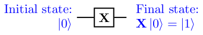
Figure 2: A single Qbit timeline with a NOT operation.
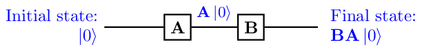
Figure 3: A single Qbit timeline with a series of operations.
- Let's learn about quantum circuits and see what a circuit with a NOT gate looks like
- In quantum circuits, each qubit gets its own timeline that we read from left to right
- By convention, it is assumed that the initial state of the qubit is \(\ket{0}\)
- Basic single-qubit quantum circuits are shown
- Figure 1: A straight line indicates a single-qubit timeline without any transformations
- Figure 2: A single qubit transformed
from \(\ket{0}\) to \(\ket{1}\) using a NOT operator is drawn as a
straight line connecting to boxed \(\mathbf{X}\) (NOT gate)
- The gate input is on the left and is the conventional \(\ket{0}\)
- The gate output is on the right (final state) and is \(\mathbf{X}\ket{0}=\ket{1}\)
- Figure 3: two operations, \(\mathbf{A}\) and
\(\mathbf{B}\), transform the initial state \(\ket{0}\) in sequence
- Since \(\mathbf{A}\) is on the left, it is applied first to \(\ket{0}\), leading to an intermediate state \(\mathbf{A}\ket{0}\)
- The intermediate state is transformed by \(\mathbf{B}\) to the final state, \(\mathbf{B}\mathbf{A}\ket{0}\)
- Note that the the ordering for the mathematical expression \(\mathbf{B}\mathbf{A}\ket{0}\) is consistent with the linear algebraic representation by a transformation by \(\mathbf{A}\) first and then \(\mathbf{B}\)
- In other words, the linear algebraic expression is written in sequence from right to left, but the circuit transformations are drawn in sequence from left to right
Python Code for Figure 1. Single-qubit timeline.
Show/hide code.
'''
This Python script creates a stand-alone LaTeX figure.
'''
from pathlib import Path
import subprocess as sp
import os
homedir = os.getcwd()
targetdir = os.path.join(homedir, 'img')
Path(targetdir).mkdir(exist_ok=True)
jobname = 'single-qubit-timeline'
pdftex = '/Library/TeX/texbin/pdflatex'
tex_script = r"""\documentclass{standalone}
\newcommand{\dx}{1.5}
\usepackage{tikz, graphicx, braket, adjustbox}
\usetikzlibrary{patterns}
\begin{document}
\begin{tikzpicture}[thick]
\tikzstyle{operator} = [draw,fill=white,minimum size=1.5em]
\tikzstyle{phase} = [fill,shape=circle,minimum size=5pt,inner sep=0pt]
% single-qubit timeline
\draw (0,0) coordinate (q1) -- (2*\dx,0) coordinate (end1);
\node [anchor=east, align=right] at (q1) {{\color{blue}Initial state:}\\{\color{blue}$\ket{0}$}};
\node [anchor=west, align=left] at (end1) {{\color{blue}Final state:}\\ {\color{blue}$\ket{0}$}};
\end{tikzpicture}
\end{document}
#end"""
os.chdir(targetdir)
# with open(filename, 'w') as f:
# f.write(tex_script)
# Form the Python command
cmdlist = [pdftex, f'-jobname={jobname}']
p = sp.Popen(cmdlist,
stdin=sp.PIPE,
stdout=sp.PIPE,
stderr=sp.PIPE,
universal_newlines=True)
# run the script
out, err = p.communicate(tex_script)
# Run imagemagick conversion from PDF to PNG
convert_script = """#This is a multiline script
source ~/.zshrc
/opt/local/bin/convert -density 180 {jobname}.pdf -quality 85 {jobname}.png
#end""".format(**locals())
conv = sp.Popen('/bin/zsh',
stdin=sp.PIPE,
stdout=sp.PIPE,
stderr=sp.PIPE,
universal_newlines=True)
# run the script
out_conv, err_conv = conv.communicate(convert_script)
if len(err_conv) > 0:
print(f'There were errors in running ImageMagick:\n{err_conv}')
# clean up
ext_list = ('log', 'aux')
for ext in ext_list:
os.remove( f'{jobname}.{ext}')
os.chdir(homedir)
Python Code for Figure 2. Single-qubit timeline with a NOT operator.
Show/hide code.
'''
This Python script creates a stand-alone LaTeX figure.
'''
from pathlib import Path
import subprocess as sp
import os
homedir = os.getcwd()
targetdir = os.path.join(homedir, 'img')
Path(targetdir).mkdir(exist_ok=True)
jobname = 'single-qubit-NOT'
pdftex = '/Library/TeX/texbin/pdflatex'
tex_script = r"""\documentclass{standalone}
\newcommand{\dx}{0.75}
\usepackage{tikz, graphicx, braket, adjustbox}
\usetikzlibrary{patterns}
\begin{document}
\begin{tikzpicture}[thick]
\tikzstyle{operator} = [draw,fill=white,minimum size=1.5em]
\tikzstyle{phase} = [fill,shape=circle,minimum size=5pt,inner sep=0pt]
% Initial state
\node [anchor=east,align=right] at (0,0) (q1) {{\color{blue}Initial state:}\\{\color{blue} $\ket{0}$}};
% Single-Qbit operator
\node[operator] (op1) at (\dx,0) {$\mathbf{X}$} edge [-] (q1);
% Final state
\node (end1) at (2*\dx,0) {} edge [-] (op1);
\node [anchor=west,align=left] at (end1) (q1f) {{\color{blue}Final state:}\\{\color{blue} $\mathbf{X} \ket{0}=\ket{1}$}};
\end{tikzpicture}
\end{document}
#end"""
os.chdir(targetdir)
# with open(filename, 'w') as f:
# f.write(tex_script)
# Form the Python command
cmdlist = [pdftex, f'-jobname={jobname}']
p = sp.Popen(cmdlist,
stdin=sp.PIPE,
stdout=sp.PIPE,
stderr=sp.PIPE,
universal_newlines=True)
# run the script
out, err = p.communicate(tex_script)
# Run imagemagick conversion from PDF to PNG
convert_script = """#This is a multiline script
source ~/.zshrc
/opt/local/bin/convert -density 180 {jobname}.pdf -quality 85 {jobname}.png
#end""".format(**locals())
conv = sp.Popen('/bin/zsh',
stdin=sp.PIPE,
stdout=sp.PIPE,
stderr=sp.PIPE,
universal_newlines=True)
# run the script
out_conv, err_conv = conv.communicate(convert_script)
if len(err_conv) > 0:
print(f'There were errors in running ImageMagick:\n{err_conv}')
# clean up
ext_list = ('log', 'aux')
for ext in ext_list:
os.remove( f'{jobname}.{ext}')
os.chdir(homedir)
Python Code for Figure 3 (single-qubit timeline with operators).
Show/hide code.
'''
This Python script creates a stand-alone LaTeX figure.
'''
from pathlib import Path
import subprocess as sp
import os
homedir = os.getcwd()
targetdir = os.path.join(homedir, 'img')
Path(targetdir).mkdir(exist_ok=True)
jobname = 'single-qubit-timeline-with-ops'
pdftex = '/Library/TeX/texbin/pdflatex'
tex_script = r"""\documentclass{standalone}
\newcommand{\dx}{1.5}
\usepackage{tikz, graphicx, braket, adjustbox}
\usetikzlibrary{patterns}
\begin{document}
\begin{tikzpicture}[thick]
\tikzstyle{operator} = [draw,fill=white,minimum size=1.5em]
\tikzstyle{phase} = [fill,shape=circle,minimum size=5pt,inner sep=0pt]
% Initial state
\node [anchor=east,align=right] at (0,0) (q1) {{\color{blue}Initial state:}\\{\color{blue} $\ket{0}$}};
% Single-Qbit operator
\node[operator] (op1) at (\dx,0) {$\mathbf{A}$} edge [-] (q1);
\node[operator] (op2) at (2*\dx,0) {$\mathbf{B}$} edge [-] (op1);
% Final state
\node (end1) at (3*\dx,0) {} edge [-] (op2);
\node [anchor=west,align=left] at (end1) (q1f) {{\color{blue}Final state:}\\{\color{blue} $\mathbf{B} \mathbf{A} \ket{0} $}};
\node [anchor=south] at (1.5*\dx,0*\dx) {\small {\color{blue} $\mathbf{A} \ket{0} $}};
\end{tikzpicture}
\end{document}
#end"""
os.chdir(targetdir)
# with open(filename, 'w') as f:
# f.write(tex_script)
# Form the Python command
cmdlist = [pdftex, f'-jobname={jobname}']
p = sp.Popen(cmdlist,
stdin=sp.PIPE,
stdout=sp.PIPE,
stderr=sp.PIPE,
universal_newlines=True)
# run the script
out, err = p.communicate(tex_script)
if len(out) > 0:
print(f'LaTeX output: {out}')
if len(err) > 0:
print(f'There were errors.\nLaTeX errors: {err}')
# Run imagemagick conversion from PDF to PNG
convert_script = """#This is a multiline script
source ~/.zshrc
/opt/local/bin/convert -density 180 {jobname}.pdf -quality 85 {jobname}.png
#end""".format(**locals())
conv = sp.Popen('/bin/zsh',
stdin=sp.PIPE,
stdout=sp.PIPE,
stderr=sp.PIPE,
universal_newlines=True)
# run the script
out_conv, err_conv = conv.communicate(convert_script)
if len(err_conv) > 0:
print(f'There were errors in running ImageMagick:\n{err_conv}')
# clean up
ext_list = ('log', 'aux')
for ext in ext_list:
os.remove( f'{jobname}.{ext}')
os.chdir(homedir)
LaTeX output: This is pdfTeX, Version 3.141592653-2.6-1.40.26 (TeX Live 2024) (preloaded format=pdflatex)
restricted \write18 enabled.
**entering extended mode
LaTeX2e <2023-11-01> patch level 1
L3 programming layer <2024-02-20>
*(/usr/local/texlive/2024/texmf-dist/tex/latex/standalone/standalone.cls
Document Class: standalone 2022/10/10 v1.3b Class to compile TeX sub-files stan
dalone
(/usr/local/texlive/2024/texmf-dist/tex/latex/tools/shellesc.sty)
(/usr/local/texlive/2024/texmf-dist/tex/generic/iftex/ifluatex.sty
(/usr/local/texlive/2024/texmf-dist/tex/generic/iftex/iftex.sty))
(/usr/local/texlive/2024/texmf-dist/tex/latex/xkeyval/xkeyval.sty
(/usr/local/texlive/2024/texmf-dist/tex/generic/xkeyval/xkeyval.tex
(/usr/local/texlive/2024/texmf-dist/tex/generic/xkeyval/xkvutils.tex
(/usr/local/texlive/2024/texmf-dist/tex/generic/xkeyval/keyval.tex))))
(/usr/local/texlive/2024/texmf-dist/tex/latex/standalone/standalone.cfg)
(/usr/local/texlive/2024/texmf-dist/tex/latex/base/article.cls
Document Class: article 2023/05/17 v1.4n Standard LaTeX document class
(/usr/local/texlive/2024/texmf-dist/tex/latex/base/size10.clo)))
*
*(/usr/local/texlive/2024/texmf-dist/tex/latex/pgf/frontendlayer/tikz.sty
(/usr/local/texlive/2024/texmf-dist/tex/latex/pgf/basiclayer/pgf.sty
(/usr/local/texlive/2024/texmf-dist/tex/latex/pgf/utilities/pgfrcs.sty
(/usr/local/texlive/2024/texmf-dist/tex/generic/pgf/utilities/pgfutil-common.te
x)
(/usr/local/texlive/2024/texmf-dist/tex/generic/pgf/utilities/pgfutil-latex.def
) (/usr/local/texlive/2024/texmf-dist/tex/generic/pgf/utilities/pgfrcs.code.tex
(/usr/local/texlive/2024/texmf-dist/tex/generic/pgf/pgf.revision.tex)))
(/usr/local/texlive/2024/texmf-dist/tex/latex/pgf/basiclayer/pgfcore.sty
(/usr/local/texlive/2024/texmf-dist/tex/latex/graphics/graphicx.sty
(/usr/local/texlive/2024/texmf-dist/tex/latex/graphics/graphics.sty
(/usr/local/texlive/2024/texmf-dist/tex/latex/graphics/trig.sty)
(/usr/local/texlive/2024/texmf-dist/tex/latex/graphics-cfg/graphics.cfg)
(/usr/local/texlive/2024/texmf-dist/tex/latex/graphics-def/pdftex.def)))
(/usr/local/texlive/2024/texmf-dist/tex/latex/pgf/systemlayer/pgfsys.sty
(/usr/local/texlive/2024/texmf-dist/tex/generic/pgf/systemlayer/pgfsys.code.tex
(/usr/local/texlive/2024/texmf-dist/tex/generic/pgf/utilities/pgfkeys.code.tex
(/usr/local/texlive/2024/texmf-dist/tex/generic/pgf/utilities/pgfkeyslibraryfil
tered.code.tex))
(/usr/local/texlive/2024/texmf-dist/tex/generic/pgf/systemlayer/pgf.cfg)
(/usr/local/texlive/2024/texmf-dist/tex/generic/pgf/systemlayer/pgfsys-pdftex.d
ef
(/usr/local/texlive/2024/texmf-dist/tex/generic/pgf/systemlayer/pgfsys-common-p
df.def)))
(/usr/local/texlive/2024/texmf-dist/tex/generic/pgf/systemlayer/pgfsyssoftpath.
code.tex)
(/usr/local/texlive/2024/texmf-dist/tex/generic/pgf/systemlayer/pgfsysprotocol.
code.tex)) (/usr/local/texlive/2024/texmf-dist/tex/latex/xcolor/xcolor.sty
(/usr/local/texlive/2024/texmf-dist/tex/latex/graphics-cfg/color.cfg)
(/usr/local/texlive/2024/texmf-dist/tex/latex/graphics/mathcolor.ltx))
(/usr/local/texlive/2024/texmf-dist/tex/generic/pgf/basiclayer/pgfcore.code.tex
(/usr/local/texlive/2024/texmf-dist/tex/generic/pgf/math/pgfmath.code.tex
(/usr/local/texlive/2024/texmf-dist/tex/generic/pgf/math/pgfmathutil.code.tex)
(/usr/local/texlive/2024/texmf-dist/tex/generic/pgf/math/pgfmathparser.code.tex
)
(/usr/local/texlive/2024/texmf-dist/tex/generic/pgf/math/pgfmathfunctions.code.
tex)
(/usr/local/texlive/2024/texmf-dist/tex/generic/pgf/math/pgfmathfunctions.basic
.code.tex)
(/usr/local/texlive/2024/texmf-dist/tex/generic/pgf/math/pgfmathfunctions.trigo
nometric.code.tex)
(/usr/local/texlive/2024/texmf-dist/tex/generic/pgf/math/pgfmathfunctions.rando
m.code.tex)
(/usr/local/texlive/2024/texmf-dist/tex/generic/pgf/math/pgfmathfunctions.compa
rison.code.tex)
(/usr/local/texlive/2024/texmf-dist/tex/generic/pgf/math/pgfmathfunctions.base.
code.tex)
(/usr/local/texlive/2024/texmf-dist/tex/generic/pgf/math/pgfmathfunctions.round
.code.tex)
(/usr/local/texlive/2024/texmf-dist/tex/generic/pgf/math/pgfmathfunctions.misc.
code.tex)
(/usr/local/texlive/2024/texmf-dist/tex/generic/pgf/math/pgfmathfunctions.integ
erarithmetics.code.tex)
(/usr/local/texlive/2024/texmf-dist/tex/generic/pgf/math/pgfmathcalc.code.tex)
(/usr/local/texlive/2024/texmf-dist/tex/generic/pgf/math/pgfmathfloat.code.tex)
) (/usr/local/texlive/2024/texmf-dist/tex/generic/pgf/math/pgfint.code.tex)
(/usr/local/texlive/2024/texmf-dist/tex/generic/pgf/basiclayer/pgfcorepoints.co
de.tex)
(/usr/local/texlive/2024/texmf-dist/tex/generic/pgf/basiclayer/pgfcorepathconst
ruct.code.tex)
(/usr/local/texlive/2024/texmf-dist/tex/generic/pgf/basiclayer/pgfcorepathusage
.code.tex)
(/usr/local/texlive/2024/texmf-dist/tex/generic/pgf/basiclayer/pgfcorescopes.co
de.tex)
(/usr/local/texlive/2024/texmf-dist/tex/generic/pgf/basiclayer/pgfcoregraphicst
ate.code.tex)
(/usr/local/texlive/2024/texmf-dist/tex/generic/pgf/basiclayer/pgfcoretransform
ations.code.tex)
(/usr/local/texlive/2024/texmf-dist/tex/generic/pgf/basiclayer/pgfcorequick.cod
e.tex)
(/usr/local/texlive/2024/texmf-dist/tex/generic/pgf/basiclayer/pgfcoreobjects.c
ode.tex)
(/usr/local/texlive/2024/texmf-dist/tex/generic/pgf/basiclayer/pgfcorepathproce
ssing.code.tex)
(/usr/local/texlive/2024/texmf-dist/tex/generic/pgf/basiclayer/pgfcorearrows.co
de.tex)
(/usr/local/texlive/2024/texmf-dist/tex/generic/pgf/basiclayer/pgfcoreshade.cod
e.tex)
(/usr/local/texlive/2024/texmf-dist/tex/generic/pgf/basiclayer/pgfcoreimage.cod
e.tex)
(/usr/local/texlive/2024/texmf-dist/tex/generic/pgf/basiclayer/pgfcoreexternal.
code.tex)
(/usr/local/texlive/2024/texmf-dist/tex/generic/pgf/basiclayer/pgfcorelayers.co
de.tex)
(/usr/local/texlive/2024/texmf-dist/tex/generic/pgf/basiclayer/pgfcoretranspare
ncy.code.tex)
(/usr/local/texlive/2024/texmf-dist/tex/generic/pgf/basiclayer/pgfcorepatterns.
code.tex)
(/usr/local/texlive/2024/texmf-dist/tex/generic/pgf/basiclayer/pgfcorerdf.code.
tex)))
(/usr/local/texlive/2024/texmf-dist/tex/generic/pgf/modules/pgfmoduleshapes.cod
e.tex)
(/usr/local/texlive/2024/texmf-dist/tex/generic/pgf/modules/pgfmoduleplot.code.
tex)
(/usr/local/texlive/2024/texmf-dist/tex/latex/pgf/compatibility/pgfcomp-version
-0-65.sty)
(/usr/local/texlive/2024/texmf-dist/tex/latex/pgf/compatibility/pgfcomp-version
-1-18.sty))
(/usr/local/texlive/2024/texmf-dist/tex/latex/pgf/utilities/pgffor.sty
(/usr/local/texlive/2024/texmf-dist/tex/latex/pgf/utilities/pgfkeys.sty
(/usr/local/texlive/2024/texmf-dist/tex/generic/pgf/utilities/pgfkeys.code.tex)
) (/usr/local/texlive/2024/texmf-dist/tex/latex/pgf/math/pgfmath.sty
(/usr/local/texlive/2024/texmf-dist/tex/generic/pgf/math/pgfmath.code.tex))
(/usr/local/texlive/2024/texmf-dist/tex/generic/pgf/utilities/pgffor.code.tex))
(/usr/local/texlive/2024/texmf-dist/tex/generic/pgf/frontendlayer/tikz/tikz.cod
e.tex
(/usr/local/texlive/2024/texmf-dist/tex/generic/pgf/libraries/pgflibraryplothan
dlers.code.tex)
(/usr/local/texlive/2024/texmf-dist/tex/generic/pgf/modules/pgfmodulematrix.cod
e.tex)
(/usr/local/texlive/2024/texmf-dist/tex/generic/pgf/frontendlayer/tikz/librarie
s/tikzlibrarytopaths.code.tex)))
(/usr/local/texlive/2024/texmf-dist/tex/latex/braket/braket.sty)
(/usr/local/texlive/2024/texmf-dist/tex/latex/adjustbox/adjustbox.sty
(/usr/local/texlive/2024/texmf-dist/tex/latex/adjustbox/adjcalc.sty)
(/usr/local/texlive/2024/texmf-dist/tex/latex/adjustbox/trimclip.sty
(/usr/local/texlive/2024/texmf-dist/tex/latex/collectbox/collectbox.sty)
(/usr/local/texlive/2024/texmf-dist/tex/latex/adjustbox/tc-pdftex.def))
(/usr/local/texlive/2024/texmf-dist/tex/latex/ifoddpage/ifoddpage.sty)
(/usr/local/texlive/2024/texmf-dist/tex/latex/varwidth/varwidth.sty))
(/usr/local/texlive/2024/texmf-dist/tex/generic/pgf/frontendlayer/tikz/librarie
s/tikzlibrarypatterns.code.tex
(/usr/local/texlive/2024/texmf-dist/tex/generic/pgf/libraries/pgflibrarypattern
s.code.tex))
*(Please type a command or say `\end')
*(/usr/local/texlive/2024/texmf-dist/tex/latex/l3backend/l3backend-pdftex.def)
No file single-qubit-timeline-with-ops.aux.
(/usr/local/texlive/2024/texmf-dist/tex/context/base/mkii/supp-pdf.mkii
[Loading MPS to PDF converter (version 2006.09.02).]
) (/usr/local/texlive/2024/texmf-dist/tex/latex/epstopdf-pkg/epstopdf-base.sty
(/usr/local/texlive/2024/texmf-dist/tex/latex/latexconfig/epstopdf-sys.cfg))
*
*
*
*
*
*
*
*
*
*
*
*
*
*(Please type a command or say `\end')
*[1{/usr/local/texlive/2024/texmf-var/fonts/map/pdftex/updmap/pdftex.map}]
(./single-qubit-timeline-with-ops.aux)</usr/local/texlive/2024/texmf-dist/fonts
/type1/public/amsfonts/cm/cmbx10.pfb></usr/local/texlive/2024/texmf-dist/fonts/
type1/public/amsfonts/cm/cmbx9.pfb></usr/local/texlive/2024/texmf-dist/fonts/ty
pe1/public/amsfonts/cm/cmr10.pfb></usr/local/texlive/2024/texmf-dist/fonts/type
1/public/amsfonts/cm/cmr9.pfb></usr/local/texlive/2024/texmf-dist/fonts/type1/p
ublic/amsfonts/cm/cmsy10.pfb></usr/local/texlive/2024/texmf-dist/fonts/type1/pu
blic/amsfonts/cm/cmsy9.pfb>
Output written on single-qubit-timeline-with-ops.pdf (1 page, 54905 bytes).
Transcript written on single-qubit-timeline-with-ops.log.
3.3. The Pauli Operators
The NOT operator \(\mathbf{X}\) is equivalent to the Pauli operator,
\begin{equation} \label{orgf88b0ca} \mathbf{X}=\sigma_{x}=\left[\begin{array}{cc} 0 & 1\\ 1 & 0 \end{array}\right] \end{equation}In addition to \(\sigma_{x}\), there are two other Pauli operators,
\begin{equation} \label{org60e4988} \mathbf{Y}=\sigma_{y}=\left[\begin{array}{cc} 0 & i\\ -i & 0 \end{array}\right],\qquad\text{and}\qquad\mathbf{Z}=\sigma_{z}=\left[\begin{array}{cc} -1 & 0\\ 0 & 1 \end{array}\right] \end{equation}Note: most often, \(\mathbf{Y}\) and \(\mathbf{Z}\) will be written as
\begin{equation} \label{orgde5221e} \mathbf{Y}=\sigma_{y}=\left[\begin{array}{cc} 0 & -i\\ i & 0 \end{array}\right],\qquad\text{and}\qquad\mathbf{Z}=\sigma_{z}=\left[\begin{array}{cc} 1 & 0\\ 0 & -1 \end{array}\right] \end{equation}- There are two conventions here
- The least popular convention orders the eigenvalues of \(\mathbf{Z}\) from least to greatest going down the diagonal
- It is more common in quantum computing literature to use the definitions of Equation \eqref{orgde5221e}
- Thus, we will prefer the convention of Equation \eqref{orgde5221e} for quantum computing applications, and we may use the convention of Equation \eqref{org60e4988} when doing quantum mechanics
- While \(\mathbf{X}\) can be understood classically, \(\mathbf{Y}\) and
\(\mathbf{Z}\) do not have a classical meaning
- These gates introduce a complex phase
- Complex phase is important because it allows for constructive and destructive interference of quantum wave functions
- In generally, we can think of quantum computations as interference
experiments:
- We set up a quantum circuit to cancel probabilities of unwanted answers
- After measurement, we achieve the desired answer, or some combination of desirable answers
Exercise 3.5 How does \(\mathbf{Z}\) transform the states \(\ket{0}\) and \(\ket{1}\)?
Show/hide solution...
\begin{equation} #+name: eq:Zket0 \mathbf{Z}\ket{0}=\left[\begin{array}{cc} 1 & 0\\ 0 & -1 \end{array}\right]\begin{bmatrix}1\\ 0 \end{bmatrix}=\begin{bmatrix}1\\ 0 \end{bmatrix}=\ket{0} #+name: eq:Zket1 \end{equation} \begin{equation} \mathbf{Z}\ket{1}=\left[\begin{array}{cc} 1 & 0\\ 0 & -1 \end{array}\right]\begin{bmatrix}0\\ 1 \end{bmatrix}=\begin{bmatrix}0\\ -1 \end{bmatrix}=-\ket{1} \end{equation}3.4. Complex Phase and Interference
- What does it mean for \(\mathbf{Z}\) to transform \(\ket{1}\) into
\(-\ket{1}\)?
- The NOT operation (\(\mathbf{X}\)) has classical significance, but \(\mathbf{Z}\) cannot be understood in a way that is classical
- The negative sign, that is, a factor of \(-1=e^{i\pi}\), is said to be
a complex phase factor (also: complex phase or phase factor or
phase).
- This has no classical meaning, but phase allows for constructive or destructive interference
3.4.1. Interference
To understand interference, let's introduce another operator, the Hadamard transformation, \(\mathbf{H}\):
\begin{equation} \label{org0dc4142} \mathbf{H}=\frac{1}{\sqrt{2}}\left(\mathbf{X}+\mathbf{Z}\right) \end{equation}- The next exercise will prepare us to discover interference in quantum states.
Exercise 3.6 Consider \(\mathbf{H}\) from Equation \eqref{org0dc4142}.
Determine how \(\mathbf{H}\) transforms the classical states \(\ket{0}\) and \(\ket{1}\).
Show/hide solution...
Start with\(\ket{0}\):
\begin{equation} \label{org6f5c2a2} \begin{aligned} \mathbf{H}\ket{0} & =\left(\frac{1}{\sqrt{2}}\left(\mathbf{X}+\mathbf{Z}\right)\right)\ket{0}\nonumber \\ & =\frac{1}{\sqrt{2}}\left(\mathbf{X}\ket{0}+\mathbf{Z}\ket{0}\right)\nonumber \\ & =\frac{1}{\sqrt{2}}\left(\ket{1}+\ket{0}\right)=\frac{1}{\sqrt{2}}\left(\ket{0}+\ket{1}\right)\equiv\ket{+} \end{aligned} \end{equation}Here, we have used Equation \eqref{org0dc4142} to expand \(\mathbf{H}\), and we have used the action of \(\mathbf{H}\) on \(\ket{0}\) and \(\ket{1}\) from the previous exercise, see .
\begin{equation} \label{org4985ff5} \begin{aligned} \mathbf{H}\ket{1} & =\left(\frac{1}{\sqrt{2}}\left(\mathbf{X}+\mathbf{Z}\right)\right)\ket{1}\nonumber \\ & =\frac{1}{\sqrt{2}}\left(\mathbf{X}\ket{1}+\mathbf{Z}\ket{1}\right)\nonumber \\ & =\frac{1}{\sqrt{2}}\left(\ket{0}-\ket{1}\right)\equiv\ket{-} \end{aligned} \end{equation}Here, we have defined the kets \(\ket{\pm}\) as a compact shorthand for writing \(\left(1/\sqrt{2}\right)\left(\ket{0}\pm\ket{1}\right)\). We can then write these states as column vectors:
\begin{equation} \ket{\pm}=\frac{1}{\sqrt{2}}\left(\ket{0}\pm\ket{1}\right)\qquad\leftrightarrow\qquad\frac{1}{\sqrt{2}}\left[\begin{array}{c} 1\\ \pm1 \end{array}\right] \end{equation}Find the matrix representation of \(\mathbf{H}\) in the computational basis.
Show/hide solution...
We canconstruct the matrix representation of \(\mathbf{H}\) in a column-wise manner:
\begin{equation} \mathbf{H}=\left[\begin{array}{cc} \mathbf{H}\ket{0} & \mathbf{H}\ket{1}\end{array}\right]=\frac{1}{\sqrt{2}}\left[\begin{array}{cc} 1 & 1\\ 1 & -1 \end{array}\right] \end{equation}Alternately, we could use Equations \eqref{orgf88b0ca} and \eqref{orgde5221e}.
Sketch a single-qubit circuit to transform \(\ket{0}\) using the Hadamard operation. Calculate the probabilities of measuring \(\ket{0}\) and \(\ket{1}\) for both the initial and final states.
Show/hide solution...
The circuitis shown in Figure 4. For the initial state, we have a 100% probability for measuring "0" and a 0% probability of measuring state "1":
\begin{equation} p\left(0\right)=1,\qquad p\left(1\right)=0 \end{equation}For the final state, we have
\begin{equation} \ket{+}=\frac{1}{\sqrt{2}}\left(\ket{0}+\ket{1}\right)=\frac{1}{\sqrt{2}}\ket{0}+\frac{1}{\sqrt{2}}\ket{1}, \end{equation}so we can calculate an equal probability for measuring "0" or "1":
\begin{equation} p\left(0\right)=p\left(1\right)=\left(\frac{1}{\sqrt{2}}\right)^{2}=\frac{1}{2} \end{equation}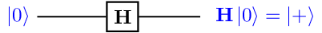
Figure 4: A single qubit timeline with a \(\mathbf{H}\) operation on \(\ket{0}\).
Sketch a single-qubit circuit to transform \(\ket{1}\) using the Hadamard operation. Calculate the probabilities of measuring \(\ket{0}\) and \(\ket{1}\) for both the initial and final states.
Show/hide solution...
To achieve\(\ket{1}\), we must first transform the conventional inital \(\ket{0}\) using the \(\mathbf{X}\) operator. Then, we can apply a \(\mathbf{H}\) operation. The circuit is shown in Figure 5. For the initial state, we have a 100% probability for measuring "1" and a 0% probability of measuring state "0":
\begin{equation} p\left(0\right)=0,\qquad p\left(1\right)=1 \end{equation}For the final state, we have
\begin{equation} \ket{-}=\frac{1}{\sqrt{2}}\left(\ket{0}-\ket{1}\right)=\frac{1}{\sqrt{2}}\ket{0}-\frac{1}{\sqrt{2}}\ket{1}, \end{equation}so we can calculate an equal probability for measuring "0" or "1":
\begin{equation} p\left(0\right)=\left(\frac{1}{\sqrt{2}}\right)^{2}=\frac{1}{2},\qquad p\left(1\right)=\left(-\frac{1}{\sqrt{2}}\right)^{2}=\frac{1}{2}. \end{equation}From the standpoint of measurement probabilities, we cannot tell the difference between the kets \(\ket{\pm}\).
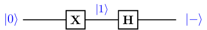
Figure 5: A single qubit timeline with a \(\mathbf{H}\) operation on \(\ket{0}\).
Exercise 3.7 Consider the circuit of Figure 6.
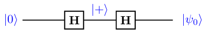
Figure 6: A single Qbit timeline with an \(\mathbf{H}^{2}\) operation on \(\ket{0}\).
Find the final state \(\ket{\psi_{0}}\).
Show/hide solution...
\begin{equation} \label{org1a1d33b} \begin{aligned} \ket{\psi_{0}} & =\mathbf{H}\ket{+}=\frac{1}{\sqrt{2}}\mathbf{H}\left(\ket{0}+\ket{1}\right)\nonumber \\ & =\frac{1}{\sqrt{2}}\left(\mathbf{H}\ket{0}+\mathbf{H}\ket{1}\right)\nonumber \\ & =\frac{1}{\sqrt{2}}\left(\frac{1}{\sqrt{2}}\left(\ket{0}+\ket{1}\right)+\frac{1}{\sqrt{2}}\left(\ket{0}-\ket{1}\right)\right)\nonumber \\ & =\frac{1}{2}\left(\ket{0}+\ket{1}+\ket{0}-\ket{1}\right)\nonumber \\ & =\frac{1}{2}\left(\left(1+1\right)\ket{0}+\left(1-1\right)\right)\\ & =\ket{0} \end{aligned} \end{equation}Find the final probabilities for measuring "0" and "1".
Show/hide solution...
We see herethat we have full probability of measuring "0" and zero probability of measuring "1":
\begin{equation} p\left(0\right)=1,\qquad p\left(1\right)=0 \end{equation}
Exercise 3.8 Consider the circuit of Figure 7.
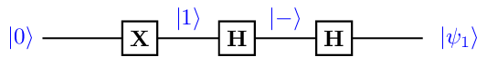
Figure 7: A single Qbit timeline with an \(\mathbf{H}^{2}\) operation on \(\ket{1}\).
Find the final state \(\ket{\psi_{1}}\).
Show/hide solution...
\begin{equation} \label{org6aa3e34} \begin{aligned} \ket{\psi_{1}} & =\mathbf{H}\ket{-}=\frac{1}{\sqrt{2}}\mathbf{H}\left(\ket{0}-\ket{1}\right)\nonumber \\ & =\frac{1}{\sqrt{2}}\left(\mathbf{H}\ket{0}-\mathbf{H}\ket{1}\right)\nonumber \\ & =\frac{1}{\sqrt{2}}\left(\frac{1}{\sqrt{2}}\left(\ket{0}+\ket{1}\right)-\frac{1}{\sqrt{2}}\left(\ket{0}-\ket{1}\right)\right)\nonumber \\ & =\frac{1}{2}\left(\ket{0}+\ket{1}-\ket{0}+\ket{1}\right)\nonumber \\ & =\frac{1}{2}\left(\left(1-1\right)\ket{0}+\left(1+1\right)\ket{1}\right)\\ & =\ket{1} \end{aligned} \end{equation}Find the final probabilities for measuring "0" and "1".
Show/hide solution...
We see herethat we have full probability of measuring "1" and zero probability of measuring "0":
\begin{equation} p\left(0\right)=0,\qquad p\left(1\right)=1 \end{equation}
- In the previous two exercises, we have probability amplitudes
\(c_{k}\) canceling in the lines prior to Equations
\eqref{org1a1d33b} and \eqref{org6aa3e34}
- This is a destructive interference, which leads to zero probability \(c_{k}^{\ast}c_{k}=\left|c_{k}\right|^{2}\) of measuring certain outcomes
- Similarly, we have the constructive interference of certain other probability amplitudes \(c_{k^{\prime}}\) which enhances the probability \(c_{k^{\prime}}^{\ast}c_{k^{\prime}}=\left|c_{k^{\prime}}\right|^{2}\) of measuring these outcomes
- We have now seen constructive and destructive interference at work in a very simple case with quantum information
- It turns out that interference is one of the key principles in quantum
computing
- quantum circuits use destructive interference to suppress the probability of measuring certain unwanted outcomes
- other more-desirable outcomes have enhanced measurement probabilities via constructive interference
- measurement is a probabilistic process that returns one of the outcomes with a non-zero probability of measurement
3.5. The Hamiltonian - a very important operator
- The Hamiltonian, \(\hat{H}\), is an important operator because it
appears in two essentially important equations from quantum mechanics:
The time-dependent Schrödinger equation (TDSE),
\begin{equation} \label{org33cf856} \frac{d}{dt}\ket{\psi}=-\frac{i}{\hbar}\hat{H}\ket{\psi} \end{equation}- \(i\) is an imaginary number and \(\hbar\) is the reduced Planck constant
If \(\hat{H}\) is constant in time, i.e., \(d\hat{H}/dt=0\), then, given an initial state \(\ket{\psi\left(0\right)}\), it can be shown that the state at some later time \(t\) is
\begin{equation} \label{orgd6a2556} \ket{\psi\left(t\right)}=\exp\left(-\frac{i}{\hbar}\hat{H}t\right)\ket{\psi\left(0\right)}. \end{equation}This may often be written as
\begin{equation} \label{org21a80ba} \ket{\psi\left(t\right)}=\hat{U}\left(t\right)\ket{\psi\left(0\right)}, \end{equation}where
\begin{equation} \label{orgd4c7fa5} \hat{U}\left(t\right)=\exp\left(-\frac{i}{\hbar}\hat{H}t\right) \end{equation}
- If \(\hat{H}\) is not constant, we need other methods to calculate \(\ket{\psi\left(t\right)}\)
The time-independent Schrödinger equation,
\begin{equation} \label{org9cdd64c} \hat{H}\ket{\psi_{n}}=E_{n}\ket{\psi_{n}} \end{equation}also is a very important equation in quantum mechanics
- Solutions to the time-independent Schrödinger equation (TISE) involve finding the eigenenergies \(\left\{ E_{n}\right\}\) and their associated eigenstates, \(\left\{ \ket{\psi_{n}}\right\} .\)
- This is a direct application of linear algebra
- We often write the Hamiltonian as a matrix
- Then, finding \(\ket{\psi_{n}}\) and the corresponding \(E_{n}\) is a matter of finding the eigenvalues and eigenvectors of the matrix \(\hat{H}\)
- The quantum state \(\ket{\psi_{n}}\) is said to be the eigenstate
associated with eigenenergy \(E_{n}\)
- These have a VERY important role to play in all of physics and chemistry
- The eigenstates and eigenenergies are the reason electrons do not simply collapse to a point and rest against the nucleus of an atom: this state does not have an energy equal to an allowed energy, and thus, this state is forbidden!
- The eigenstates of electrons in atoms determine how atoms interact with one another
- Without the eigenstates and eigenenergies from quantum mechanics and linear algebra, chemistry would be VERY boring, and biological life as we know it would be impossible, and the universe would be very uninteresting
- Warning: the Hamiltonian \(\hat{H}\) is not the same as the Hadamard
transformation, \(\mathbf{H}\)
- The Hamiltonian \(\hat{H}\) is used to describe the energetics of a quantum system
- The Hadamard \(\mathbf{H}\) is used in quantum information processing applications
- Pay close attention so you can distinguish when we are talking about a Hamiltonian or a Hadamard operation
- For clarity, I will attempt to use two different symbols, \(\hat{H}\) and \(\mathbf{H}\), to help us distinguish between the Hadamard operation and the Hamiltonian
- We will focus on the simpler of the two equations, the
time-independent Schrödinger equation of Equation
\eqref{org9cdd64c}
- Notice that Equation \eqref{org9cdd64c} is nothing more than an eigenvalue problem, with eigenvalues \(\left\{ E_{n}\right\}\) and eigenstates \(\left\{ \ket{\psi_{n}}\right\}\)
- In the context of quantum mechanics, the eigenvalues
\(\left\{ E_{n}\right\}\) are given the name eigenenergies, since
they are energies in fact
- Thus, the eigenenergies have units of energy
- The eigenenergies of \(\hat{H}\) specify the only values that can
be obtained on a measurement of the total system energy
- Because of this, the eigenenergies may be thought of as "allowed energies"
- Other energies can never be measured and are said to be "forbidden energies"
- Quantum states \(\left\{ \ket{\psi_{n}}\right\}\) are unitless, and \(E_{n}\) has units of energy
- Thus, \(\hat{H}\) must also have units of energy
3.5.1. The electron-volt: a Unit of Energy
- Electron-volts are more appropriate for quantum systems than Joules
Recall the Volt is an energy per unit charge:
\begin{equation} \label{org501bdc3} 1\;\text{V}=\frac{1\;\text{J}}{1\;\text{C}} \end{equation}The electron-volt (eV) is an energy per unit charge times a chage, which is an energy:
\begin{equation} 1\;\text{eV}=\frac{1\;\text{J}}{1\;\text{C}}q_{e}, \end{equation}where \(q_{e}\) is the fundamental charge:
\begin{equation} \label{org9f83dc0} q_{e}=1.602\times10^{-19}\;\text{C} \end{equation}Thus, we can covert eV to J:
\begin{equation} \label{orge5f1c5e} 1\;\text{eV}=\frac{1\;\text{J}}{1\;\text{C}}\left(1.602\times10^{-19}\;\text{C}\right)=1.602\times10^{-19}\;\text{J} \end{equation}
3.5.2. The Matrix Elements of \(\hat{H}\)
- The matrix elements of \(\hat{H}\) have certain meanings
- The diagonal elements of \(\hat{H}\) are denoted
\(\braket{n|\hat{H}|n}\)
- These are called occupation energies because they are the potential energy of the system when it occupies state \(\ket{n}\)
- The off-diagonal elements of \(\hat{H}\) are denoted
\(\braket{m|\hat{H}|n}\)
- These are called transition energies because they are kinetic eneriges for a transition of the system from state \(\ket{m}\) to state \(\ket{n}\)
Exercise 3.9 Consider the computational molecule of Figure 8. Write the Hamiltonian for this two-state molecule given that state \(\ket{1}\) is an energy \(\Delta\) higher than state \(\ket{0}\), and the transition energy for \(\ket{0}\rightarrow\ket{1}\) or \(\ket{1}\rightarrow\ket{0}\) is \(-\gamma\).
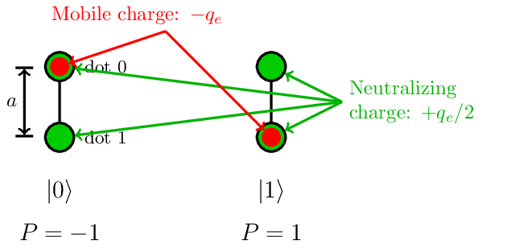
Figure 8: The two states of a computational molecule. Black circles represent quantum dots, which trap a mobile charge. Two dots are separated by length \(a\), and the connecting bar denotes a tunneling path between the dots. A red disc represents a mobile electron. The system has two classical states, which encode a bit. Fixed neutralizing charge present on each dot is represented as green filling in the dot. This indicates the presence of \(+q_{e}/2\) on each dot. This keeps the molecules overall neutral, and we will not explicitly illustrate the neutralizing charge henceforth. Thus, when a mobile electron occupies a dot, the net charge on the dot is \(-q_{e}/2\). The other (unoccupied) dot has the fixed neutralizing charge uncovered, so its net charge is \(+q_{e}/2\).
Show/hide solution...
We first write the Hamiltonian in terms of its four matrix elements:
\begin{equation} \hat{H}=\left[\begin{array}{cc} H_{00} & H_{01}\\ H_{10} & H_{11} \end{array}\right]=\left[\begin{array}{cc} \braket{0|\hat{H}|0} & \braket{0|\hat{H}|1}\\ \braket{1|\hat{H}|0} & \braket{1|\hat{H}|1} \end{array}\right] \end{equation}The problem statement encodes for us the following relationships:
\begin{equation} \label{org579cbed} \braket{1|\hat{H}|1}-\braket{0|\hat{H}|0}=\Delta, \end{equation}and
\begin{equation} \braket{1|\hat{H}|0}=\braket{0|\hat{H}|1}=-\gamma \end{equation}Since the occupation energies \(\braket{n|\hat{H}|n}\) are potential energies, we get to pick the reference potential energy, i.e., we can choose the value of zero potential energy. This is equivalent to choosing a ground node in the circuit. Let us define the zero to be the midway point between \(\braket{1|\hat{H}|1}\) and \(\braket{0|\hat{H}|0}\):
\begin{equation} \label{org7dafb9b} 0\equiv\frac{1}{2}\left(\braket{1|\hat{H}|1}+\braket{0|\hat{H}|0}\right) \end{equation}We can eliminate \(\braket{0|\hat{H}|0}\) using Equation \eqref{org579cbed} to obtain \(\braket{1|\hat{H}|1}-\Delta=\braket{0|\hat{H}|0}\) so that Equation \eqref{org7dafb9b} becomes
\begin{equation} 0\equiv\frac{1}{2}\left(\braket{1|\hat{H}|1}+\braket{1|\hat{H}|1}-\Delta\right)\quad\rightarrow\quad\braket{1|\hat{H}|1}=\frac{\Delta}{2}. \end{equation}Similarly, we can use Equation \eqref{org579cbed} to obtain \(\braket{1|\hat{H}|1}=\braket{0|\hat{H}|0}+\Delta\), which gives us
\begin{equation} 0\equiv\frac{1}{2}\left(\braket{0|\hat{H}|0}+\Delta+\braket{0|\hat{H}|0}\right)\quad\rightarrow\quad\braket{0|\hat{H}|0}=-\frac{\Delta}{2} \end{equation}Thus, we can use Equations \eqref{orgf88b0ca} and \eqref{org60e4988} to write the Hamiltonian as
\begin{equation} \label{org44c364c} \hat{H}=\left[\begin{array}{cc} -\frac{\Delta}{2} & -\gamma\\ -\gamma & \frac{\Delta}{2} \end{array}\right]=-\gamma\sigma_{x}+\frac{\Delta}{2}\sigma_{z} \end{equation}Here, we have used \(\sigma_{x}\) and \(\sigma_{z}\) to write the Hamiltonian in a nicer form. Notice that we are using the quantum mechanics convention of Equation \eqref{org60e4988}.
3.5.3. The Ground State
- The physics of the real world dictate that there is a lowest eigenenergy for a given physical system, and it is called the ground state energy.
- The ground state energy is indexed using either \(n=0\) or \(n=1\),
depending on the context (different physical systems have different
conventions)
- For a trapped particle in a box, we typically use \(E_{1}\) as the ground state energy
- For a particle trapped in a parabolic potential (quantum harmonic oscillator), we usually label the ground state energy \(E_{0}\)
- The state \(\ket{0}\) or \(\ket{1}\) associated with the ground state energy \(E_{0}\) or \(E_{1}\) is called the ground state.
Exercise 3.10 Calculate the ground state of the molecule from Figure 8 by hand.
Show/hide solution...
We can do this by finding the eigenvalues and the eigenvectors of \(\hat{H}\). To find the eigenvalues, use
\begin{equation} \det\left(\hat{H}-E_{n}\mathbf{1}\right)=0 \end{equation}Using the elements of \(\hat{H}\) we found, we write
\begin{equation} \begin{aligned} 0 & =\det\left(\hat{H}-E_{n}\mathbf{1}\right)=\det\left(\left[\begin{array}{cc} -\frac{\Delta}{2} & -\gamma\\ -\gamma & \frac{\Delta}{2} \end{array}\right]-E_{n}\left[\begin{array}{cc} 1 & 0\\ 0 & 1 \end{array}\right]\right)=\left|\begin{array}{cc} -\frac{\Delta}{2}-E_{n} & -\gamma\\ -\gamma & \frac{\Delta}{2}-E_{n} \end{array}\right|\\ & =\left(-\frac{\Delta}{2}-E_{n}\right)\left(\frac{\Delta}{2}-E_{n}\right)-\gamma^{2}\\ & =-\frac{\Delta^{2}}{4}+E_{n}^{2}-\gamma^{2} \end{aligned} \end{equation}so that
\begin{equation} E_{n}=\pm\sqrt{\frac{\Delta^{2}}{4}+\gamma^{2}}=\pm\frac{1}{2}\sqrt{\Delta^{2}+4\gamma^{2}} \end{equation}The ground state energy, \(E_{1}\), is the lower of these values, and the first excited state energy is higher:
\begin{equation} \begin{aligned} E_{1} & =-\frac{1}{2}\sqrt{\Delta^{2}+4\gamma^{2}}\\ E_{2} & =\frac{1}{2}\sqrt{\Delta^{2}+4\gamma^{2}} \end{aligned} \end{equation}Now that we have \(E_{1}\), we can use it in Equation \eqref{org9cdd64c} along with \(\hat{H}\) to find \(\ket{\psi_{1}}\). Write the time-independent Schrödinger equation for \(E_{1}\) and \(\ket{\psi_{1}}\):
\begin{equation} \label{org849f284} \begin{aligned} \hat{H}\ket{\psi_{1}} & =E_{1}\ket{\psi_{1}}\nonumber \\ & \downarrow\nonumber \\ \left[\begin{array}{cc} -\frac{\Delta}{2} & -\gamma\\ -\gamma & \frac{\Delta}{2} \end{array}\right]\left[\begin{array}{c} a\\ b \end{array}\right] & =-\frac{1}{2}\sqrt{\Delta^{2}+4\gamma^{2}}\left[\begin{array}{c} a\\ b \end{array}\right]\nonumber \\ & \downarrow\nonumber \\ -\frac{\Delta}{2}a-\gamma b & =-a\frac{1}{2}\sqrt{\Delta^{2}+4\gamma^{2}}\\ -\gamma a+\frac{\Delta}{2}b & =-b\frac{1}{2}\sqrt{\Delta^{2}+4\gamma^{2}} \end{aligned} \end{equation}If we take \(b=1\), then
\begin{equation} \label{org018f51e} a=\frac{\Delta+\sqrt{\Delta^{2}+4\gamma^{2}}}{2\gamma} \end{equation}so that
\begin{equation} \ket{\psi_{0}}=\left[\begin{array}{c} a\\ b \end{array}\right]=\left[\begin{array}{c} a\\ 1 \end{array}\right]=a\ket{0}+\ket{1}. \end{equation}We need to normalize this:
\begin{equation} \label{org44419ab} \ket{\psi_{0}^{\prime}}=\frac{\ket{\psi_{0}}}{\sqrt{\braket{\psi_{0}|\psi_{0}}}}=\frac{1}{\sqrt{a^{2}+1}}\left[\begin{array}{c} a\\ 1 \end{array}\right] \end{equation}We could write the normalized ground state out in greater detail by substituting \eqref{org018f51e} into Equation \eqref{org44419ab}, but things would just get messier, so let's not. It can be shown that the probability of measuring 0 and 1 are as follows:
\begin{equation} \begin{aligned} p\left(0\right) & =\frac{a^{2}}{a^{2}+1}=\frac{1}{2}\left(1+\frac{\Delta}{\sqrt{4\gamma^{2}+\Delta^{2}}}\right)\\ p\left(1\right) & =\frac{1}{a^{2}+1}=\frac{1}{2}\left(1-\frac{\Delta}{\sqrt{4\gamma^{2}+\Delta^{2}}}\right) \end{aligned} \end{equation}Recall that we are using the quantum mechanics convention of Equation \eqref{org60e4988} for \(\mathbf{Z}\).
3.5.4. Expectation Values
Let an operator \(\mathbf{Q}\) describes an observable quantity, and let \(\mathbf{Q}\) have eigenvalues \(q\) with associated eigenstates \(\ket{q}\):
\begin{equation} \label{orge8487ad} \mathbf{Q}\ket{q}=q\ket{q} \end{equation}- The eigenvalues \(\left\{ q\right\}\) are the only possible results of
a measurement
- Since \(\mathbf{Q}\) describes a measurement, the possible measured values must be real
- Thus, the eigenvalues of \(\mathbf{Q}\) must be real quantities
If the eigenvalues \(\left\{ q\right\}\) of observable \(\mathbf{Q}\) are unique, then the eigenstates \(\left\{ \ket{q}\right\}\) form an orthonormal basis for the Hilbert space \(\mathcal{H}\) of our quantum system:
\begin{equation} \label{orgaff1533} \braket{q|q^{\prime}}=\delta_{q,q^{\prime}}=\begin{cases} 1, & q=q^{\prime}\\ 0, & q\neq q^{\prime} \end{cases} \end{equation}An arbitrary state \(\ket{\psi}\) may be expanded over the eigenbasis \(\left\{ \ket{q}\right\}\) as
\begin{equation} \label{org631235d} \ket{\psi}=\sum_{q}c_{q}\ket{q}, \end{equation}where \[c_{q}=\braket{q|\psi}\] are amplitudes, and the probability for measuring \(q\) is given by
\begin{equation} \label{orgd29ba44} p\left(q\right)=\left|c_{q}\right|^{2}=c_{q}^{\ast}c_{q} \end{equation}Thus, for physically meaningful probabilities, we require normalization
\begin{equation} \sum_{q}p\left(q\right)=\sum_{q}c_{q}^{\ast}c_{q}=1 \end{equation}
Given a state \(\ket{\psi}\), the expectation value of \(\mathbf{Q}\) is defined as
\begin{equation} \label{orge3dbd25} \braket{\mathbf{Q}}=\braket{\psi|\mathbf{Q}|\psi} \end{equation}Expand this using Equation
\begin{equation} \begin{aligned} \braket{\mathbf{Q}} & =\left(\sum_{q^{\prime}}c_{q^{\prime}}^{\ast}\bra{q^{\prime}}\right)\mathbf{Q}\left(\sum_{q}c_{q}\bra{q}\right)\\ & =\sum_{q,q^{\prime}}c_{q^{\prime}}^{\ast}c_{q}\braket{q^{\prime}|\mathbf{Q}|q}\\ & =\sum_{q,q^{\prime}}c_{q^{\prime}}^{\ast}c_{q}q\braket{q^{\prime}|q}\\ & =\sum_{q,q^{\prime}}c_{q^{\prime}}^{\ast}c_{q}q\delta_{q^{\prime},q}\\ & =\sum_{q}c_{q}^{\ast}c_{q}q=\sum_{q}p\left(q\right)q \end{aligned} \end{equation}- Here, we used \eqref{orge8487ad}, \eqref{orgaff1533}, and \eqref{orgd29ba44}
- The astute reader will understand what is happening here:
- \(\braket{\mathbf{Q}}\) is the weighted sum of measurement outcomes, \(\left\{ q\right\}\)
- Each outcome is weighted by its probability of measurement
- Thus, we interpret \(\braket{\mathbf{Q}}\) as the mean value of
measurement outcomes for a large ensemble of measurements
- Another name for \(\braket{\mathbf{Q}}\) is the expected value (you might recall this from your class on probability and statistics)
- In quantum mechanics, we call \(\braket{\mathbf{Q}}\) the expectation value of \(\mathbf{Q}\) given \(\ket{\psi}\), or simply the expectation value of \(\mathbf{Q}\)
Exercise 3.11 Calculate \(\braket{\mathbf{Z}}\) for the following wave functions:
\(\ket{\psi}=c_{0}\ket{0}+c_{1}\ket{1}\).
Show/hide solution...
We can dothis by finding the eigenvalues and the eigenvectors of \(\hat{H}\). To find the eigenvalues, use
\begin{equation} \det\left(\hat{H}-E_{n}\mathbf{1}\right)=0 \end{equation}Using the elements of \(\hat{H}\) we found, we write
\begin{equation} \begin{aligned} 0 & =\det\left(\hat{H}-E_{n}\mathbf{1}\right)=\det\left(\left[\begin{array}{cc} -\frac{\Delta}{2} & -\gamma\\ -\gamma & \frac{\Delta}{2} \end{array}\right]-E_{n}\left[\begin{array}{cc} 1 & 0\\ 0 & 1 \end{array}\right]\right)=\left|\begin{array}{cc} -\frac{\Delta}{2}-E_{n} & -\gamma\\ -\gamma & \frac{\Delta}{2}-E_{n} \end{array}\right|\\ & =\left(-\frac{\Delta}{2}-E_{n}\right)\left(\frac{\Delta}{2}-E_{n}\right)-\gamma^{2}\\ & =-\frac{\Delta^{2}}{4}+E_{n}^{2}-\gamma^{2} \end{aligned} \end{equation}so that
\begin{equation} E_{n}=\pm\sqrt{\frac{\Delta^{2}}{4}+\gamma^{2}}=\pm\frac{1}{2}\sqrt{\Delta^{2}+4\gamma^{2}} \end{equation}The ground state energy, \(E_{1}\), is the lower of these values, and the first excited state energy is higher:
\begin{equation} \begin{aligned} E_{1} & =-\frac{1}{2}\sqrt{\Delta^{2}+4\gamma^{2}}\\ E_{2} & =\frac{1}{2}\sqrt{\Delta^{2}+4\gamma^{2}} \end{aligned} \end{equation}Now that we have \(E_{1}\), we can use it in Equation \eqref{org9cdd64c} along with \(\hat{H}\) to find \(\ket{\psi_{1}}\). Write the time-independent Schrödinger equation for \(E_{1}\) and \(\ket{\psi_{1}}\):
\begin{equation} \label{orga511c6d} \begin{aligned} \hat{H}\ket{\psi_{1}} & =E_{1}\ket{\psi_{1}}\nonumber \\ & \downarrow\nonumber \\ \left[\begin{array}{cc} -\frac{\Delta}{2} & -\gamma\\ -\gamma & \frac{\Delta}{2} \end{array}\right]\left[\begin{array}{c} a\\ b \end{array}\right] & =-\frac{1}{2}\sqrt{\Delta^{2}+4\gamma^{2}}\left[\begin{array}{c} a\\ b \end{array}\right]\nonumber \\ & \downarrow\nonumber \\ -\frac{\Delta}{2}a-\gamma b & =-a\frac{1}{2}\sqrt{\Delta^{2}+4\gamma^{2}}\\ -\gamma a+\frac{\Delta}{2}b & =-b\frac{1}{2}\sqrt{\Delta^{2}+4\gamma^{2}} \end{aligned} \end{equation}If we take \(b=1\), then
\begin{equation} \label{orgcfe1ab6} a=\frac{\Delta+\sqrt{\Delta^{2}+4\gamma^{2}}}{2\gamma} \end{equation}so that
\begin{equation} \ket{\psi_{0}}=\left[\begin{array}{c} a\\ b \end{array}\right]=\left[\begin{array}{c} a\\ 1 \end{array}\right]=a\ket{0}+\ket{1}. \end{equation}We need to normalize this:
\begin{equation} \label{org0aff84f} \ket{\psi_{0}^{\prime}}=\frac{\ket{\psi_{0}}}{\sqrt{\braket{\psi_{0}|\psi_{0}}}}=\frac{1}{\sqrt{a^{2}+1}}\left[\begin{array}{c} a\\ 1 \end{array}\right] \end{equation}We could write the normalized ground state out in greater detail by substituting \eqref{orgcfe1ab6} into Equation \eqref{org0aff84f}, but things would just get messier, so let's not. It can be shown that the probability of measuring 0 and 1 are as follows:
\begin{equation} \begin{aligned} p\left(0\right) & =\frac{a^{2}}{a^{2}+1}=\frac{1}{2}\left(1+\frac{\Delta}{\sqrt{4\gamma^{2}+\Delta^{2}}}\right)\\ p\left(1\right) & =\frac{1}{a^{2}+1}=\frac{1}{2}\left(1-\frac{\Delta}{\sqrt{4\gamma^{2}+\Delta^{2}}}\right) \end{aligned} \end{equation}Recall that we are using the quantum mechanics convention of Equation \eqref{org60e4988} for \(\mathbf{Z}\).
\(\ket{\psi}=\ket{0}\)
Show/hide solution...
We write\(\ket{\psi}\) and \(\mathbf{Z}\) in their matrix representations in the computational basis:
\begin{equation} \ket{\psi}\leftrightarrow\left[\begin{array}{c} 1\\ 0 \end{array}\right];\qquad\mathbf{Z}\leftrightarrow\left[\begin{array}{cc} 1 & 0\\ 0 & -1 \end{array}\right] \end{equation}Thus: \[\begin{aligned} \braket{\mathbf{Z}} & =\left[\begin{array}{cc} 1 & 0\end{array}\right]\left[\begin{array}{cc} 1 & 0\\ 0 & -1 \end{array}\right]\left[\begin{array}{c} 1\\ 0 \end{array}\right]=1 \end{aligned}\] #+html: </details>
\(\ket{\psi}=\ket{1}\)
Show/hide solution...
We write\(\ket{\psi}\) and \(\mathbf{Z}\) in their matrix representations in the computational basis:
\begin{equation} \ket{\psi}\leftrightarrow\left[\begin{array}{c} 0\\ 1 \end{array}\right];\qquad\mathbf{Z}\leftrightarrow\left[\begin{array}{cc} 1 & 0\\ 0 & -1 \end{array}\right] \end{equation}Thus: \[\begin{aligned} \braket{\mathbf{Z}} & =\left[\begin{array}{cc} 0 & 1\end{array}\right]\left[\begin{array}{cc} 1 & 0\\ 0 & -1 \end{array}\right]\left[\begin{array}{c} 0\\ 1 \end{array}\right]=-1 \end{aligned}\] #+html: </details>
Exercise 3.12 Calculate the (normalized) ground state, \(\ket{\psi_{0}^{\prime}}\) of the molecule from Figure 8 using Python. Let \(\gamma=0.05\;\text{eV}\), and choose different values of \(\Delta\) over the domain \(-0.5\;\text{eV}<\Delta<0.5\;\text{eV}\). For each value of \(\Delta,\) plot the polarization, \(P=\braket{\psi_{0}^{\prime}|\sigma_{z}|\psi_{0}^{\prime}}\). See Equations \eqref{org44c364c}, \eqref{org018f51e}, and \eqref{org44419ab}.
Show/hide solution...
The instructor solution is shown below:
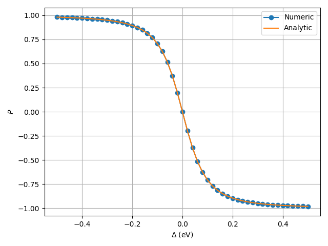
The Python code used to produce this figure is shown below. We can observe that whenever \(\Delta>0\), the QCA cell favors state "0"; but, when \(\Delta<1\), the QCA cell favors state "1". This makes sense because \(\Delta\) is the energy difference between states 1 and 0 for the cell (see Equation \eqref{org579cbed}. The cell prefers the lower-energy configuration.
import numpy as np
import matplotlib.pyplot as plt
import os # for creating path names
# Constants
sx = np.matrix([[0, 1], [1, 0]])
sz = np.matrix([[-1, 0], [0, 1]]) # quantum mechanics convention
# Parameters
g = 0.05 # [eV] tunneling energy
nD = 51; # number of Delta values
Delta = np.linspace(-0.5, 0.5, nD) # [eV] bias (Delta) values)
# Helper function
def expectation_val(Op, state):
"""
This is a helper function to easily calculate the expectation
value of an operator given a state.
"""
return (np.asmatrix(state).H @ Op @ state)[0,0].real
P = np.zeros((nD,))
P_analytic = np.zeros((nD,))
for idx, D in enumerate(Delta):
# print(idx)
# print(D)
# Hamiltonian
H = -g*sx + 0.5*D*sz
# eigh gets the eigenvalues and eigenvectors
En, phi = np.linalg.eigh(H) # take the lowest value [ground state]
phi_gs = phi[:,0] # this is a (2,) vector
phi_gs = phi_gs.reshape(-1,1) # convert to column vector, i.e., (2,1)
P[idx] = expectation_val(sz, phi_gs)
a = (D + np.sqrt(D**2 + 4*g**2))/(2*g);
psi_0_analytic = 1/np.sqrt(a**2+1)* np.matrix([[a], [1]]);
# Manual calculation
P_analytic[idx] = expectation_val(sz, psi_0_analytic)
E_gs = En[0]
# The FOR loop is over now because we
# dedented everything
fig, ax = plt.subplots()
plt.plot(Delta, P, marker='o', label='Numeric')
plt.plot(Delta, P, label='Analytic')
plt.grid(True)
plt.xlabel('$\Delta$ (eV)')
plt.ylabel('$P$')
plt.legend()
fig.tight_layout()
# os.path.join is a cross-platform way to
# make path names
fname = os.path.join('img', 'DrivenCellPython.png')
plt.savefig(fname)
print(f'Saved plot as {fname}.')
import numpy as np
import matplotlib.pyplot as plt
import os # for creating path names
# Constants
sx = np.matrix([[0, 1], [1, 0]])
sz = np.matrix([[-1, 0], [0, 1]]) # quantum mechanics convention
# Parameters
g = 0.05 # [eV] tunneling energy
nD = 51; # number of Delta values
Delta = np.linspace(-0.5, 0.5, nD) # [eV] bias (Delta) values)
# Helper function
def expectation_val(Op, state):
"""
This is a helper function to easily calculate the expectation
value of an operator given a state.
"""
return (np.asmatrix(state).H @ Op @ state)[0,0].real
P = np.zeros((nD,))
P_analytic = np.zeros((nD,))
for idx, D in enumerate(Delta):
# print(idx)
# print(D)
# Hamiltonian
H = -g*sx + 0.5*D*sz
# eigh gets the eigenvalues and eigenvectors
En, phi = np.linalg.eigh(H) # take the lowest value [ground state]
phi_gs = phi[:,0] # this is a (2,) vector
phi_gs = phi_gs.reshape(-1,1) # convert to column vector, i.e., (2,1)
P[idx] = expectation_val(sz, phi_gs)
a = (D + np.sqrt(D**2 + 4*g**2))/(2*g);
psi_0_analytic = 1/np.sqrt(a**2+1)* np.matrix([[a], [1]]);
# Manual calculation
P_analytic[idx] = expectation_val(sz, psi_0_analytic)
E_gs = En[0]
# The FOR loop is over now because we
# dedented everything
fig, ax = plt.subplots()
plt.plot(Delta, P, marker='o', label='Numeric')
plt.plot(Delta, P, label='Analytic')
plt.grid(True)
plt.xlabel('$\Delta$ (eV)')
plt.ylabel('$P$')
plt.legend()
fig.tight_layout()
# os.path.join is a cross-platform way to
# make path names
fname = os.path.join('img', 'DrivenCellPython.png')
plt.savefig(fname)
print(f'Saved plot as {fname}.')
Saved plot as img/DrivenCellPython.png. Saved plot as img/DrivenCellPython.png.
- The above exercise is important in QCA, because we often want to solve for the ground state.
- We assume that the circuit's ground state encodes the solution to a
QCA calculation
- In order to find the ground state from some excited state, the
circuit must lose energy to its environment
- This is called relaxation or energy dissipation
- In order to find the ground state from some excited state, the
circuit must lose energy to its environment
- As we begin our quantum journey, we need not (yet) worry about how the system relaxes to the ground state
- Rather, we will focus on calculating the ground state of a device or a circuit
Exercise 3.13 Repeat Exercise 3.12, but this time, perform the calculation using simulated D-Wave hardware.
Show/hide solution...
TODO. This solution hasn't been developed yet. We need some help to do it! This is low-priority at the moment, since we are mostly interested right now in developing variational quantum algorithm (VQE) calculations. For now, it is important for the readers to understand the basics of quantum mechanics and quantum information processing.
Exercise 3.14 In Exercises 3.12 and 3.14, we calculated the ground state of an isolated QCA cell, setting \(\Delta\) to a particular value each calculation. But, what determines the bias \(\Delta\) between the two dots? Several things could, such as an external electric field, or a nearby driver molecule. Let's focus on a driver molecule and treat it as a classical system that determines \(\Delta\) for a target cell through Coulomb repulsion. In this exercise, calculate \(\Delta\) for the target molecule as a function of driver polarization, \(P_{drv}\), assuming the driver molecule placed a distance \(a\) away from the target molecule can have any polarization \(-1\leq P_{drv}\leq1\). Also assume that each dot has a fixed (immobile) neutralizing charge of \(+q_{e}/2\) residing on each dot, where \(q_{e}\) is the fundamental charge, and the charge of an electron is \(-q_{e}\).
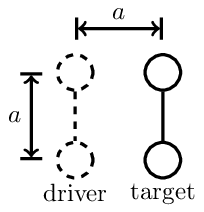
Figure 9: A neighboring driver molecule provides the classical bias, \(\Delta\). Fixed neutralizing charge of \(+q_{e}/2\) resides at each dot so that with one mobile electron, each molecular cell is charge neutral.
Show/hide solution...
The graphic from our solution is shown in Figure , computed using the
code of Listing . The QCA cell insets were plotted using the
The linear combination of fields for each state \(\alpha\) is weighted
by the probability \(p_{drv}\left(\alpha\right)\). The rules of
probability dictate that
\(p_{drv}\left(0\right)+p_{drv}\left(1\right)=1\), so we can eliminate,
say, \(p_{drv}\left(1\right)\) and write
Recall that the potential energy between two charges \(q_{1}\) and
\(q_{2}\) is given by
where \(\mathbf{r}_{1}\) and \(\mathbf{r}_{2}\) are the position of
\(q_{1}\) and \(q_{2}\), respectively, and the field from charge 1 at
some arbitrary point is
Now, let \(\mathbf{r}_{0}\) and \(\mathbf{r}_{1}\) be the positions of
driver dots 0 and 1, and \(\mathbf{r}\) be an arbitrary position. We can
calculate the field at \(\mathbf{r}\) due to the driver in the
mean-field approximation:
Here, we have negative signs because we're assuming we
have a mobile driver electron of charge \(-q_{e}\). In this mean-field
approximation, we can treat \(-p_{drv}\left(0\right)q_{e}\) and
\(-p_{drv}\left(1\right)q_{e}\) as effective fractional electrons
residing on dots 0 and 1. In fact, we can write these as a function of
the driver polarization. It can be shown that
Now, we can write an effective mobile charge on each dot:
Next, we calculate the electrostatic potential \(U_{0}\) of an electron
on dot 0 of the target cell. The potential contribution
\(U_{0,\text{fnc}}\) from the two neutralizing charges of the driver
cell are
We must also calculate the electrostatic potential energy
\(U_{0,\text{mc}}\) for the electron on dot 0 of the target cell due to
the mobile charge on both dots of the driver cell:
Thus, we can now write the \(\braket{0|\hat{H}|0}\) term of the
Hamiltonian:
We can repeat this analysis for
\(\braket{1|\hat{H}|1}=U_{1,\text{fnc}}+U_{1,\text{mc}}\). It can be
shown that the potential energy on target cell dot 1 due to the fixed
neutralizing charge is the same as the potential energy of the electron
on dot zero:
Next, we calculate the potential
energy \(U_{1,\text{mc}}\) of the target cell electron to be on dot 1 of
the target cell due to the mobile charge of the driver:
Thus, if we want to calculate \(\Delta,\)we have
where
Notice that everything in \(\kappa\) is a physical or mathematical
constant, save \(a\). Thus, \(a\) determines the value of \(\kappa\). We
can now calculate \(\Delta\) and target cell polarization, \(P\), as a
function of \(P_{\text{drv}}\), which we write only in terms of
geometric and physical constants:
Figure 10: Target cell polarization is plotted as a function of driver cell polarization, \(P_{\text{drv}}\). The driver is shown with a blue mobile charge, and the target cell is shown with a red mobile charge.drawDQD()
function of Listing . We already know that \(P_{drv}=1\) means that the
mobile electron occupies dot 1 for the driver, and that \(P_{drv}=-1\)
means that the electron occupies dot 0 for the driver. What does a
polarization \(-1
import os, sys
import numpy as np
import matplotlib.pyplot as plt
from qcapackage.qca.fourdotcell import FourDotCell as fdc
from qcapackage.qca.qcacircuit import QCACircuit as qckt
from qcapackage import constants as const
from qcapackage.quantum import linearalgebra as la
from qcapackage.quantum import computing as qc
from qcapackage.quantum import visualization as viz
# Constants
# Pauli matrices
# Note: Sz is in the quantum computing convention
Sx, Sy, Sz = qc.Sx, qc.Sy, qc.Sz
I = Sz@Sz
qe = const.qe # [C] fundamental charge
eps0 = const.eps0 # [F/m] = [C/V*m]
ket0, ket1 = qc.ket0, qc.ket1
ketMinus = (1/np.sqrt(2)) * (ket0 - ket1)
a = 1E-9 # [m] cell characteristic length
# I took out a factor of qe so that we end up
# with units of eV
kappa = qe /(4* np.pi* eps0 *a)*(1 -1/np.sqrt(2)) # [eV]
# Parameters
g = 0.05 # [eV] tunneling energy
D = kappa*1
nPd = 35
Pdrv = np.linspace(-1, 1, nPd)
Ptgt = np.zeros((nPd,))
for iPd, Pd in enumerate(Pdrv):
D = Pd * kappa
# Reference calculation - diagonalization
H = -g*Sx - 0.5*D*Sz
E0, psi0_ref = la.ground_state(H)
Ptgt[iPd] = la.expectation_value( -Sz, psi0_ref )
# Upper left inset
Pd, Pt = -1, 1
ins_ul_name = os.path.join('img', f'inset_driven_dqd_{Pd}_{Pt}.png')
viz.draw_driven_dqd( [Pd, Pt], ins_ul_name )
# Lower right inset
Pd, Pt = 1, -1
ins_lr_name = os.path.join('img', f'inset_driven_dqd_{Pd}_{Pt}.png')
viz.draw_driven_dqd( [Pd, Pt], ins_lr_name )
plt.close('all')
fig, ax = plt.subplots()
ax.plot(Pdrv.flatten(), Ptgt, marker='o')
ax.set_xlim(-1, 1)
# Add inset images
inset_w, inset_h = 0.25, 0.25
inset_ul = viz.add_inset_image( ax, \
[0.05, 0.625, inset_w, inset_h],
ins_ul_name )
inset_lr = viz.add_inset_image( ax, \
[0.7, 0.125, inset_w, inset_h],
ins_lr_name )
ax.grid(True)
ax.set_xlabel(r'$P_{drv}$', fontsize=20, fontname='Times')
ax.set_ylabel(r'$P_{tgt}$', fontsize=20, fontname='Times')
plt.tight_layout()
fname = os.path.join( 'img', 'cell-cell-response-annotated_py.png')
plt.savefig( fname )
plt.close('all')
Exercise 3.15 Determine the cost of a bit flip, given a fully-polarized driver.
Show/hide solution...
Suppose that \(P_{\text{drv}}=1\). Then, Equation \eqref{orgc1b41cb} gives us
\begin{equation} \Delta\left(1\right)=\left(1-\frac{1}{\sqrt{2}}\right)\frac{q_{e}^{2}}{4\pi\varepsilon_{0}a}\left(1\right). \end{equation}
Because all the physical parameters and geometric constants are positive
and \(1-1/\sqrt{2}>0\), it must be that \(\Delta>0\). What does this
mean? Recall that \(\Delta\) is the potential energy by which
\(\ket{1}\) is higher than \(\ket{0}\). This indicates to us that state
\(\ket{0}\) is the preferred state for the target cell is if
\(P_{\text{drv}}=1\), and state 1 is \(\Delta\) higher than state
\(\ket{0}\). In other words, \(\Delta\) is the amount of energy which
must be added to the system to force the target cell to take state
\(\ket{1}\).
On the other hand, if \(P_{\text{drv}}=-1\), Equation
\eqref{orgc1b41cb} gives us
This means that \(\ket{0}\) is energetically higher than \(\ket{1}\) by \(\Delta\left(-1\right)\) when \(P_{\text{drv}}=-1\). We must still excite the target cell by \(\Delta\) in order to make it occupy the state \(\ket{0}\) under these circumstances. In either case, the energy required to flip the target cell is the same, and we can interpret it as the cost of a bit flip. This is an important energy in the study of QCA, and we call it the kink energy,
\begin{equation} \label{orgc65d947} E_{k}=\left(1-\frac{1}{\sqrt{2}}\right)\frac{q_{e}^{2}}{4\pi\varepsilon_{0}a}. \end{equation}We see here that two-dot QCA cells in the configuration of the driver-target system prefer to anti-align. If we were to make two adjacent cells align, this is called a kink, hence the term kink energy. For a cell with \(a=1\;\text{nm}\), we calculate \(E_{k}=421\;\text{meV}.\)
3.6. Quantum Information Processing
- We've considered some operators now, from different contexts
- the Hamiltonian, \(\mathcal{H}\), describes the physics of the system
- other operators, such as \(\mathbf{X}\), \(\mathbf{Y}\), \(\mathbf{Z}\), and \(\mathbf{H}\) transform a qubit and may be thought of as gates for process quantum information
- We now focus on quantum information and a way to visualize transformations of a qubit
- To do this, we introduce the density operator and the Bloch vector
- The Density Operator
For a given state
\begin{equation} \ket{\psi}\leftrightarrow\begin{bmatrix}c_{0}\\ c_{1} \end{bmatrix}, \end{equation}we can form the operator
\begin{equation} \label{org148a00d} \hat{\rho}=\ket{\psi}\bra{\psi}=\begin{bmatrix}c_{0}\\ c_{1} \end{bmatrix}\left[\begin{array}{cc} c_{0}^{\ast} & c_{1}^{\ast}\end{array}\right]=\begin{bmatrix}c_{0}c_{0}^{\ast} & c_{0}c_{1}^{\ast}\\ c_{1}c_{0}^{\ast} & c_{1}c_{1}^{\ast} \end{bmatrix} \end{equation}- \(\hat{\rho}\) is called a density operator or a density matrix
- Expectation values may be calculated from density matrices
For an operator \(\mathbf{O}\), the expectation value \(\Braket{\mathbf{O}}\) is given by
\begin{equation} \label{org21cc8e1} \Braket{\mathbf{O}}=\text{Tr}\;\left(\mathbf{O}\hat{\rho}\right)=\text{Tr}\;\left(\hat{\rho}\mathbf{O}\right)=\sum_{j}\Braket{j|\mathbf{O}\hat{\rho}|j}=\sum_{j}\Braket{j|\hat{\rho}\mathbf{O}|j} \end{equation}- This expression is completely equivalent to the expectation value of Equation \eqref{orge3dbd25}
A property that sometimes comes in useful for the trace is that we can cyclically permute the operators in a trace and still get the same value:
\begin{equation} \label{org4875196} \text{Tr}\;\left(\mathbf{A}\mathbf{B}\mathbf{C}\right)=\text{Tr}\;\left(\mathbf{C}\mathbf{A}\mathbf{B}\right)=\text{Tr}\;\left(\mathbf{B}\mathbf{C}\mathbf{A}\right) \end{equation}- We can do this as long as we move a single operator at a time from one end of the product to the other
For a product of two operators, Equation \eqref{org4875196} reduces to
\begin{equation} \label{org78a6883} \text{Tr}\;\left(\mathbf{A}\mathbf{B}\right)=\text{Tr}\;\left(\mathbf{B}\mathbf{A}\right) \end{equation}
Exercise 3.17 Write a Python function that converts a ket to a density operator.
Show/hide solution...
The solution code is given below:
import numpy as np # Constants I = np.eye(2) X = np.array([[0, 1], [1, 0]]) Z = np.array([[1, 0], [0, -1]]) # quantum information convention Y = -1j*Z@X H = (1/np.sqrt(2))*(X+Z) ket0 = np.array([[1],[0]]) ket1 = X @ ket0 def densityOperator( psi: np.ndarray ) -> np.matrix: '''Transform a ket to a density operator (matrix). Args: psi: an numpy.ndarray representing a ket. For a single qubit, this will be a 2-by-1 column vector. Returns: The density operator corresponding to psi. ''' # @ is used for matrix multiplication # convert an numpy ndarray to a matrix # for access to the Hermitian adjoint return psi @ np.asmatrix(psi).H # use the function with some test cases rho0 = densityOperator( ket0 ) rho1 = densityOperator( ket1 ) rho_plus = densityOperator( H @ ket0 ) rho_minus = densityOperator( H @ ket1 ) print('\nDensity operator for ket 0 (type: {0}):\n{1}'.format( type(rho0), rho0) ) print('\nDensity operator for ket 0 (type: {0}):\n{1}'.format( type(rho1), rho1) ) print('\nDensity operator for ket + (type: {0}):\n{1}'.format( type(rho_plus), rho_plus) ) print('\nDensity operator for ket + (type: {0}):\n{1}'.format( type(rho_minus), rho_minus) ) plt.close('all')- Density operators have special properties. It can be shown that:
they have unit trace:
\begin{equation} \mbox{Tr}\,\hat{\rho}=c_{0}c_{0}^{\ast}+c_{1}c_{1}^{\ast}=1 \end{equation}they are Hermitian:
\begin{equation} \hat{\rho}=\hat{\rho}^{\dagger} \end{equation}or, \(\rho_{ij}=\rho_{ji}^{\ast}\)
We can expand any single-qubit density operator over the matrices \(\{\mathbf{1},\hat{\sigma}_{x},\hat{\sigma}_{y},\hat{\sigma}_{z}\}\):
\begin{equation} \label{org9c21364} \hat{\rho}=\frac{1}{2}\left(a_{0}\mathbf{1}+a_{x}\hat{\sigma}_{x}+a_{y}\hat{\sigma}_{y}+a_{z}\hat{\sigma}_{z}\right) \end{equation}with real coefficients \(\{a_{0},a_{1},a_{2},a_{3}\}\)
For a simpler notation, we will define
\begin{equation} \label{org745d72a} \hat{\sigma}_{0}=\mathbf{1},\quad\hat{\sigma}_{1}=\hat{\sigma}_{x},\quad\hat{\sigma}_{2}=\hat{\sigma}_{y},\quad\mbox{and}\quad\hat{\sigma}_{3}=\hat{\sigma}_{z}, \end{equation}and we rewrite our expansion as
\begin{equation} \label{org1950c18} \hat{\rho}=\sum_{k=0}^{3}\frac{1}{2}a_{k}\hat{\sigma}_{k} \end{equation}We can we can calculate the expansion coefficients \(\{a_{k}\}\) as follows:
\begin{equation} \label{org57112bd} a_{k}=\mbox{Tr}\;\left(\hat{\rho}\hat{\sigma}_{k}\right)\stackrel{\left(\ref{eq:ExpectationValueDensityMatrix}\right)}{=}\Braket{\hat{\sigma}_{k}} \end{equation}- For any normalized \(\ket{\psi}\), \(a_{0}=1\), so this doesn't tell us much information.
- On the other hand, \((a_{1},a_{2},a_{3})\) are more informative
- They will all have a value in the range \(-1\leq a_{k}\leq1\)
- We can visualize the quantum state in 3D if we define the Bloch vector, \(\vec{\lambda}\), as a vector in real space (\(\mathbb{R}^{3}\))
- To form a Bloch vector, we discard \(a_{0}\) and make a 3D vector using \(a_{1}\), \(a_{2}\), and \(a_{3}\)
Thus, in this example, our Bloch vector is
\begin{equation} \label{orgcea4f64} \vec{\lambda}\equiv\begin{bmatrix}a_{1}\\ a_{2}\\ a_{3} \end{bmatrix}. \end{equation}
The Bloch vector components also may be calculated in state vector formalism as
\begin{equation} \label{orgd4ce6a5} a_{k}=\braket{\hat{\sigma}_{k}}=\braket{\psi|\hat{\sigma}_{k}|\psi} \end{equation}
Exercise 3.18 Write a Python functions to do the following:
- Convert a ket to a density operator
- Convert a ket to a Bloch vector See Equation \eqref{org148a00d}. Do your work in Python.
Show/hide solution...
The solution code is given below:
import numpy as np # Constants I = np.eye(2) X = np.array([[0, 1], [1, 0]]) Z = np.array([[1, 0], [0, -1]]) # quantum information convention Y = -1j*Z@X H = (1/np.sqrt(2))*(X+Z) sigma = (I, X, Y, Z) ket0 = np.array([[1],[0]]) ket1 = X @ ket0 def densityOperator( psi: np.ndarray ) -> np.matrix: '''Transform a ket to a density operator (matrix). Args: psi: an numpy.ndarray representing a ket. For a single qubit, this will be a 2-by-1 column vector. Returns: The density operator corresponding to psi. ''' # @ is used for matrix multiplication # convert an numpy ndarray to a matrix # for access to the Hermitian adjoint return psi @ np.asmatrix(psi).H def BlochVector( psi: np.ndarray ) -> np.ndarray: '''Transform ket psi to a Bloch vector. Args: psi: an numpy.ndarray representing a ket for a single qubit. This will be a 2-by-1 column vector. Returns: The Bloch vector as a (3,) numpy array. ''' rho = densityOperator( psi ) BV = [np.trace(rho @ sig).real for sig in sigma[1:]] return np.array(BV) # use the function with some test cases BV0 = BlochVector( ket0 ) BV1 = BlochVector( ket1 ) BVplus = BlochVector( H @ ket0 ) BVminus = BlochVector( H @ ket1 ) print( f'Bloch vector for ket 0: ' + str(BV0) ) print( f'Bloch vector for ket 1: ' + str(BV1) ) print( f'Bloch vector for ket +: ' + str(BVplus) ) print( f'Bloch vector for ket -: ' + str(BVminus) )Exercise 3.19 Visualize the Bloch vector for the following states: \(\ket{0}\), \(\ket{1}\), \(\ket{+}\), and \(\ket{-}\). See Equation \eqref{org148a00d} and \eqref{org57112bd}.
Show/hide solution...
We'll do this in two steps. First, we'll make a file that contains our helper functions (the ones we wrote in the previous exercise). Then, we'll import and use those functions, saving the Bloch vector plots in files. The code is shown below, and the Bloch vectors are plotted in Figure .
Note: We're saving our functions in a file, and then in different Python scripts, we're importing these functions from QuantumInformationTools.py. If this were a Jupyter notebook, we could just define our functions within the notebook and use them after that. No need to tangle or import. Test.import numpy as np # Constants I = np.eye(2) X = np.array([[0, 1], [1, 0]]) Z = np.array([[1, 0], [0, -1]]) # quantum information convention Y = -1j*Z@X H = (1/np.sqrt(2))*(X+Z) sigma = (I, X, Y, Z) def densityOperator( psi: np.ndarray ) -> np.matrix: '''Transform a ket to a density operator (matrix). Args: psi: an numpy.ndarray representing a ket. For a single qubit, this will be a 2-by-1 column vector. Returns: The density operator corresponding to psi. ''' # @ is used for matrix multiplication # convert an numpy ndarray to a matrix # for access to the Hermitian adjoint return psi @ np.asmatrix(psi).H def BlochVector( psi: np.ndarray ) -> np.ndarray: '''Transform ket psi to a Bloch vector. Args: psi: an numpy.ndarray representing a ket for a single qubit. This will be a 2-by-1 column vector. Returns: The Bloch vector as a (3,) numpy array. ''' rho = densityOperator( psi ) BV = [np.trace(rho @ sig).real for sig in sigma[1:]] return np.array(BV)Next, we'll complete the task using our functions:
import os, sys import numpy as np import matplotlib.pyplot as plt # Add path to QuantumInfoTools cwd = os.getcwd() pydir = os.path.join(cwd, 'python') sys.path.append(pydir) from qiskit.visualization import plot_bloch_vector import QuantumInfoTools as qit # Constants I = np.eye(2) X = np.array([[0, 1], [1, 0]]) Z = np.array([[1, 0], [0, -1]]) Y = -1j*Z@X H = (1/np.sqrt(2))*(X+Z) sigma = (I, X, Y, Z) ket0 = np.array([[1],[0]]) ket1 = X @ ket0 BV0 = qit.BlochVector( ket0 ) BV1 = qit.BlochVector( ket1 ) BVplus = qit.BlochVector( H @ ket0 ) BVminus = qit.BlochVector( H @ ket1 ) print( f'Bloch vector for ket 0: ' + str(BV0) ) print( f'Bloch vector for ket 1: ' + str(BV1) ) print( f'Bloch vector for ket +: ' + str(BVplus) ) print( f'Bloch vector for ket -: ' + str(BVminus) ) BVs = {'BV0': BV0, 'BV1': BV1, 'BVplus': BVplus, 'BVminus': BVminus} for BV in BVs: fig = plt.figure() ax = fig.add_subplot(111,projection = '3d') fname=os.path.join('img', BV) plot_bloch_vector( BVs[BV]) plt.savefig(fname) plt.close('all') print('Test is over.')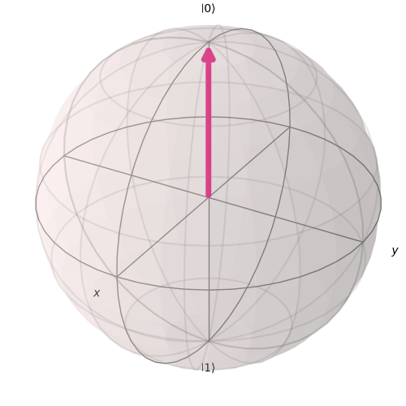
Figure 11: The Bloch vector for \(\ket{0}\).

Figure 12: The Bloch vector for \(\ket{1}\).

Figure 13: The Bloch vector for \(\ket{+}\).

Figure 14: The Bloch vector for \(\ket{-}\).
- It may not be obvious, but we can think of an application of
\(\mathbf{X}\) as a 180-degree rotation about the \(\hat{x}\) axis in
the Bloch sphere.
We can make an arbitrary rotation through angle \(\theta_{x}\) about \(\hat{x}\) by forming the \(x\)-rotation operator from an exponential of \(\mathbf{X}\):
\begin{equation} \label{org117986b} \mathbf{R}_{x}\left(\theta_{x}\right)=\exp\left(-i\frac{\theta_{x}}{2}\mathbf{X}\right)=\begin{bmatrix}\cos\left(\theta_{x}/2\right) & -i\sin\left(\theta_{x}/2\right)\\ -i\sin\left(\theta_{x}/2\right) & \cos\left(\theta_{x}/2\right) \end{bmatrix}. \end{equation}- We add a function for an arbitrary rotation \(\theta_{x}\) about
\(\hat{x}\) to our file
- Similarly, an application of \(\mathbf{Z}\) is a 180-degree rotation
about the \(\hat{z}\) axis in the Bloch sphere, and
- We can form an application of \(\mathbf{Y}\) is a 180-degree rotation about the \(\hat{y}\) axis in the Bloch sphere
Exercise 3.20 Perform and rotations of \(\ket{0}\) about the \(\hat{x}\) axis through the angles \(\pi/4\), \(\pi/2\), \(3\pi/4\), \(\pi\), \(5\pi/4\), and \(3\pi/2\). See Equation \eqref{org148a00d}, \eqref{org57112bd}, \eqref{org117986b}.
Show/hide solution...
We'll do this in two steps. First, we'll make a file that contains our helper functions (the ones we wrote in the previous exercise). Then, we'll import and use those functions, saving the Bloch vector plots in files. The code is shown below, and the Bloch vectors are plotted in Figure
import numpy as np from scipy.linalg import expm # Constants I = np.eye(2) X = np.array([[0, 1], [1, 0]]) Z = np.array([[1, 0], [0, -1]]) # quantum information convention Y = -1j*Z@X H = (1/np.sqrt(2))*(X+Z) sigma = (I, X, Y, Z) def densityOperator( psi: np.ndarray ) -> np.matrix: '''Transform a ket to a density operator (matrix). Args: psi: an numpy.ndarray representing a ket. For a single qubit, this will be a 2-by-1 column vector. Returns: The density operator corresponding to psi. ''' # @ is used for matrix multiplication # convert an numpy ndarray to a matrix # for access to the Hermitian adjoint return psi @ np.asmatrix(psi).H def BlochVector( psi: np.ndarray ) -> np.ndarray: '''Transform ket psi to a Bloch vector. Args: psi: an numpy.ndarray representing a ket for a single qubit. This will be a 2-by-1 column vector. Returns: The Bloch vector as a (3,) numpy array. ''' rho = densityOperator( psi ) # Refer to Equation 54 BV = [np.trace(rho @ sig).real for sig in sigma[1:]] return np.array(BV) def Rx(theta: float) -> np.ndarray: '''Creates a rotation operator through angle theta about the x axis. Args: theta: a rotation angle in radians about the x axis Returns: A rotation operator matrix ''' return expm(-1j*0.5*theta*X) def Ry(theta: float) -> np.ndarray: '''Creates a rotation operator through angle theta about the y axis. Args: theta: a rotation angle in radians about the y axis Returns: A rotation operator matrix ''' return expm(-1j*0.5*theta*Y) def Rz(theta: float) -> np.ndarray: '''Creates a rotation operator through angle theta about the z axis. Args: theta: a rotation angle in radians about the z axis Returns: A rotation operator matrix ''' return expm(-1j*0.5*theta*Z) def normalize( psi: np.ndarray ) -> np.ndarray: '''Normalizes a quantum wave function. This is designed for use with complex column vectors. Args: psi: a quantum wave function specified as a d-dimensional (d,1) np.ndarray. Returns: a normalized version of psi ''' psi_norm_sq = np.asmatrix(psi).H @ psi # Refer to Equation 8 return (1/np.sqrt(psi_norm_sq[0,0])) * psi def direction( x: np.ndarray ) -> np.ndarray: '''Returns a unit vector pointing in the direction of a d-dimensional real-space vector x. Args: x: a d-dimensional [i.e., (d,)] vector Returns: a unit vector pointing in the direction of x. ''' return (1/np.sqrt(np.dot(x,x)))*x def labelPoint( ax, vec, label ): '''Helps us label a matplotlib axes on which a qiskit Bloch sphere plot exists. Args: ax: the axes containing the plot vec: the (3,) coordinates for the position of the label label: A string to define the label Returns: None ''' # We have to interchange the x and y # coordinates and negate the # x coordinate to get this right. ax.text( vec[1], -vec[0], vec[2], label )Now, we use our functions to make various rotations about \(\hat{x}\):
import os, sys import numpy as np import matplotlib.pyplot as plt # Add path to QuantumInfoTools cwd = os.getcwd() pydir = os.path.join(cwd, 'python') sys.path.append(pydir) from qiskit.visualization import plot_bloch_vector import QuantumInfoTools as qit from QuantumInfoTools import I, H, X, Y, Z, sigma ket0 = np.array([[1],[0]]) ket1 = X @ ket0 ang = np.pi*np.array([0, 0.25, 0.5, 0.75, 1, 1.25, 1.5]) kets = [ qit.Rx(th)@ket0 for th in ang] vects = [ qit.BlochVector(ket) for ket in kets ] # make list of Bloch vectors # fig and ax help us decorate the Bloch sphere fig = plt.figure() ax = fig.add_subplot(111,projection = '3d') plot_bloch_vector( vects, ax=ax ) for idx, vect in enumerate(vects): qit.labelPoint( ax, vect, '{0:+4.2f} $\pi$'.format(ang[idx]/np.pi)) plt.savefig( os.path.join('img', 'RotateXvaried.png') ) plt.close('all')Now, we repeat this for rotations about \(\hat{z}\):
import os, sys import numpy as np import matplotlib.pyplot as plt # Add path to QuantumInfoTools cwd = os.getcwd() pydir = os.path.join(cwd, 'python') sys.path.append(pydir) from qiskit.visualization import plot_bloch_vector import QuantumInfoTools as qit import numpy as np from QuantumInfoTools import I, H, X, Y, Z, sigma ket0 = np.array([[1],[0]]) ket1 = X @ ket0 ang = np.pi*np.array([0, 0.25, 0.5, 0.75, 1, 1.25, 1.5]) kets = [ qit.Rz(th)@H@ket0 for th in ang] vects = [ qit.BlochVector(ket) for ket in kets ] # make list of Bloch vectors # fig and ax help us decorate the Bloch sphere, along with fig = plt.figure() ax = fig.add_subplot(111,projection = '3d') plot_bloch_vector( vects, ax=ax ) for idx, vect in enumerate(vects): qit.labelPoint( ax, vect, '{0:+4.2f} $\pi$'.format(ang[idx]/np.pi)) plt.savefig( os.path.join('img', 'RotateZvaried.png') ) plt.close('all')Rotations about \(\hat{x}\) are shown in Figure
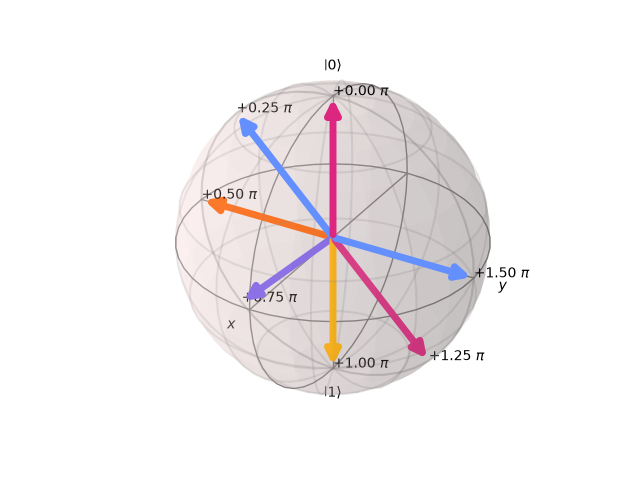
Figure 15: Various rotations about \(\hat{x}\).
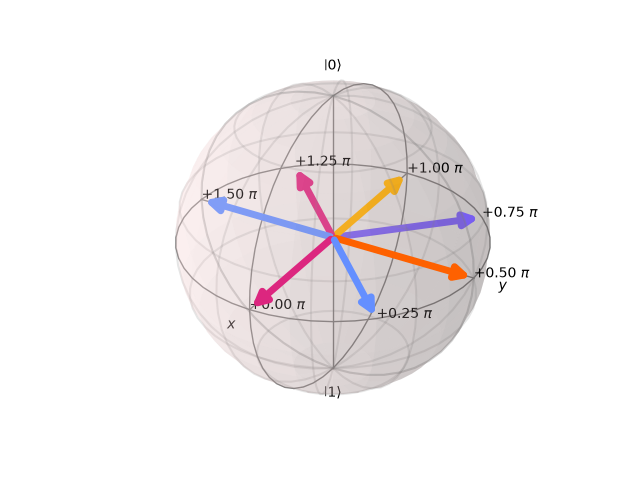
Figure 16: Various rotations about \(\hat{z}\).
- Now we've learned to think about single-qubit transformations as rotations about axes in the Bloch sphere
Any single-qubit rotation can be expressed as a combination of rotation operations. Some examples:
\begin{equation} \mathbf{X}=\mathbf{R}_{x}\left(\pm\pi\right),\qquad\mathbf{Y}=\mathbf{R}_{y}\left(\pm\pi\right),\text{\ensuremath{\qquad}and}\qquad\mathbf{Z}=\mathbf{R}_{z}\left(\pm\pi\right) \end{equation}- We also can make arbitrary rotations about arbitrary axes
Define the arbitrary axis
\begin{equation} \hat{\mathbf{n}}=(n_{x},n_{y},n_{z})=n_{x}\mathbf{i}+n_{y}\mathbf{j}+n_{z}\mathbf{k} \end{equation}Then, a rotation about \(\hat{\mathbf{n}}\) is given by
\begin{equation} \label{org05d4fcf} \mathbf{R}(\hat{\mathbf{n}},\theta)=\exp\left(-i\frac{\theta}{2}\hat{\mathbf{n}}\cdot\vec{\sigma}\right), \end{equation}where
\begin{equation} \label{orgc18f740} \vec{\sigma}=\hat{\sigma}_{x}\mathbf{i}+\hat{\sigma}_{y}\mathbf{j}+\hat{\sigma}_{z}\mathbf{k} \end{equation}is a vector of Pauli operators, and
\begin{equation} \label{org52e7710} \hat{\mathbf{n}}\cdot\vec{\sigma}=n_{x}\hat{\sigma}_{x}+n_{y}\hat{\sigma}_{y}+n_{z}\hat{\sigma}_{z} \end{equation}is a single-qubit operator.
Exercise 3.22 Find \(\hat{\mathbf{n}}\) to perform rotations about the following axes:
The \(\hat{x}\) axis.
Show/hide solution...
\\If
\begin{equation} \hat{\mathbf{n}}=\left(1,0,0\right), \end{equation}then Equation \eqref{org52e7710} becomes
\begin{equation} \hat{\mathbf{n}}\cdot\vec{\sigma}=\hat{\sigma}_{x}, \end{equation}and our rotation becomes
\begin{equation} \mathbf{R}(\hat{\mathbf{n}},\theta)=\exp\left(-i\frac{\theta}{2}\hat{\sigma}_{x}\right)=\exp\left(-i\frac{\theta}{2}\mathbf{X}\right). \end{equation}Notice that this is equivalent to the arbitrary rotation through \(\theta_{x}\) about \(\hat{x}\) from Equation \eqref{org117986b}.
The \(\hat{y}\) axis.
Show/hide solution...
\\If
\begin{equation} \hat{\mathbf{n}}=\left(0,1,0\right), \end{equation}then Equation \eqref{org52e7710} becomes
\begin{equation} \hat{\mathbf{n}}\cdot\vec{\sigma}=\hat{\sigma}_{y}, \end{equation}and our rotation becomes
\begin{equation} \mathbf{R}(\hat{\mathbf{n}},\theta)=\exp\left(-i\frac{\theta}{2}\hat{\sigma}_{y}\right)=\exp\left(-i\frac{\theta}{2}\mathbf{Y}\right). \end{equation}This is equivalent to the arbitrary rotation through \(\theta_{y}\) about \(\hat{y}\).
The \(\hat{z}\) axis.
Show/hide solution...
\\If
\begin{equation} \hat{\mathbf{n}}=\left(0,0,1\right), \end{equation}then Equation \eqref{org52e7710} becomes
\begin{equation} {\normalcolor }\hat{\mathbf{n}}\cdot\vec{\sigma}=\hat{\sigma}_{z}, \end{equation}and our rotation becomes
\begin{equation} \mathbf{R}(\hat{\mathbf{n}},\theta)=\exp\left(-i\frac{\theta}{2}\hat{\sigma}_{z}\right)=\exp\left(-i\frac{\theta}{2}\mathbf{Z}\right). \end{equation}This is equivalent to the arbitrary rotation through \(\theta_{z}\) about \(\hat{z}\).
3.7. Additional Resources
- If you prefer videos, I have the following YouTube tutorials.
3.7.1. QCA Part 1 - Overview of the QCA Concept
3.7.2. QCA Part 2 - Recent Research
It's a bit dated:
3.7.3. Quantum Mechanics
4. The Variational Quantum Eigensolver for a Single, Driven QCA Molecule
You've already experience the Schrödinger equation,
\begin{equation} \hat{H}\ket{\psi_{n}}=E_{n}\ket{\psi_{n}} \end{equation}- In QCA, we're often interested in the ground state, which is the lowest allowed energy of the quantum system
Classically, we find the ground state by diagonalizing the Hamiltonian and finding its lowest eigenenergy, \(E_{0}\):
\begin{equation} E_{0}=\Braket{\psi_{0}|\hat{H}|\psi_{0}} \end{equation}- This corresponds to the global minimum energy
- We call \(\ket{\psi_{0}}\) the ground state, since it has the lowest allowed energy, \(E_{0}\)
Exercise 4.1 Suppose we pick some \(\ket{\psi}\neq\ket{\psi_{0}}\). How will the energy \(E=\Braket{\psi|\hat{H}|\psi}\) compare to \(E_{0}\)?
Show/hide solution...
\(E\) must be greater than \(E_{0}\), since \(E_{0}\) is the lowest allowed energy of the system.
- When quantum systems get large, the problem size gets large. Consider
the following:
For a single QCA molecule, the state vector is a two-dimensional vector with a \(2\times2\) Hamiltonian:
\begin{equation} \ket{\psi}=\left[\begin{array}{c} c_{0}\\ c_{1} \end{array}\right],\qquad\hat{H}=\left[\begin{array}{cc} H_{00} & H_{01}\\ H_{10} & H_{11} \end{array}\right] \end{equation}- For two QCA molecules, the state vector is \(2^{2}=4\) dimensional, with a four-dimensional Hamiltonian
- For \(N\) QCA molecules, the state vector is \(2^{N}\) dimensional, with a \(2^{N}\times2^{N}\) Hamiltonian
- When the problem size becomes large, it may be advantageous to avoid
diagonalizing \(\hat{H}\)
- This is where the variational quantum eigensolver (VQE) algorithm comes into play
- The VQE algorithm uses three key steps:
- A parametric quantum circuit to transform \(\ket{0}\) to \(\ket{\psi}\)
Measurement is used to calculate system energy for a quantum system
\begin{equation} E=\Braket{\psi|\hat{H}|\psi} \end{equation}- If \(E>E_{0}\), then we haven't found the ground state energy
- Since, in a VQE problem, we may not know the ground state, we don't necessarily know whether \(E\) is the ground state or not
- If \(E>E_{0}\), then we haven't found the ground state energy
- We can try another wave function \(\ket{\psi^{\prime}}\), and
compare its energy \(E^{\prime}\) to \(E\)
- If \(E>E^{\prime}\) for some new energy \(E^{\prime}\), the we
know that \(E\) is not the ground state, since we found an
\(E^{\prime}
- We don't know whether \(E^{\prime}\) is the ground state or not, so we can check another energy \(\ket{\psi^{\prime\prime}}\) and its energy \(E^{\prime\prime}\)
- If \(E>E^{\prime}\) for some new energy \(E^{\prime}\), the we
know that \(E\) is not the ground state, since we found an
\(E^{\prime}
- A classical optimizer modifies the parametric quantum circuit to generate a new \(\ket{\psi}\)
- The procedure repeats until it finds a minimum \(\ket{\psi}\).
Exercise 4.2 A parametric quantum circuit. Consider the transformation of \(\ket{0}\) to state \(\ket{\psi}\):
\begin{equation} \label{orge13d89d} \ket{\psi}=\mathbf{R}_{z}\left(\theta_{z}\right)\mathbf{R}_{x}\left(\theta_{x}\right)\ket{0}. \end{equation}Find a combination of \(\theta_{x}\) and \(\theta_{z}\) so that \(\ket{\psi}=\ket{1}\).
Show/hide solution...
There aremultiple solutions, but \(\theta_{x}=\pi\) and \(\theta_{z}=0\) could be used. Here is some code to illustrate this:
import os, sys import numpy as np import matplotlib.pyplot as plt # Add path to QuantumInfoTools cwd = os.getcwd() pydir = os.path.join(cwd, 'python') sys.path.append(pydir) from qiskit.visualization import plot_bloch_vector import QuantumInfoTools as qit import numpy as np from QuantumInfoTools import I, H, X, Y, Z, sigma ket0 = np.array([[1],[0]]) ket1 = qit.Rx(np.pi) @ ket0 kets = [ ket0, ket1 ] # make a list of kets - for iteration vects = [ qit.BlochVector(ket) for ket in kets ] # make list of Bloch vectors labels = ['ket 0', 'ket 1'] # fig and ax help us decorate the Bloch sphere fig = plt.figure() ax = fig.add_subplot(111,projection = '3d') plot_bloch_vector( vects, ax=ax ) for idx, vect in enumerate(vects): qit.labelPoint( ax, vect, labels[idx] ) plt.savefig( os.path.join('img', 'ExerciseTransform0to1.png') ) plt.close('all')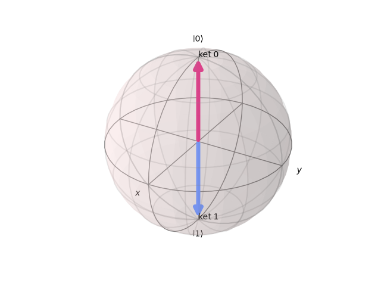
Figure 17: Transform \(\ket{0}\) to \(\ket{1}\) using \(\mathbf{R}_{z}\left(0\right)\mathbf{R}_{x}\left(\pi\right)\).
Find a combination of \(\theta_{x}\) and \(\theta_{z}\) so that \(\ket{\psi}=\ket{-}\).
Show/hide solution...
There aremultiple solutions, but \(\theta_{x}=\pi/2\) and \(\theta_{z}=3\pi/2\) could be used.
import os, sys import numpy as np import matplotlib.pyplot as plt # Add path to QuantumInfoTools cwd = os.getcwd() pydir = os.path.join(cwd, 'python') sys.path.append(pydir) from qiskit.visualization import plot_bloch_vector import QuantumInfoTools as qit import numpy as np from QuantumInfoTools import I, H, X, Y, Z, sigma ket0 = np.array([[1],[0]]) ketMinus = qit.Rz(3*np.pi/2) @ qit.Rx(np.pi/2) @ ket0 kets = [ ket0, ketMinus ] # make a list of kets - for iteration vects = [ qit.BlochVector(ket) for ket in kets ] # make list of Bloch vectors labels = ['ket 0', 'ket -'] # fig and ax help us decorate the Bloch sphere fig = plt.figure() ax = fig.add_subplot(111,projection = '3d') plot_bloch_vector( vects, ax=ax ) for idx, vect in enumerate(vects): qit.labelPoint( ax, vect, labels[idx] ) plt.savefig( os.path.join('img', 'ExerciseTransform0toMinus.png') ) plt.close('all')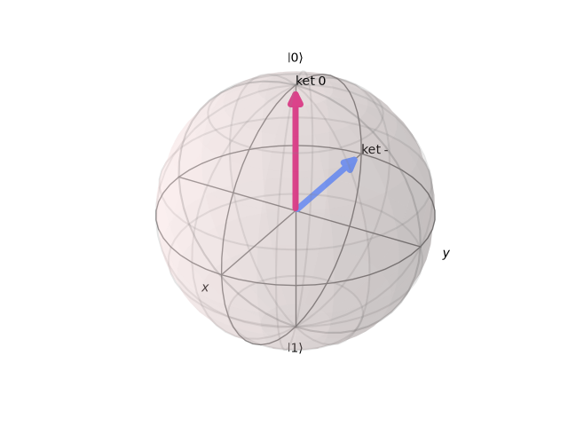
Figure 18: Transform \(\ket{0}\) to \(\ket{-}\) using \(\mathbf{R}_{z}\left(3\pi/2\right)\mathbf{R}_{x}\left(\pi/2\right)\).
- Hopefully, we now recognize that we can transform \(\ket{0}\) into any
quantum state \(\ket{\psi}\) using only
\(\mathbf{R}_{z}\left(\theta_{z}\right)\mathbf{R}_{x}\left(\theta_{x}\right)\)
- All the information about our arbitrary transformation \(\mathbf{R}_{z}\left(\theta_{z}\right)\mathbf{R}_{x}\left(\theta_{x}\right)\) is contained in the two parameters, \(\theta_{x}\) and \(\theta_{z}\)
- Thus, our circuit is called a parametric quantum circuit, since what it does depends on the parameters \(\theta_{x}\) and \(\theta_{z}\)
- For a more compact notation, we sometimes define a parameter vector, \(\vec{\theta}=\left(\theta_{x},\theta_{z}\right)\) andrefer to our parameters collectively as \(\vec{\theta}\)
- This is one part of the VQE process: a parametric circuit, called an
ansatz, transforms our standard quantum state, \(\ket{0}\), into
some other state, \(\ket{\psi}\), called a trial solution
We often use the symbol \(\mathbf{U}\left(\vec{\theta}\right)\) to reference our parametric quantum circuit, so that the process by which we transform \(\ket{0}\) to \(\ket{\psi}\) is shown in Figure 19
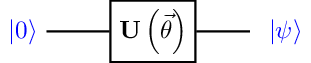
Figure 19: An ansatz circuit prepares a trial wave function, \(\ket{\psi}\).
4.1. Building Quantum Circuits in Qiskit
- Now, we will learn to build quantum circuits in Qiskit
- To replicate the following activities, you will need the following
Python packages:
- qiskit
- pylatexenc
- To replicate the following activities, you will need the following
Python packages:
- Our first circuit will be nothing more than a quantum wire
Example 4.1 Build a single quantum wire in qiskit.
Show/hide solution...
from qiskit import QuantumCircuit
# create a one-qubit circuit
qc = QuantumCircuit(1);
"""
Note 1: if you are using Jupyter Lab, you won't
need the option filename in qc.draw(). I use it
here because I want to save the image to put it
in my pdf.
"""
# visualize the quantum circuit
qc.draw(output='mpl',style='clifford',
filename='img/qiskit-quantum-wire.png')
"""
Note 2: in a Jupyter Lab notebook, qc.draw() and
many other visuzlization functions show their output
if they are the last line in a code cell. If not the
last line, you can force the visualization on your
Jupyter notebook by enclosing the visualization
command within the display command, i.e.,
display( qc.draw( ... ) )
"""
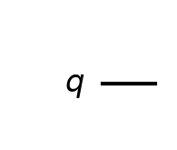
Example 4.2 Build a single quantum wire with a NOT gate in qiskit.
Show/hide solution...
from qiskit import QuantumCircuit
# create a one-qubit circuit
qc = QuantumCircuit(1)
qc.x(0) # add a NOT gate to qubit 0
# visualize the quantum circuit
qc.draw(output='mpl',style='clifford',
filename='img/qiskit-quantum-wire-not.png')
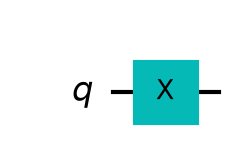
Example 4.3 Use qiskit to measure the state of the circuit from Example 4.3.
Show/hide solution...
TODO
5. Composite Quantum Systems
- Recall that all valid quantum states of a system comprise that system's Hilbert space
For a single qubit, any state in its Hilbert space can be written as a quantum superposition of computational basis states, \(\left\{ \ket{0},\ket{1}\right\}\):
\begin{equation} \ket{\psi}=c_{0}\ket{0}+c_{1}\ket{1} \end{equation}- The state is said to belong to the Hilbert space of the quantum system
Recall: we can represent \(\ket{\psi}\) as a vector of expansion coefficients ("amplitudes") over the computational basis states, \(\left\{ \ket{0},\ket{1}\right\}\)
\begin{equation} \begin{array}{c} \text{coefficient for }\ket{0}\leftrightarrow\\ \text{coefficient for }\ket{1}\leftrightarrow \end{array}\left[\begin{array}{c} c_{0}\\ c_{1} \end{array}\right]=c_{0}\left[\begin{array}{c} 1\\ 0 \end{array}\right]+c_{1}\left[\begin{array}{c} 0\\ 1 \end{array}\right] \end{equation}
5.1. Composite Hilbert Spaces and Composite States
- When we have two qubits, we have two Hilbert spaces, say,
\(\mathcal{H}_{0}\) and \(\mathcal{H}_{1}\), for qubits 0 and 1
- We might label a state \(\ket{\psi}_{0}\) of qubit 0 with a subscript "0", indicating it is within \(\mathcal{H}_{0}\)
- Similarly, we might label a state \(\ket{\psi}_{1}\) of qubit 1 with a subscript "1", indicating it is within \(\mathcal{H}_{1}\)
We form a two-qubit state using a tensor product
\begin{equation} \ket{\Psi}=\ket{\psi}_{1}\otimes\ket{\psi}_{0}=\ket{\psi}_{0}\otimes\ket{\psi}_{1} \end{equation}- The tensor product commutes, but we will prefer the form \(\ket{\psi}_{1}\otimes\ket{\psi}_{0}\), since it keeps the bits numbered in order from most significant to least significant, as we go from left to right (just like when we're writing bit strings)
- Tensor products are also known as Kronecker products
We can use more compact notation, where we leave the "\(\otimes\)" implicit:
\begin{equation} \ket{\Psi}=\ket{\psi}_{1}\otimes\ket{\psi}_{0}=\ket{\psi}_{1}\ket{\psi}_{0} \end{equation}
Example 5.1 Tensor products. Let
\begin{equation} \ket{\psi}_{1}=d_{0}\ket{0}_{0}+d_{1}\ket{1}_{0}\quad\leftrightarrow\quad\left[\begin{array}{c} d_{0}\\ d_{1} \end{array}\right] \end{equation}and
\begin{equation} \ket{\psi}_{0}=c_{0}\ket{0}_{0}+c_{1}\ket{1}_{0}\quad\leftrightarrow\quad\left[\begin{array}{c} c_{0}\\ c_{1} \end{array}\right]. \end{equation}Find the composite state
\begin{equation} \ket{\Psi}=\ket{\psi}_{1}\otimes\ket{\psi}_{0}. \end{equation}Show/hide solution...
\begin{equation} \begin{aligned} \ket{\Psi} & =\ket{\psi}_{1}\otimes\ket{\psi}_{0}=\left(d_{0}\ket{0}_{1}+d_{1}\ket{1}_{1}\right)\otimes\left(c_{0}\ket{0}_{0}+c_{1}\ket{1}_{0}\right)\\ & =d_{0}c_{0}\ket{0}_{1}\ket{0}_{0}+d_{0}c_{1}\ket{0}_{1}\ket{1}_{0}+d_{1}c_{0}\ket{1}_{1}\ket{0}_{0}+d_{1}c_{1}\ket{1}_{1}\ket{1}_{0} \end{aligned} \end{equation}We will use a short-hand notation and combine the bits into two-bit strings:
\begin{equation} \Ket{\Psi}=d_{0}c_{0}\ket{00}+d_{0}c_{1}\ket{01}+d_{1}c_{0}\ket{10}+d_{1}c_{1}\ket{11}. \end{equation}Notice that our composite state now has four basis vectors, and we could write \(\ket{\Psi}\) as a 4-element column vector:
\begin{equation} \label{orgb5d232d} \ket{\Psi}\quad\leftrightarrow\quad\left[\begin{array}{c} d_{0}c_{0}\\ d_{0}c_{1}\\ d_{1}c_{0}\\ d_{1}c_{1} \end{array}\right] \end{equation}We describe the composite Hilbert space, \(\mathcal{H}\), as the tensor product of \(\mathcal{H}_{1}\) and \(\mathcal{H}_{0}\):
\begin{equation} \mathcal{H}=\mathcal{H}_{1}\otimes\mathcal{H}_{0} \end{equation}- All this is great, but how can we understand what a tensor product is?
- We can turn to linear algebra to make things more concrete and less abstract
5.1.1. The Tensor Product of Matrices
- Note: we will use bold-face type (i.e., \(\mathbf{M}\)) or a hat (\(\hat{M}\)) to emphasize that \(\mathbf{M}\) represents a matrix or an operator; when writing by hand, we will use a hat \(\hat{M}\) because it's difficult to write in bold-face.
Let \(\hat{A}\) be an \(m\times n\) matrix and \(\hat{B}\) be an \(o\times p\) matrix:
\begin{equation} \hat{A}=\left[\begin{array}{cccc} a_{11} & a_{12} & \cdots & a_{1n}\\ a_{21} & a_{22} & \cdots & a_{2n}\\ \vdots & \vdots & \ddots & \vdots\\ a_{m1} & a_{m2} & \cdots & a_{mn} \end{array}\right],\qquad\hat{B}=\left[\begin{array}{cccc} b_{11} & b_{12} & \cdots & b_{1p}\\ b_{21} & b_{22} & \cdots & b_{2p}\\ \vdots & \vdots & \ddots & \vdots\\ b_{o1} & b_{o2} & \cdots & b_{op} \end{array}\right] \end{equation}The tensor (or Kronecker) product \(\hat{A}\otimes\hat{B}\) is an \(mo\times np\) matrix:
\begin{equation} \hat{A}\otimes\hat{B}=\left[\begin{array}{cccc} a_{11}\hat{B} & a_{12}\hat{B} & \cdots & a_{1n}\hat{B}\\ a_{21}\hat{B} & a_{22}\hat{B} & \cdots & a_{2n}\hat{B}\\ \vdots & \vdots & \ddots & \vdots\\ a_{m1}\hat{B} & a_{m2}\hat{B} & \cdots & a_{mn}\hat{B} \end{array}\right] \end{equation}- Here, each element of \(\hat{A}\) multiplies all of \(\hat{B}\) and forms a block of \(\hat{A}\otimes\hat{B}\)
- This treatment also applies to vectors, since vectors are matrices with a single row or column
Exercise 5.2 The Kronecker product with vectors.
Take the Kronecker product of the two vectors
\begin{equation} \ket{\psi}_{0}=\left[\begin{array}{c} c_{0}\\ c_{1} \end{array}\right],\qquad\ket{\psi}_{1}=\left[\begin{array}{c} d_{0}\\ d_{1} \end{array}\right]\;. \end{equation}Show/hide solution...
\begin{equation} \label{org1a0ce8d} \ket{\psi}_{1}\otimes\ket{\psi}_{0}=\left[\begin{array}{c} d_{0}\left[\begin{array}{c} c_{0}\\ c_{1} \end{array}\right]\\ d_{1}\left[\begin{array}{c} c_{0}\\ c_{1} \end{array}\right] \end{array}\right]=\left[\begin{array}{c} d_{0}c_{0}\\ d_{0}c_{1}\\ d_{1}c_{0}\\ d_{1}c_{1} \end{array}\right]\begin{array}{c} \leftrightarrow\ket{0}\ket{0}\\ \leftrightarrow\ket{0}\ket{1}\\ \leftrightarrow\ket{1}\ket{0}\\ \leftrightarrow\ket{1}\ket{1} \end{array} \end{equation}Notice that Equation \eqref{org1a0ce8d} agrees with our result from \eqref{orgb5d232d}.
Take the three-Cbit Kronecker product \(\ket{2}_{3}=\ket{0}\otimes\ket{1}\otimes\ket{0}\):
Show/hide solution...
\\ \begin{equation} \ket{0}\otimes\ket{1}\otimes\ket{0}=\left[\begin{array}{c} 1\\ 0 \end{array}\right]\otimes\left[\begin{array}{c} 0\\ 1 \end{array}\right]\otimes\left[\begin{array}{c} 1\\ 0 \end{array}\right]=\left[\begin{array}{c} 1\\ 0 \end{array}\right]\otimes\left[\begin{array}{c} 0\\ 0\\ 1\\ 0 \end{array}\right]=\left[\begin{array}{c} 0\\ 0\\ 1\\ 0\\ 0\\ 0\\ 0\\ 0 \end{array}\right]\begin{array}{c} \leftrightarrow\ket{000}\\ \leftrightarrow\ket{001}\\ \leftrightarrow\ket{010}\\ \leftrightarrow\ket{011}\\ \leftrightarrow\ket{100}\\ \leftrightarrow\ket{101}\\ \leftrightarrow\ket{110}\\ \leftrightarrow\ket{111} \end{array} \end{equation}
- Observations
- If we number the bits in the eight-element vector 0 through 7, then only element 2 is unity, and all others are zero.
- This works for any \(N\)-bit system.
If we compose the appropriate Cbits
\begin{equation} \ket{b_{N-1}}\ket{b_{N-2}}\cdots\ket{b_{1}}\ket{b_{0}}=\ket{k}_{N}, \end{equation}then in the corresponding vector, the \(k^{\mbox{{\tiny {th}}}}\) element alone is unity, and all others are zero.
- Conversely, we can:
- Represent \(S\) different numbers over \(0\leq k
- The \(k^{\mbox{{\tiny {th}}}}\) number is represented by setting element \(k=1\), and all other elements to zero
- Represent \(S\) different numbers over \(0\leq k
5.2. Product States and Entangled States
Consider a state two-qubit state
\begin{equation} \Ket{\Psi}=\ket{\psi_{B}}\otimes\ket{\psi_{A}}. \end{equation}- Here, the qubits are labeled \(A\) and \(B\), and we have ordered them to suggest that qubit \(A\) is the least-significant bit, and qubit \(B\) is the most-significant bit
- By definition, \(\ket{\Psi}\) is a product state, because it can be formed by a tensor product of subsystem quantum states.
- We are ignoring the physical implementation of the qubits, since
there are numerous ways to implement a qubit. We simply need a
two-state system, and we assign "0" to one state, and "1" to the
other state:
- Polarization of light: \(\left\{ \leftrightarrow,\updownarrow\right\}\),\(\left\{ \circlearrowright,\circlearrowleft\right\}\)
- Electronic spin: \(\left\{ \uparrow,\downarrow\right\}\)
- Electronic location: \(\left\{ \ket{L},\ket{R}\right\}\)
- Eigenstates of a QHO, using only the ground state and the first excited state: \(\left\{ \ket{0},\ket{1}\right\}\)
Let \(\ket{\psi_{A}}=a_{0}\ket{0_{A}}+a_{1}\ket{1_{A}}\), and \(\ket{\psi_{B}}=b_{0}\ket{0_{B}}+b_{1}\ket{1_{B}}\). Then,
\begin{equation} \begin{aligned} \ket{\Psi} & =\ket{\psi_{A}}\otimes\ket{\psi_{B}}=\ket{\psi_{B}}\otimes\ket{\psi_{A}}\\ & =b_{0}a_{0}\ket{0_{B}}\ket{0_{A}}+b_{0}a_{1}\ket{0_{B}}\ket{1_{A}}+b_{1}a_{0}\ket{1_{B}}\ket{0_{A}}+b_{1}a_{1}\ket{1_{B}}\ket{1_{A}}.\\ & =b_{0}a_{0}\ket{0_{B}0_{A}}+b_{0}a_{1}\ket{0_{B}1_{A}}+b_{1}a_{0}\ket{1_{B}0_{A}}+b_{1}a_{1}\ket{1_{B}1_{A}}. \end{aligned} \end{equation}
In quantum computing literature, it is customary to drop the subscripts inside the kets and simply write
\begin{equation} \label{org90124aa} \ket{\Psi}=b_{0}a_{0}\ket{00}+b_{0}a_{1}\ket{01}+b_{1}a_{0}\ket{10}+b_{1}a_{1}\ket{11}. \end{equation}
- We have associated the position of each bit with a quantum subsystem
- It is important that we are consistent with these associations when using the more compact notation
More generally, we could write a two-qubit state
\begin{equation} \begin{aligned} \ket{\Psi} & =c_{0}\ket{00}+c_{1}\ket{01}+c_{2}\ket{10}+c_{3}\ket{11}\\ & =c_{0}\ket{0_{2}}+c_{1}\ket{1_{2}}+c_{2}\ket{2_{2}}+c_{3}\ket{3_{2}}. \end{aligned} \end{equation}- This introduces another shorthand notation, where we:
- write the base-10 equivalent integer \(d_{N}\) of the \(N\)-bit string \(q_{N-1}q_{N-2}\cdots q_{1}q_{0}\), and
- and use a subscript \(N\) to indicate that \(d_{N}\) indexes a \(N\)-qubit state
- This introduces another shorthand notation, where we:
Exercise 5.3 Let a two-qubit state be
\begin{equation} \ket{\Psi}=c_{0}\ket{0_{2}}+c_{2}\ket{2_{2}}. \end{equation}Determine whether \(\ket{\Psi}\) is a product state. If so, find the states \(\ket{\psi_{B}}\) and \(\ket{\psi_{A}}\) for qubits \(B\) and \(A\), respectively.
Show/hide solution...
It can behelpful to write this as
\begin{equation} \ket{\Psi}=c_{0}\ket{0_{B}}\ket{0_{A}}+c_{2}\ket{1_{B}}\ket{0_{A}} \end{equation}It is clear that we can factor this as
\begin{equation} \ket{\Psi}=\left(c_{0}\ket{0_{B}}+c_{2}\ket{1_{B}}\right)\ket{0_{A}} \end{equation}Now, we can write
\begin{equation} \ket{\psi_{B}}=c_{0}\ket{0_{B}}+c_{2}\ket{1_{B}}\qquad\text{and}\qquad\ket{\psi_{A}}=\ket{0_{A}} \end{equation}Find the probabilities \(p_{B}\left(\alpha\right)\) of measuring \(\alpha\in\left\{ 0,1\right\}\) on qubit \(B\).
Show/hide solution...
\\From our previous result for \(\ket{\psi_{B}}\),
\begin{equation} p_{B}\left(0\right)=\left|c_{0}\right|^{2},\qquad\text{and}\qquad p_{B}\left(1\right)=\left|c_{2}\right|^{2}. \end{equation}Find the probabilities \(p_{A}\left(\alpha\right)\) of measuring \(\alpha\in\left\{ 0,1\right\}\) on qubit \(A\).
Show/hide solution...
\\From our previous result for \(\ket{\psi_{A}}\),
\begin{equation} p_{A}\left(0\right)=1,\qquad\text{and}\qquad p_{A}\left(1\right)=0. \end{equation}If we measure "0" on qubit \(B\), what is the post-measurement two-qubit wave function, \(\ket{\Psi^{\prime}}\)?
Show/hide solution...
\\ \begin{equation} \ket{\Psi^{\prime}}=\ket{0_{B}}\ket{0_{A}} \end{equation}If we now perform a subsequent measurement of \(A\), what are the probabilities of a 0 and 1 measurement?
Show/hide solution...
\\ \begin{equation} \ket{\Psi^{\prime}}=\ket{0_{B}}\ket{0_{A}} \end{equation}
If we measure "1" on qubit \(B\), what is the resulting two-qubit wave function \(\ket{\Psi^{\prime}}\)?
Show/hide solution...
\\ \begin{equation} \ket{\Psi^{\prime}}=\ket{1_{B}}\ket{0_{A}} \end{equation}If we now perform a subsequent measurement of \(A\), what are the probabilities of a 0 and 1 measurement?
Show/hide solution...
\\ \begin{equation} p_{A}\left(0\right)=1,\qquad p_{A}\left(1\right)=0 \end{equation}</details>
- Observations about product states
- Since we could factor \(\ket{\Psi}\) into \(\ket{\psi_{B}}\) and \(\ket{\psi_{A}}\), information (everything that can be known) about \(B\) is found in \(\ket{\psi_{B}}\) , and information about system \(A\) is found in \(\ket{\psi_{A}}\)
- Complete information about system \(X\in\left\{ A,B\right\}\) is found locally in that system (i.e., in \(\ket{\psi_{X}}\))
- Measurements on system \(B\) do not affect measurements on system \(A\)
- Since \(\ket{\Psi}\) is a product state factorizable into \(\ket{\psi_{A}}\) and \(\ket{\psi_{B}}\), \(A\) and \(B\) are said to have pure states or coherent states.
Exercise 5.4 Let a two-qubit state be
\begin{equation} \ket{\Psi}=c_{0}\ket{0_{2}}+c_{2}\ket{2_{2}}. \end{equation}Determine whether \(\ket{\Psi}\) is a product state. If so, find the states \(\ket{\psi_{B}}\) and \(\ket{\psi_{A}}\) for qubits \(B\) and \(A\), respectively.
Show/hide solution...
It can behelpful to write this as
\begin{equation} \begin{aligned} \ket{\Psi} & =c_{0}\ket{0_{B}}\ket{0_{A}}+c_{1}\ket{0_{B}}\ket{1_{A}}+c_{2}\ket{1_{B}}\ket{0_{A}}\\ & =\ket{0_{B}}\left(c_{0}\ket{0_{A}}+c_{1}\ket{1_{A}}\right)+c_{2}\ket{1_{B}}\ket{0_{A}} \end{aligned} \end{equation}This is as far as we can take it, however!
Find the probabilities \(p_{B}\left(\alpha\right)\) of measuring \(\alpha\in\left\{ 0,1\right\}\) on qubit \(B\).
Show/hide solution...
\\The only states in \(\ket{\Psi}\) which allow for a "\(0\)" measurement on system \(B\) are \(\ket{0_{2}}=\ket{0_{B}}\ket{0_{A}}\) and \(\ket{1_{2}}=\ket{0_{B}}\ket{1_{A}}\). Therefore,
\begin{equation} p_{B}\left(0\right)=\left|c_{0}\right|^{2}+\left|c_{1}\right|^{2}. \end{equation}Similarly:
\begin{equation} p_{B}\left(1\right)=\left|c_{2}\right|^{2} \end{equation}</details>
Find the probabilities \(p_{A}\left(\alpha\right)\) of measuring \(\alpha\in\left\{ 0,1\right\}\) on qubit \(A\).
Show/hide solution...
\\The only states in \(\ket{\Psi}\) which allows for a "\(0\)" measurement on system \(A\) are \(\ket{0_{2}}=\ket{0_{B}}\ket{0_{A}}\) and \(\ket{2_{2}}=\ket{1_{B}}\ket{0_{A}}\). Thus:
\begin{equation} p_{A}\left(0\right)=\left|c_{0}\right|^{2}+\left|c_{2}\right|^{2}. \end{equation}Similarly:
\begin{equation} p_{A}\left(1\right)=\left|c_{1}\right|^{2} \end{equation}</details>
If we measure "0" on qubit \(B\), what is the post-measurement two-qubit wave function, \(\ket{\Psi^{\prime}}\)?
Show/hide solution...
\\ \begin{equation} \ket{\Psi^{\prime}}=A_{0}\ket{0_{B}}\left(c_{0}\ket{0_{A}}+c_{1}\ket{1_{A}}\right) \end{equation}with some normalization constant, \(A_{0}\).
If we now perform a subsequent measurement of \(A\), what are the probabilities of a 0 and 1 measurement?
Show/hide solution...
\\ \begin{equation} p_{A}\left(0\right)=\left|A_{0}\right|^{2}\left|c_{0}\right|^{2},\qquad p_{A}\left(1\right)=\left|A_{0}\right|^{2}\left|c_{1}\right|^{2} \end{equation}
If we measure "1" on qubit \(B\), what is the resulting two-qubit wave function \(\ket{\Psi^{\prime}}\)?
Show/hide solution...
\\ \begin{equation} \ket{\Psi^{\prime}}=\ket{1_{B}}\ket{0_{A}} \end{equation}If we now perform a subsequent measurement of \(A\), what are the probabilities of a 0 and 1 measurement?
Show/hide solution...
\\ \begin{equation} p_{A}\left(0\right)=1,\qquad p_{A}\left(1\right)=0 \end{equation}</details>
- Observations
- Since we could not factor \(\ket{\Psi}\) into \(\ket{\psi_{B}}\) and \(\ket{\psi_{A}}\), we say that the states \(A\) and \(B\) are entangled
- Unlike product states, transformations on one subsystem in an
entangled pair of systems affect the state of the other subsystem
- There is information about \(A\) (i.e., the state of \(A\)) that gets manipulated when \(B\) is transformed or measured, and vice versa
- In the second example, measurements on \(B\) affect subsequent measurements on \(A\)
- This can even be true when \(A\) and \(B\) are separated over a very great distance
- This is the basis for the quantum teleportation of information and quantum communication schemes
- Historical note
- Einstein found this non-locality of entanglement in quantum states to be troubling
- Einstein called this "spooky action at a distance," and he said that
physics did not work like this
- There must be some information missing from the quantum description that determines this otherwise inexplicable link between entangled systems
- Einstein thought that quantum mechanics was an incomplete
description of the world
- He hypothesized that there was some unknown connection between entangled systems
- This is known as a hidden variable theory
- When systems \(A\) and \(B\) are entangled:
- information about system \(A\) is non-local to system \(A\).
- information about \(A\) is missing locally from \(A\), but is present in the composite \(AB\) quantum system
- information about system \(B\) is non-local to system \(B\)
- we no longer can write a wave function \(\ket{\psi_{A}}\) or \(\ket{\psi_{B}}\) that contains everything that can be known about \(A\) or \(B\). Neither system \(A\) nor \(B\) has its own distinct wave function!
- we say that systems \(A\) and \(B\) no longer have pure states (they are impure)
- the states of \(A\) and \(B\) are said to be correlated
5.3. Composite Operators
- We now know how to make composite states
- How do we make composite operators?
- We also use the tensor product
- Consider two quantum systems: system 0 from Hilbert space 0,
\(\mathcal{H}_{0}\), and system 1 from Hilbert space 1,
\(\mathcal{H}_{1}\)
- Let operator \(\mathbf{A}\) transform states \(\left\{ \ket{\psi_{0}}\right\}\) from Hilbert space 0, and let operator \(\mathbf{B}\) transform states \(\left\{ \ket{\psi_{1}}\right\}\) from Hilbert space 1.
Then, we make a composite operator \(\mathbf{B}\otimes\mathbf{A}\) that transforms composite states \(\ket{\psi_{1}}\otimes\ket{\psi_{0}}\):
\begin{equation} \left(\mathbf{B}\otimes\mathbf{A}\right)\left(\ket{\psi_{1}}\otimes\ket{\psi_{0}}\right)=\mathbf{B}\ket{\psi_{1}}\otimes\mathbf{A}\ket{\psi_{0}} \end{equation}- Notice that we are careful and consistent about ordering entities
from the respective Hilbert spaces
- We use the ordering \(\mathcal{H}_{1}\otimes\mathcal{H}_{0}\) to order the state vector product \(\ket{\psi_{1}}\otimes\ket{\psi_{0}}\), the operator product \(\mathbf{B}\otimes\mathbf{A}\), and the result \(\mathbf{B}\ket{\psi_{1}}\otimes\mathbf{A}\ket{\psi_{0}}\), which also is a product of state vectors
In quantum mechanics, objects from different Hilbert spaces \(\mathcal{H}_{i}\) and \(\mathcal{H}_{j}\) commute:
\begin{equation} \mathbf{O}_{1}\otimes\mathbf{O}_{0}=\mathbf{O}_{0}\otimes\mathbf{O}_{1} \end{equation}In linear algebra, however, we cannot simply commute Kronecker products:
\begin{equation} \tilde{M}_{1}\otimes\tilde{M}_{0}\neq\tilde{M}_{0}\otimes\tilde{M}_{1}, \end{equation}so it is advisable for beginners to always be careful about the order of Kronecker products.
In quantum computing literature, if we only want to operate on the \(k\)-th qubit using an operator \(\mathbf{O}\), we could explicilty write this as
\begin{equation} \mathbf{1}_{n-1}\otimes\cdots\otimes\mathbf{1}_{k+1}\otimes\mathbf{O}_{k}\otimes\mathbf{1}_{k-1}\otimes\cdots\mathbf{1}_{0}=\mathbf{O}_{n-1}\cdots\mathbf{1}_{k+1}\mathbf{O}_{k}\mathbf{1}_{k-1}\cdots\mathbf{1}_{0}=\mathbf{O}_{k} \end{equation}- Here, we are are applying the identity operator (it does nothing) to all qubits except the \(k\)-th qubit, and the \(k\)-th qubit gets transformed by operator \(\mathbf{O}\)
- The notation for an identity matrix is also often written as \(\mathbf{I}\), we will be using the \(\mathbf{1}\) notation
- In the middle, we omit the tensor-product operator \(\otimes\) for a more compact notation
- The most compact notation is to leave the identity operators implicit, and use only the subscript, as in the right-hand expression.
Exercise 5.5 Consider the state \(\ket{0}\otimes\ket{1}\). Construct an operator that flips bit 1 but not bit 0.
Show/hide solution...
Start by first finding the state vector:
\begin{equation} \ket{0}\otimes\ket{1}=\left[\begin{array}{c} 1\\ 0 \end{array}\right]\otimes\left[\begin{array}{c} 0\\ 1 \end{array}\right]=\left[\begin{array}{c} 0\\ 1\\ 0\\ 0 \end{array}\right]\begin{array}{c} \leftrightarrow\ket{0}\ket{0}\\ \leftrightarrow\ket{0}\ket{1}\\ \leftrightarrow\ket{1}\ket{0}\\ \leftrightarrow\ket{1}\ket{1} \end{array} \end{equation}To flip qubit 1 but not qubit zero, we make the following tensor product:
\begin{equation} \mathbf{X}\otimes\mathbf{1}=\left[\begin{array}{cc} 0 & 1\\ 1 & 0 \end{array}\right]\otimes\left[\begin{array}{cc} 1 & 0\\ 0 & 1 \end{array}\right]=\left[\begin{array}{cccc} 0 & 0 & 1 & 0\\ 0 & 0 & 0 & 1\\ 1 & 0 & 0 & 0\\ 0 & 1 & 0 & 0 \end{array}\right] \end{equation}Now, we can see how \(\mathbf{X}\otimes\mathbf{1}\) transforms \(\ket{0}\otimes\ket{1}\):
\begin{equation} \left(\mathbf{X}\otimes\mathbf{1}\right)\left(\ket{0}\otimes\ket{1}\right)=\left[\begin{array}{cccc} 0 & 0 & 1 & 0\\ 0 & 0 & 0 & 1\\ 1 & 0 & 0 & 0\\ 0 & 1 & 0 & 0 \end{array}\right]\left[\begin{array}{c} 0\\ 1\\ 0\\ 0 \end{array}\right]=\left[\begin{array}{c} 0\\ 0\\ 0\\ 1 \end{array}\right]\begin{array}{c} \leftrightarrow\ket{0}\ket{0}\\ \leftrightarrow\ket{0}\ket{1}\\ \leftrightarrow\ket{1}\ket{0}\\ \leftrightarrow\ket{1}\ket{1} \end{array} \end{equation}By considering the mapping of our new state vector to the computational basis, we can see that we have indeed flipped bit 1 but left bit 0 alone. We can also manipulate the expression directly without writing out matrices:
\begin{equation} \left(\mathbf{X}\otimes\mathbf{1}\right)\left(\ket{0}\otimes\ket{1}\right)=\mathbf{X}\ket{0}\otimes\mathbf{1}\ket{1}=\ket{1}\otimes\ket{1} \end{equation}We now have another way to see that our composite operator was well-designed for our desired application. Similarly, we could flip only bit 0 using the composite operator \(\mathbf{1}\otimes\mathbf{X}\). Finally, we could flip both bits using \(\mathbf{X}\otimes\mathbf{X}\).
5.3.1. Conceptual Note: QCA and Qubits
- We've been introducing you to quantum mechanics and quantum
information using two applications:
- Quantum-dot cellular automata (QCA)
- These are physical systems used for classical information processing
- Quantum mechanics is necessary to describe the physics of QCA
- Here, the two classical bit states, "0" and "1" (or \(\ket{0}\)
and \(\ket{1}\)) are important
- While we are most concerned with classical bits, quantum states can arise that are a superposition of \(\ket{0}\) and \(\ket{1}\)
- In quantum mechanics and QCA, we're most interested in solving the Schrödinger equation
- Quantum information
Here, we use quantum bits,
\begin{equation} \ket{\psi}=c_{0}\ket{0}+c_{1}\ket{1} \end{equation}for information processing with quantum algorithms
- In information processing and the study of algorithms, we generally ignore the quantum physics, so we don't focus on the Hamiltonian or the Schrödinger equation
- Quantum-dot cellular automata (QCA)
5.4. Application of Composite Quantum Systems: QCA Circuits and Ground State
- Here, we will model systems of interacting QCA molecules that function as circuits, and discern their ground states
- We will work with the simplest of circuits, a row of QCA molecules, as
illustrated in Figure 22
- The molecules are spaced with an even pitch \(a\)
5.4.1. Hamiltonian Operators for Individual Cells
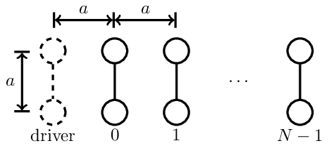
Figure 22: A system of \(N\) QCA molecules acts as a binary wire. A driver cell is labeled as cell 0, and the \(N\) circuit cells are labeled \(k\in\left\{ 1,2,\ldots,N\right\}\). Each cell is a distance \(a\) from its nearest neighbors.
- To simplify the problem, we will assume that only nearest neighbors
interact
Thus, in this limit, only cell 0 is directly influenced by the driver, drives a bias given in Equations \eqref{orgedbe644} and \eqref{org8bd6954} as the following function of driver polarization, \(P_{0}\):
\begin{equation} \Delta\left(P_{0}\right)=\left(1-\frac{1}{\sqrt{2}}\right)\frac{q_{e}^{2}}{4\pi\varepsilon_{0}a}P_{0} \end{equation}If cell 0 has tunneling energy \(-\gamma\), then we write its Hamiltonian as
\begin{equation} \label{org06a0ce9} \hat{H}_{0}=-\gamma\hat{\sigma}_{x}^{\left(0\right)}+\frac{\Delta}{2}\hat{\sigma}_{z}^{\left(0\right)}, \end{equation}where we have added the superscript \(\left(0\right)\) to indicate that these Pauli operators are for the Hilbert space of cell 0, \(\mathcal{H}_{0}\)
- Note that \(\Delta\) is the term that describes the effect of the driver on cell 1
- The bold notation and hat notation both signify matrices.
For cells \(1,2,\ldots,N\), there is no driver bias, so we write the Hamiltonian \(\hat{H}_{k}\) for the \(k\)-th cell in a way that describes charge tunneling in the \(k\)-th cell, but no bias:
\begin{equation} \label{orgf871b75} \hat{H}_{k}=-\gamma\hat{\sigma}_{x}^{\left(k\right)} \end{equation}- By definition, this operator acts only on the Hilbert space of the \(k\)-th molecule, \(\mathcal{H}_{k}\)
- Before we can sum the various \(\hat{H}_{k}\), we need to expand each
one into the Hilbert space of the full system
The composite Hilbert space is a tensor product of individual Hilbert spaces :
\begin{equation} \mathcal{H}=\mathcal{H}_{N-1}\otimes\mathcal{H}_{N-2}\otimes\cdots\otimes\mathcal{H}_{1}\otimes\mathcal{H}_{0} \end{equation}The Hamiltonian for cell 0 is expanded to the full Hilbert space as
\begin{equation} \hat{1}_{N-1}\otimes\hat{1}_{N-2}\otimes\cdots\otimes\hat{1}_{2}\otimes\hat{1}_{1}\otimes\hat{H}_{0} \end{equation}- The identity operators \(\hat{1}_{k}\) from Hilbert spaces \(k\neq0\) indicate that no description of other QCA molecules is included here
The Hamiltonian for cell 1 is expanded to the full Hilbert space as
\begin{equation} \hat{1}_{N-1}\otimes\hat{1}_{N-2}\otimes\cdots\otimes\hat{1}_{2}\otimes\hat{H}_{1}\otimes\hat{1}_{0} \end{equation}The Hamiltonian for cell \(k\) is expanded to the full Hilbert space \(as\)
\begin{equation} \hat{1}_{N}\otimes\hat{1}_{N-1}\otimes\cdots\otimes\hat{1}_{k+1}\otimes\hat{H}_{k}\otimes\hat{1}_{k-1}\otimes\cdots\otimes\hat{1}_{2}\otimes\hat{1}_{1} \end{equation}
Formally, we would combine the expanded Hamiltonians into \(\hat{H}\), the non-interacting or "free" Hamiltonian:
\begin{equation} \begin{aligned} \hat{H}_{0} & =\hat{1}_{N-1}\otimes\hat{1}_{N-2}\otimes\cdots\otimes\hat{1}_{2}\otimes\hat{1}_{1}\otimes\hat{H}_{0}\\ & \quad+\hat{1}_{N}\otimes\hat{1}_{N-1}\otimes\cdots\otimes\hat{1}_{3}\otimes\hat{H}_{2}\otimes\hat{1}_{1}\\ & \quad+\cdots\\ & \quad+\hat{H}_{N}\otimes\hat{1}_{N-1}\otimes\cdots\otimes\hat{1}_{2}\otimes\hat{1}_{1} \end{aligned} \end{equation}- Since each operator is from a two-dimensional Hilbert space, \(\hat{H}_{\text{free}}\) is described by a \(2^{N}\times2^{N}\) matrix
It is common practice to simplify our notation and ignore the identity operators, leaving them implicit rather than explicit, so that we write
\begin{equation} \hat{H}_{\text{free}}=\hat{H}_{0}+\hat{H}_{1}+\cdots+\hat{H}_{N-1}=\sum_{k=0}^{N-1}\hat{H}_{N-1} \end{equation}- \(\hat{H}_{\text{free}}\) is said to be non-interacting because no
description is included here of interactions between molecules
- \(\hat{H}_{\text{free}}\) describes each molecule as if it were in isolation
5.4.2. The Interaction Hamiltonian, \(\hat{H}_{\text{int}}\)
To include interactions in the complete Hamiltonian \(\hat{H}\) for the full circuit, we add an interaction term, \(\hat{H}_{\text{int}}\):
\begin{equation} \hat{H}=\hat{H}_{\text{free}}+\hat{H}_{\text{int }} \end{equation}The interaction term \(\hat{H}_{\text{int}}\) is a diagonal operator in the computational basis:
\begin{equation} \begin{aligned} \hat{H}_{\text{int}} & =\left[\begin{array}{cccc} U_{0}\\ & U_{1}\\ & & \ddots\\ & & & U_{2^{N}-1} \end{array}\right]\\ & =\left[\begin{array}{cccc} \Braket{0|\hat{H}_{\text{int}}|0}\\ & \Braket{1|\hat{H}_{\text{int}}|1}\\ & & \ddots\\ & & & \Braket{2^{N}-1|\hat{H}_{\text{int}}|2^{N}-1} \end{array}\right] \end{aligned} \end{equation}where \(\ket{x}\) is an integer encoding a product of individual bit states:
\begin{equation} \ket{x}=\ket{x_{N}}\otimes\ket{x_{N-1}}\otimes\cdots\otimes\ket{x_{2}}\otimes\ket{x_{1}}=\ket{x_{N}x_{N-1}\cdots x_{2}x_{1}} \end{equation}Explicitly,
\begin{equation} \begin{aligned} \ket{0} & =\ket{00\cdots000}\\ \ket{1} & =\ket{00\cdots001}\\ \ket{2} & =\ket{00\cdots010}\\ \ket{3} & =\ket{00\cdots011}\\ & \vdots\\ \ket{2^{N}-1} & =\ket{11\cdots111} \end{aligned} \end{equation}- Because \(\hat{H}_{\text{int}}\) is diagonal, we interpret its elements as contributions to the system potential energy
- Thus:
- \(\braket{0|\hat{H}_{\text{int}}|0}\) is the energy of interaction between the cells when all cells are in the "0" state
- \(\braket{1|\hat{H}_{\text{int}}|1}\) is the energy of interaction between the cells when all cells are in the "0" state, except for cell 0, which is in the "1" state
- \(\braket{2|\hat{H}_{\text{int}}|2}\) is the energy of interaction between the cells when all cells are in the "0" state, except for cell 1, which is in the "1" state,
- and so on, until we reach \(\braket{2^{N}-1|\hat{H}_{\text{int}}|2^{N}-1}\), which is the energy of interaction between the cells when all cells are in the "1" state
- The energies \(\braket{k|\hat{H}_{\text{int}}|k}\) can be calculated from electrostat
- ics by summing the energy of assembly of the charges given a particular circuit configuration
- Another way to determine the energies is through symmetry
- We will now illustrate this with an example
Exercise 5.6
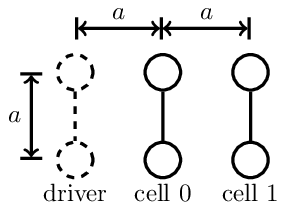
Figure 23: A driven two-cell QCA a binary wire.
Find the free Hamiltonian, \(\hat{H}_{\text{free}}\), for the circuit.
Show/hide solution...
\\As discussed above, only cell 0 is influcenced by the driver because we choose to simplify the problem by considering only nearest-neighbor interactions: cell \(k\) interacts only with cells \(k\pm1\). Thus, the Hamiltonian for cell 1 is given by Equation \eqref{org06a0ce9} and written in matrix form as
\begin{equation} \hat{H}_{0}=\left[\begin{array}{cc} \frac{\Delta}{2} & -\gamma\\ -\gamma & -\frac{\Delta}{2} \end{array}\right], \end{equation}whereas the Hamiltonian for cell 1 is given by Equation \eqref{orgf871b75} and is written as a matrix devoid of any direct influence by the driver:
\begin{equation} \hat{H}_{1}=\left[\begin{array}{cc} 0 & -\gamma\\ -\gamma & 0 \end{array}\right] \end{equation}Now, we expand \(\hat{H}_{0}\) and \(\hat{H}_{1}\)into the full Hilbert space:
\begin{equation} \mathbf{1}_{1}\otimes\hat{H}_{0}=\left[\begin{array}{cccc} \frac{\Delta}{2} & -\gamma & 0 & 0\\ -\gamma & -\frac{\Delta}{2} & 0 & 0\\ 0 & 0 & \frac{\Delta}{2} & -\gamma\\ 0 & 0 & -\gamma & -\frac{\Delta}{2} \end{array}\right],\qquad\text{and}\qquad\hat{H}_{1}\otimes\mathbf{1}_{0}=\left[\begin{array}{cccc} 0 & 0 & -\gamma & 0\\ 0 & 0 & 0 & -\gamma\\ -\gamma & 0 & 0 & 0\\ 0 & -\gamma & 0 & 0 \end{array}\right]. \end{equation}Finally, we add these together to get the free Hamiltonian:
\begin{equation} \hat{H}_{\text{free}}=\left[\begin{array}{cccc} \frac{\Delta}{2} & -\gamma & -\gamma & 0\\ -\gamma & -\frac{\Delta}{2} & 0 & -\gamma\\ -\gamma & 0 & \frac{\Delta}{2} & -\gamma\\ 0 & -\gamma & -\gamma & -\frac{\Delta}{2} \end{array}\right] \end{equation}Use symmetry to find the the interaction term, \(\hat{H}_{\text{int}}\).
Show/hide solution...
\\To find the interaction Hamiltonian,
\begin{equation} \begin{aligned} \hat{H}_{\text{int}} & =\left[\begin{array}{cccc} U_{0} & 0 & 0 & 0\\ 0 & U_{1} & 0 & 0\\ 0 & 0 & U_{2} & 0\\ 0 & 0 & 0 & U_{3} \end{array}\right]\\ & =\left[\begin{array}{cccc} \braket{0|\hat{H}_{\text{int}}|0} & 0 & 0 & 0\\ 0 & \braket{1|\hat{H}_{\text{int}}|1} & 0 & 0\\ 0 & 0 & \braket{2|\hat{H}_{\text{int}}|2} & 0\\ 0 & 0 & 0 & \braket{3|\hat{H}_{\text{int}}|3} \end{array}\right], \end{aligned} \end{equation}we need to calculate the energies of interaction in the four comptational basis states, \(\left\{ \ket{0},\ket{1},\ket{2},\ket{3}\right\}\). These states are illustrated in Figure 24-27. The energies we seek are internal to the two-cell quantum system. We exclude driver interactions, since the driver is external to the quantum system, and its influence appears in the bais for \(\hat{H}_{1}\). Since the energy of interaction is based on Coulomb repulsion (the Coulomb electrostatic potential), we can expect the \(\ket{0}=\ket{0}\otimes\ket{0}\) state to have the same energy as the \(\ket{3}=\ket{1}\otimes\ket{1}\) state:
\begin{equation} \braket{0|\hat{H}_{\text{int}}|0}=\braket{3|\hat{H}_{\text{int}}|3}. \end{equation}This can be seen because the two states are identical, mirror images about the \(x=0\) axis. There is no reason to think that they have different energies of interaction. Likewise, we can recognize that
\begin{equation} \braket{1|\hat{H}_{\text{int}}|1}=\braket{2|\hat{H}_{\text{int}}|2}. \end{equation}Furthermore, we recognize that the states \(\ket{0}\) and \(\ket{3}\) are aligned (kinked), and the states \(\ket{1}\) and \(\ket{2}\) are anti-aligned (relaxed). Thus, we expect \(\braket{0|\hat{H}_{\text{int}}|0}=\braket{3|\hat{H}_{\text{int}}|3}\) to be \(E_{k}\) higher than \(\braket{1|\hat{H}_{\text{int}}|1}=\braket{2|\hat{H}_{\text{int}}|2}\):
\begin{equation} \braket{0|\hat{H}_{\text{int}}|0}=\braket{3|\hat{H}_{\text{int}}|3}=\braket{1|\hat{H}_{\text{int}}|1}+E_{k}=\braket{2|\hat{H}_{\text{int}}|2}+E_{k}. \end{equation}Since we can choose the zero of the potenial energy of interaction, we can set the zero to be infinite separation of charge, which also is half-way between the kinked and relaxed states, as illustrated in Figure 24--27. Thus, we can write the matrix \(\hat{H}_{\text{int}}\) and write in as an outer product of operators:
\begin{equation} \hat{H}_{\text{int}}=\frac{E_{k}}{2}\left[\begin{array}{cccc} 1 & 0 & 0 & 0\\ 0 & -1 & 0 & 0\\ 0 & 0 & -1 & 0\\ 0 & 0 & 0 & 1 \end{array}\right]=-\frac{E_{k}}{2}\left[\begin{array}{cccc} -1 & 0 & 0 & 0\\ 0 & 1 & 0 & 0\\ 0 & 0 & 1 & 0\\ 0 & 0 & 0 & -1 \end{array}\right]=-\frac{E_{k}}{2}\hat{\sigma}_{z}^{\left(1\right)}\otimes\hat{\sigma}_{z}^{\left(0\right)} \end{equation}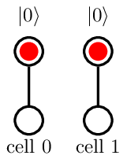
Figure 24: \(\ket{0}=\ket{0}\otimes\ket{0}\)
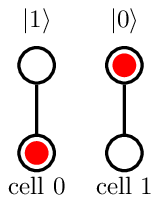
Figure 25: \(\ket{1}=\ket{0}\otimes\ket{1}\)
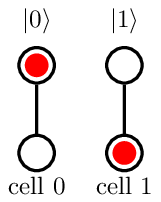
Figure 26: \(\ket{2}=\ket{1}\otimes\ket{0}\)
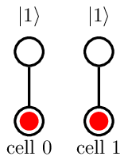
Figure 27: \(\ket{3}=\ket{1}\otimes\ket{1}\)
Construct the full Hamiltonian for the QCA circuit.
Show/hide solution...
\begin{equation} \hat{H}=\hat{H}_{\text{free}}+\hat{H}_{\text{int}}=\left[\begin{array}{cccc} \frac{\Delta}{2}+\frac{E_{k}}{2} & -\gamma & -\gamma & 0\\ -\gamma & -\frac{\Delta}{2}-\frac{E_{k}}{2} & 0 & -\gamma\\ -\gamma & 0 & \frac{\Delta}{2}-\frac{E_{k}}{2} & -\gamma\\ 0 & -\gamma & -\gamma & -\frac{\Delta}{2}+\frac{E_{k}}{2} \end{array}\right] \end{equation}In the limit of \(\gamma\rightarrow0\), find the ground state of the system. Assume that \(\Delta>0\) and \(E_{k}>0\).
Show/hide solution...
Here,\(\hat{H}\) becomes diagonal:
\begin{equation} \hat{H}=\hat{H}_{\text{free}}+\hat{H}_{\text{int}}=\left[\begin{array}{cccc} \frac{\Delta}{2}+\frac{E_{k}}{2} & 0 & 0 & 0\\ 0 & -\frac{\Delta}{2}-\frac{E_{k}}{2} & 0 & 0\\ 0 & 0 & \frac{\Delta}{2}-\frac{E_{k}}{2} & 0\\ 0 & 0 & 0 & -\frac{\Delta}{2}+\frac{E_{k}}{2} \end{array}\right] \end{equation}Thus, the eigenenergies are the diagonal elements. The lowest-energy eigenvalue is easy to spot: it's the second element,
\begin{equation} \Braket{01|\hat{H}|01}=-\frac{\Delta}{2}-\frac{E_{k}}{2}, \end{equation}corresponding to the state \(\ket{10}\), wherein cell 0 is in state 1 due to the driving bias \(\Delta>0\), and the two cells are antialigned. If the driving bias is small, i.e., \(\Delta\ll E_{k}\), the states \(\ket{01}\) and \(\ket{10}\) are very close in energy, but state \(\ket{01}\) is lower, nonetheless.
Find the ground state of the system in the limit of \(\gamma\rightarrow0\) and with no external bias, i.e., \(\Delta\rightarrow0\).
Show/hide solution...
When thedriving bias is removed (\(\Delta\rightarrow0\)), the Hamiltonian reduces to
\begin{equation} \hat{H}=\hat{H}_{\text{free}}+\hat{H}_{\text{int}}=\left[\begin{array}{cccc} \frac{E_{k}}{2} & 0 & 0 & 0\\ 0 & -\frac{E_{k}}{2} & 0 & 0\\ 0 & 0 & -\frac{E_{k}}{2} & 0\\ 0 & 0 & 0 & \frac{E_{k}}{2} \end{array}\right] \end{equation}the states \(\ket{10}\) and \(\ket{01}\) have the same energy, \(-E_{k}/2\). The system will have two degenerate ground state energies (lowest eigenenergies), so that any normalized quantum superposition of these two states has the lowest energy. Two straight-forward examples are
\begin{equation} \frac{1}{\sqrt{2}}\left(\ket{01}\pm\ket{10}\right). \end{equation}</details>
Exercise 5.7 Find the Hamiltonian for the driven pair of QCA cells in Figure 23. For simplicity, we consider only nearest-neighbor interactions. That is, the driver only affects cell 0, so that the Hamiltonian for cell 0 is as before:
\begin{equation} \hat{H}_{0}=-\gamma\hat{\sigma}_{x}+\frac{\Delta}{2}\hat{\sigma}_{z}=\left[\begin{array}{cc} -\frac{\Delta}{2} & -\gamma\\ -\gamma & \frac{\Delta}{2} \end{array}\right]. \end{equation}The Hamiltonian for cell 1 will not include the driver term proportional to \(\Delta\):
\begin{equation} \hat{H}_{1}=-\gamma\hat{\sigma}_{x}=\left[\begin{array}{cc} 0 & -\gamma\\ -\gamma & 0 \end{array}\right]. \end{equation}
Show/hide solution...
\\Before we can combine these into the free Hamiltonian, \(\hat{H}_{\text{free}}\), we must expand each into the full Hilbert space, \(\mathcal{H}=\mathcal{H}_{0}\otimes\mathcal{H}_{1}\):
\begin{equation} \hat{H}_{\text{free}}=\hat{H}_{0}\otimes\hat{1}_{1}+\hat{1}_{0}\otimes\hat{H}_{1}=\left[\begin{array}{cccc} -\frac{\Delta}{2} & -\gamma & -\gamma & 0\\ -\gamma & -\frac{\Delta}{2} & 0 & -\gamma\\ -\gamma & 0 & \frac{\Delta}{2} & -\gamma\\ 0 & -\gamma & -\gamma & \frac{\Delta}{2} \end{array}\right] \end{equation}The interaction term may be written in matrix form as
\begin{equation} \begin{aligned} \hat{H}_{\text{int}} & =\left[\begin{array}{cccc} \Braket{00|\hat{H}_{\text{int}}|00}\\ & \Braket{01|\hat{H}_{\text{int}}|01}\\ & & \Braket{10|\hat{H}_{\text{int}}|10}\\ & & & \Braket{11|\hat{H}_{\text{int}}|11} \end{array}\right]\\ & =\left[\begin{array}{cccc} U_{00}\\ & U_{01}\\ & & U_{10}\\ & & & U_{10} \end{array}\right] \end{aligned} \end{equation}Recall that \(U_{\beta\alpha}=\Braket{\beta\alpha|\hat{H}|\beta\alpha}\) is the potential energy of interaction between cell 0 in state \(\alpha\) and cell 1 in state \(\beta\). Thus, \(U_{00}\) is the energy of interaction between both cells in state 0, and \(U_{01}\) has cell 0 in state 1 but cell 1 in state 0. Additionally, \(U_{11}\) has both cells in the "1" state, but \(U_{10}\) has only cell 1 in the "1" state. Thus, we can recognize that the difference between \(U_{00}\) and \(\ket{U}_{10}\) is nothing more than the energy of a kink:
\begin{equation} U_{00}-U_{01}=U_{11}-U_{10}=E_{k} \end{equation}Furthermore, we should expect that \(U_{01}=U_{10}\) and \(U_{00}=U_{11}\):
\begin{equation} \hat{H}_{\text{int}}=\left[\begin{array}{cccc} U_{00}\\ & U_{10}\\ & & U_{10}\\ & & & U_{00} \end{array}\right]. \end{equation}Furthermore, we can define the zero of potential energy to be halfway between \(U_{00}\) and \(U_{10}\): \(U_{01}\) and \(U_{10}\) so that
\begin{equation} \hat{H}_{\text{int}}=\left[\begin{array}{cccc} \frac{E_{k}}{2}\\ & -\frac{E_{k}}{2}\\ & & -\frac{E_{k}}{2}\\ & & & \frac{E_{k}}{2} \end{array}\right]. \end{equation}We can see here that the states \(\ket{00}\) and \(\ket{11}\) are a full kink energy above the states \(\ket{01}\) and \(\ket{10}\). Thus, we can write \(\hat{H}_{\text{int}}\) as
\begin{equation} \hat{H}_{\text{int}}=-\frac{E_{k}}{2}\hat{\sigma}_{z}\otimes\hat{\sigma}_{z}. \end{equation}Now, we can find the total Hamiltonian,
\begin{equation} \begin{aligned} \hat{H} & =\hat{H}_{\text{free}}+\hat{H}_{\text{int}}\\ & =\left[\begin{array}{cccc} -\frac{\Delta}{2}+\frac{E_{k}}{2} & -\gamma & -\gamma & 0\\ -\gamma & -\frac{\Delta}{2}-\frac{E_{k}}{2} & 0 & -\gamma\\ -\gamma & 0 & \frac{\Delta}{2}-\frac{E_{k}}{2} & -\gamma\\ 0 & -\gamma & -\gamma & \frac{\Delta}{2}+\frac{E_{k}}{2} \end{array}\right] \end{aligned} \end{equation}Exercise 5.8 Find the ground state of the system from Figure 23 under the simplifications \(\Delta\rightarrow0\) and \(\gamma\rightarrow0\). You may assume \(E_{k}>0\).
Show/hide solution...
Here, the Hamiltonian assumes a diagonal form:
\begin{equation} \hat{H}\rightarrow\left[\begin{array}{cccc} \frac{E_{k}}{2} & 0 & 0 & 0\\ 0 & -\frac{E_{k}}{2} & 0 & 0\\ 0 & 0 & -\frac{E_{k}}{2} & 0\\ 0 & 0 & 0 & \frac{E_{k}}{2} \end{array}\right] \end{equation}Because of this, we can know that the eigenvalues and eigenvectors are:
\begin{equation} -\frac{E_{k}}{2}\quad\text{for}\quad\ket{01},\ket{10} \end{equation}and
\begin{equation} \frac{E_{k}}{2}\quad\text{for}\quad\ket{11},\ket{00}. \end{equation}Because the lowest-energy eigenvalue \(-E_{k}/2\) (the ground state energy) appears twice, the system is said to be doubly degenerate, any linear combination of states
\begin{equation} c_{01}\ket{01}+c_{10}\ket{10} \end{equation}has the same (minimum) energy as the ground state. It is customary to pick a combination of states as the ground state:
\begin{equation} \ket{\psi_{0}}=\frac{1}{\sqrt{2}}\left(\ket{10}+\ket{01}\right). \end{equation}Exercise 5.9 Find the ground state of the system from Figure 23 under the simplifications \(\Delta\rightarrow0\) and \(\gamma\rightarrow0\), but now with each cell experiencing internal bias \(\Delta_{0}\) and external bias, \(\Delta_{e}\). For now, let us combine the internal and external bias as
\begin{equation} \Delta_{t}=\Delta_{o}+\Delta_{e}. \end{equation}This will make our calculations simpler. When we want to explore the competition between \(\Delta_{o}\) and \(\Delta_{e}\), we can add that level of granularity and complexity.
Show/hide solution...
Now, both cells have the same Hamiltonian form:
\begin{equation} \hat{H}_{0}=\hat{H}_{1}=-\gamma\hat{\sigma}_{x}+\frac{\Delta_{t}}{2}\hat{\sigma}_{z} \end{equation}The free Hamiltonian is
\begin{equation} \hat{H}_{\text{free}}=\hat{H}_{1}\otimes\hat{1}_{0}+\hat{1}_{1}\otimes\hat{H}_{0}=\left[\begin{array}{cccc} -\Delta_{t} & -\gamma & -\gamma & 0\\ -\gamma & 0 & 0 & -\gamma\\ -\gamma & 0 & 0 & -\gamma\\ 0 & -\gamma & -\gamma & \Delta_{t} \end{array}\right] \end{equation}Here, the bias \(\Delta_{t}\) cancels in the states \(\ket{01}\) and \(\ket{10}\). We use the same interaction term \(\hat{H}_{\text{int}}\) as before. Thus, the total Hamiltonian is
\begin{equation} \hat{H}=\hat{H}_{\text{free}}+\hat{H}_{\text{int}}=\left[\begin{array}{cccc} \frac{E_{k}}{2}-\Delta_{t} & -\gamma & -\gamma & 0\\ -\gamma & -\frac{E_{k}}{2} & 0 & -\gamma\\ -\gamma & 0 & -\frac{E_{k}}{2} & -\gamma\\ 0 & -\gamma & -\gamma & \frac{E_{k}}{2}+\Delta_{t} \end{array}\right] \end{equation}If we assume that \(E_{k}>\Delta_{t}\) (the kink energy is greater than the bias \(\Delta_{t}\)), then the ground state energy is \(-E_{k}/2\) with eigenstates \(\ket{01}\) and \(\ket{10}\). Under these circumstances, the ground state will be depolarized:
\begin{equation} \ket{\psi_{0}}=\frac{1}{\sqrt{2}}\left(\ket{01}+\ket{10}\right). \end{equation}
If
we increase the bias, \(\Delta_{t}\), we make \(\ket{00}\) become the
ground state when \(E_{k}/2-\Delta_{t}
Exercise 5.10 Calculate the response of two double-dot QCA cells to the polarization of a single driver, as in Figure 23.
Show/hide solution...
from scipy.optimize import minimize
from qiskit import QuantumCircuit
from qiskit.visualization import plot_histogram
import numpy as np
import os
import matplotlib.pyplot as plt
import pandas as pd
from qcapackage import constants as const
from qcapackage.quantum import linearalgebra as la
from qcapackage.quantum import computing as qc
from qcapackage.quantum import visualization as viz
from qcapackage.quantum import circuittools as qct
from qcapackage import mathtools as mt
# computational basis states
ket0, ket1 = qc.ket0, qc.ket1
# Pauli matrices
I = la.density_matrix(ket0) + la.density_matrix(ket1)
Sx, Sy, Sz = qc.Sx, qc.Sy, qc.Sz
qe = const.qe # [C] fundamental charge
eps0 = const.eps0 # [F/m] = [C/V*m]
# ketMinus = (1/np.sqrt(2)) * (ket0 - ket1)
# PARMAETERS
a = 1E-9 # [nm] cell length
# I took out a factor of qe so that we end up
# with units of eV
kappa = qe /(4* np.pi* eps0 *a)*(1 -1/np.sqrt(2)) # [eV]
# Projection matrices |0><0| and |1><1|
# P0 = la.density_matrix( ket0 )
# P1 = la.density_matrix( ket1 )
# CNOTij, where i is control qubit and j is target qubit
# CNOT10 = np.kron(P0,I) + np.kron(P1,Sx) # control -> q1, target -> q0
# CNOT01 = np.kron(I,P0) + np.kron(Sx,P1) # control -> q0, target -> q1
# ketMinus = (1/np.sqrt(2)) * (ket0 - ket1)
g = 0.05
Ek = kappa # [eV] kink energy
print('The kink energy is: {0} meV'.format(1E3*Ek))
nPdrv = 35
Pdrv = np.linspace(-1, 1, nPdrv)
P = np.zeros([2, nPdrv])
# Polarization operators for cells, expanded to full
# Hilbert space
Z0, Z1 = np.kron(I, Sz), np.kron(Sz, I)
# Hamiltonian for cell 1 is independent of driver
H1 = -g*Sx;
H10 = 0.5*Ek*np.kron(Sz, Sz) # interaction, cells 0 and 1
for iPd, Pd in enumerate(Pdrv.flatten()):
# Hamiltonian for cell 0 depends on driver
H0 = -g*Sx - 0.5* Pd * kappa * Sz
Hpair = np.kron(H1, I) + np.kron(I, H0) + H10
Egnd_diag, psi_gnd_diag = la.ground_state( Hpair )
P[:,iPd] = [la.expectation_value( -Z0, psi_gnd_diag ),
la.expectation_value( -Z1, psi_gnd_diag )]
plt.close('all') # optional - clear any graphics from memory
# Start the visualization
fig, ax = plt.subplots()
ax.plot(Pdrv, P[0,:], label='Cell 0', marker='*')
ax.plot(Pdrv, P[1,:], label='Cell 1', marker='v')
ax.set_xlim(-1, 1)
ax.set_xlabel(r'$P_{drv}$', fontsize=16)
ax.set_ylabel(r'$P$', fontsize=16)
ax.grid(True)
ax.legend()
plt.tight_layout()
tgtfile = os.path.join('img', 'two-cell-cell-ground-state.png')
plt.savefig( tgtfile )
print(f'\n[[./{tgtfile}]]')
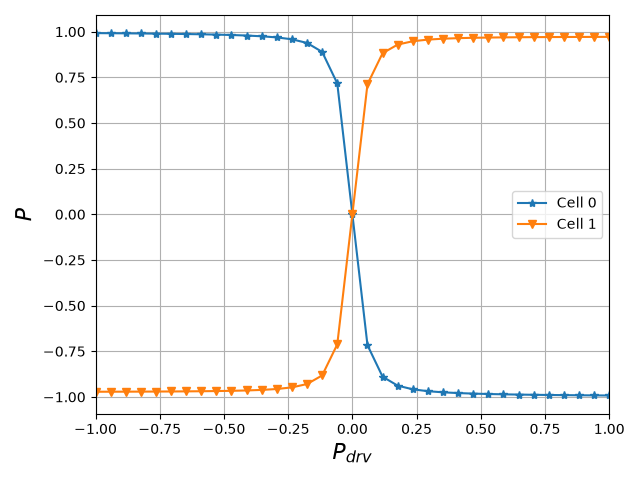
Figure 28: The polarizations of cells 0 and 1 in the driven ground state of a two-cell wire.
Exercise 5.11
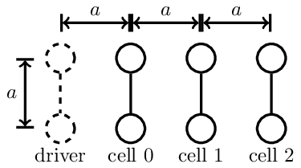
Consider a three-cell circuit (i.e., \(N=3\)) as in Figure 30.Find the free Hamiltonian, \(\hat{H}_{\text{free}}\), for the circuit.
Show/hide solution...
As before,only cell 0 is biased by the driver, so we have
\begin{equation} \hat{H}_{0}=\left[\begin{array}{cc} -\frac{\Delta}{2} & -\gamma\\ -\gamma & \frac{\Delta}{2} \end{array}\right]. \end{equation}The Hamiltonians for cell 1 and cell 2 are of the same form, given by Equation \eqref{orgf871b75}:
\begin{equation} \hat{H}_{1},\hat{H}_{2}=\left[\begin{array}{cc} 0 & -\gamma\\ -\gamma & 0 \end{array}\right] \end{equation}We may explicitly expand the individual Hamiltonian operators into the full Hilbert space and sum them:
\begin{equation} \hat{H}_{\text{free}}=\mathbf{1}\otimes\mathbf{1}\otimes\hat{H}_{0}+\mathbf{1}\otimes\hat{H}_{1}\otimes\mathbf{1}+\hat{H}_{2}\otimes\mathbf{1}\otimes\mathbf{1}. \end{equation}More concisely, we will write this as
\begin{equation} \hat{H}_{\text{int}}=\hat{H}_{0}+\hat{H}_{1}+\hat{H}_{2}, \end{equation}with the expansion into the full three-cell Hilbert space left implicit. We will not bother writing the matrix representation for \(\hat{H}_{\text{free}}\), since this is a \(8\times8\) matrix (tedious).
Find the the interaction term, \(\hat{H}_{\text{int}}\).
Show/hide solution...
To find theinteraction Hamiltonian, we can include only nearest-neighbor interactions, i.e., those of the form \(-\left(E_{k}/2\right)\hat{\sigma}_{z}^{\left(k+1\right)}\otimes\hat{\sigma}_{z}^{\left(k\right)}\). We could write this as a sum:
\begin{equation} \hat{H}_{\text{int}}=-\frac{E_{k}}{2}\sum_{k=0}^{N-1}\hat{\sigma}_{z}^{\left(k+1\right)}\otimes\hat{\sigma}_{z}^{\left(k\right)}=-\frac{E_{k}}{2}\left(\hat{\sigma}_{z}^{\left(1\right)}\otimes\hat{\sigma}_{z}^{\left(0\right)}+\hat{\sigma}_{z}^{\left(2\right)}\otimes\hat{\sigma}_{z}^{\left(1\right)}\right), \end{equation}where, if we wish to explicitly show the expansion into the full Hilbert space, we would write
\begin{equation} \hat{H}_{\text{int}}=-\frac{E_{k}}{2}\left(\mathbf{1}\otimes\hat{\sigma}_{z}\otimes\hat{\sigma}_{z}+\hat{\sigma}_{z}\otimes\hat{\sigma}_{z}\otimes\mathbf{1}\right). \end{equation}Here, I have neglected to write the superscript Hilbert space labels, since the order of the tensor product makes it clear which cells are being treated in each interaction term.
Exercise 5.12 Find the ground state of the three-cell system from Figure 30 under the simplifications \(\Delta\rightarrow0\) and \(\gamma\rightarrow0\), but now with each cell experiencing internal bias \(\Delta_{0}\) and external bias, \(\Delta_{e}\). For now, let us combine the internal and external bias as
\begin{equation} \Delta=\Delta_{o}+\Delta_{e}. \end{equation}This will make our calculations simpler. When we want to explore the competition between \(\Delta_{o}\) and \(\Delta_{e}\), we can add that level of granularity and complexity.
Show/hide solution...
Now, both cells have the same Hamiltonian form:
\begin{equation} \hat{H}_{0}=\hat{H}_{1}=\hat{H}_{2}=-\gamma\hat{\sigma}_{x}+\frac{\Delta}{2}\hat{\sigma}_{z} \end{equation}The free Hamiltonian in the limit of \(\gamma=0\) is
\begin{equation} \begin{aligned} \hat{H}_{\text{free}} & =\hat{H}_{2}\otimes\hat{1}_{1}\otimes\hat{1}_{0}+\hat{1}_{2}\otimes\hat{H}_{1}\otimes\hat{1}_{0}+\hat{1}_{2}\otimes\hat{1}_{1}\otimes\hat{H}_{0}\\ & =\left[\begin{array}{cccccccc} -\frac{3\Delta}{2}\\ & -\frac{\Delta}{2}\\ & & -\frac{\Delta}{2}\\ & & & \frac{\Delta}{2}\\ & & & & -\frac{\Delta}{2}\\ & & & & & \frac{\Delta}{2}\\ & & & & & & \frac{\Delta}{2}\\ & & & & & & & \frac{3\Delta}{2} \end{array}\right] \end{aligned} \end{equation}The energy of the isolated cells simply decreases by \(\Delta/2\) for each cell in the "0" state and increase by \(\Delta/2\) for each cell in the "1" state. Below is a table to visualize this principle:
| State | Contribution | Total |
|---|---|---|
| 000 | \(-\frac{\Delta}{2}+-\frac{\Delta}{2}+-\frac{\Delta}{2}\) | \(-\frac{3\Delta}{2}\) |
| 001 | \(-\frac{\Delta}{2}+-\frac{\Delta}{2}+\frac{\Delta}{2}\) | \(-\frac{\Delta}{2}\) |
| 010 | \(-\frac{\Delta}{2}+\frac{\Delta}{2}+-\frac{\Delta}{2}\) | \(-\frac{\Delta}{2}\) |
| 011 | … | … |
The interaction term,
\begin{equation} \hat{H}_{\text{int}}=-\frac{E_{k}}{2}\hat{\sigma}_{z}^{(2)}\otimes\hat{\sigma}_{z}^{(1)}\otimes\hat{1}_{0}-\frac{E_{k}}{2}\hat{1}_{2}\otimes\hat{\sigma}_{z}^{(1)}\otimes\hat{\sigma}_{z}^{(0)} \end{equation}contributes \(E_{k}/2\) for each kink and \(-E_{k}/2\) for each antialignment:
\begin{equation} \hat{H}_{\text{int}}=\left[\begin{array}{cccccccc} E_{k}\\ & 0\\ & & -E_{k}\\ & & & 0\\ & & & & 0\\ & & & & & -E_{k}\\ & & & & & & 0\\ & & & & & & & E_{k} \end{array}\right] \end{equation}Thus, the total Hamiltonian is
\begin{equation} \hat{H}=\hat{H}_{\text{free}}+\hat{H}_{\text{int}}=\left[\begin{array}{cccccccc} -\frac{3\Delta}{2}+E_{k}\\ & -\frac{\Delta}{2}\\ & & -\frac{\Delta}{2}-E_{k}\\ & & & \frac{\Delta}{2}\\ & & & & -\frac{\Delta}{2}\\ & & & & & \frac{\Delta}{2}-E_{k}\\ & & & & & & \frac{\Delta}{2}\\ & & & & & & & \frac{3\Delta}{2}+E_{k} \end{array}\right] \end{equation}Thus, when \(\Delta\) is small, we expect the ground state to be
\begin{equation} \frac{1}{2}\left(\ket{010}+\ket{101}\right), \end{equation}which makes sense: the cells tend to antialign.
When \(\Delta>0\) is non-zero, \(\ket{010}\) remains the lowest state as long as \(\Delta\) is small. There may come a time when state \(\ket{000}\) with energy \(-3\Delta/2+E_{k}\) is lower than \(-\Delta/2-E_{k}\):
\begin{equation} -\frac{3\Delta}{2}+E_{k}<-\frac{\Delta}{2}-E_{k}, \end{equation}which leads us to
\begin{equation} -\frac{\Delta}{2}<-E_{k}\qquad\rightarrow\qquad\Delta>2E_{k}. \end{equation}5.5. Time Evolution of a Composite System (Quantum Mechanics)
5.5.1. Product Initial State
- Let systems \(A\) and \(B\), of Hilbert spaces \(\mathcal{H}_{A}\) and \(\mathcal{H}_{B}\), respectively, have initial states \(\ket{\psi_{A}}\) and \(\ket{\psi_{B}}\)
- We can form a product initial state, \(\ket{\Psi\left(0\right)}=\ket{\psi_{B}}\ket{\psi_{A}}\)
The time dependent state \(\ket{\Psi\left(t\right)}\) will be
\begin{equation} \ket{\Psi\left(t\right)}=\hat{U}\left(t\right)\ket{\Psi\left(0\right)}. \end{equation}- The composite system undergoes unitary dynamics, and \(\hat{\rho}\left(t\right)\) remains pure
- The subsystems \(A\) and \(B\) do not undergo unitary dynamics.
Generally:
- although initially pure, \(A\) and \(B\), do not remain pure
- \(A\) and \(B\) become entangled in time
- there does not exist \(\ket{\psi_{A}\left(t\right)}\) and \(\ket{\psi_{B}\left(t\right)}\) such that \(\ket{\Psi\left(t\right)}=\ket{\psi_{B}\left(t\right)}\ket{\psi_{A}\left(t\right)}\)
Let \(A\) and \(B\) have an orthonormal bases \(\left\{ \ket{a}\right\}\) and \(\left\{ \ket{b}\right\}\), respectively:
\begin{equation} \ket{\psi_{A}}=\sum_{a}\alpha_{a}\ket{a}\qquad\text{and}\qquad\ket{\psi_{B}}=\sum_{b}\beta_{b}\ket{b} \end{equation}Then we can write the product state \(\ket{\Psi}\) as:
\begin{equation} \label{org897f54d} \ket{\Psi}=\sum_{b,a}\beta_{b}\alpha_{a}\ket{b}\ket{a} \end{equation}and
\begin{equation} \hat{\rho}\left(0\right)=\Ket{\Psi}\Bra{\Psi}=\sum_{b,b^{\prime},a,a^{\prime}}\beta_{b}\alpha_{a}\beta_{b^{\prime}}^{\ast}\alpha_{a^{\prime}}^{\ast}\ket{b}\ket{a}\bra{a^{\prime}}\bra{b^{\prime}} \end{equation}At some \(t>0\), we have
\begin{equation} \hat{\rho}\left(t\right)=\sum_{b,b^{\prime},a,a^{\prime}}\rho_{c,c^{\prime}}\beta_{b}\left(t\right)\alpha_{a}\left(t\right)\beta_{b^{\prime}}^{\ast}\left(t\right)\alpha_{a^{\prime}}^{\ast}\left(t\right)\ket{b}\ket{a}\bra{a^{\prime}}\bra{b^{\prime}} \end{equation}with
\begin{equation} \alpha_{a}\left(0\right)=\alpha_{a}\qquad\text{and}\qquad \end{equation}- Although \(\ket{\psi_{A}\left(t\right)}\) does not exist, the best
possible local description of system \(A\) we can obtain is its
reduced density operator, \(\hat{\rho}_{A}^{\left(\text{r}\right)}\)
\(\hat{\rho}_{A}^{\left(\text{r}\right)}\) is obtained by taking the partial trace of the full density operator \(\hat{\rho}\) over an orthonormal basis, \(\left\{ \ket{b}\right\}\) of \(B\):
\begin{equation} \begin{aligned} \hat{\rho}_{A}^{\left(\text{r}\right)}\left(t\right) & =\text{Tr}_{B}\hat{\rho}\left(t\right)=\sum_{b^{\prime\prime}}\braket{b^{\prime\prime}|\hat{\rho}\left(t\right)|b^{\prime\prime}}\\ & =\sum_{b,b^{\prime},b^{\prime\prime},a,a^{\prime}}\beta_{b}\left(t\right)\alpha_{a}\left(t\right)\beta_{b^{\prime}}\left(t\right)\alpha_{a^{\prime}}\left(t\right)\braket{b^{\prime\prime}|b}\ket{a}\bra{a^{\prime}}\braket{b^{\prime}|b^{\prime\prime}}\\ & =\sum_{b,a,a^{\prime}}\beta_{b}\left(t\right)\alpha_{a}\left(t\right)\beta_{b}^{\ast}\left(t\right)\alpha_{a^{\prime}}^{\ast}\left(t\right)\ket{a}\bra{a^{\prime}}\\ & =\sum_{b,a,a^{\prime}}\left|\beta_{b}\left(t\right)\right|^{2}\alpha_{a}\left(t\right)\alpha_{a^{\prime}}^{\ast}\left(t\right)\ket{a}\bra{a^{\prime}} \end{aligned} \end{equation}- Observations
- While \(\hat{\rho}\) acts on the Hilbert space \(\mathcal{H}_{AB}\), \(\hat{\rho}_{A}^{\left(\text{r}\right)}\) acts only on \(\mathcal{H}_{A}\)
- Some information about system \(A\) and all information about
\(B\) is discarded
- Only \(\left|\beta_{b}\left(t\right)\right|^{2}\) is present in \(\hat{\rho}_{A}^{\left(\text{r}\right)}\), not \(\beta_{b}\beta_{b^{\prime}}^{\ast}\).
Similarly, we can obtain the best possible local description of \(B\) by tracing over the basis \(\left\{ \ket{a}\right\}\):
\begin{equation} \begin{aligned} \hat{\rho}_{B}^{\left(\text{r}\right)}\left(t\right) & =\text{Tr}_{B}\hat{\rho}\left(t\right)=\sum_{a^{\prime\prime}}\braket{a^{\prime\prime}|\hat{\rho}\left(t\right)|a^{\prime\prime}}\\ & =\sum_{a,b,b^{\prime}}\left|\alpha_{a}\left(t\right)\right|^{2}\beta_{b}\left(t\right)\beta_{b^{\prime}}^{\ast}\left(t\right)\ket{b}\bra{b^{\prime}} \end{aligned} \end{equation}- Observations
- \(\hat{\rho}_{B}\) acts only on \(\mathcal{H}_{B}\)
- Some information about \(B\) and all information about \(A\) is discarded
- Observations
In general, we cannot reconstruct \(\hat{\rho}\left(t\right)\) from \(\hat{\rho}_{A}^{\text{(r)}}\left(t\right)\) and \(\hat{\rho}_{B}^{\text{(r)}}\left(t\right)\), because we have discarded some information already:
\begin{equation} \hat{\rho}\left(t\right)\neq\hat{\rho}_{B}^{\text{(r)}}\left(t\right)\otimes\hat{\rho}_{A}^{\text{(r)}}\left(t\right) \end{equation}- In the special case that \(\hat{\rho}\left(t\right)\) is a product:
- \(\hat{\rho}\left(t\right)=\hat{\rho}_{B}\left(t\right)\otimes\hat{\rho}_{A}\left(t\right)\)
- \(\hat{\rho}_{B}^{\text{(r)}}\left(t\right)=\hat{\rho}_{B}\left(t\right)\) and \(\hat{\rho}_{A}^{\text{(r)}}\left(t\right)=\hat{\rho}_{A}\left(t\right)\)
- \(\hat{\rho}\left(t\right)=\hat{\rho}_{B}^{\text{(r)}}\left(t\right)\otimes\hat{\rho}_{A}^{\text{(r)}}\left(t\right)\)
- In the special case that \(\hat{\rho}\left(t\right)\) is a product:
- From now on, we'll drop the superscript \(\left(\text{r}\right)\) for simplicity.
Exercise 5.13 Consider the general two-qubit state for qubits labeled \(B\) and \(A\):
\begin{equation} \ket{\Psi}=c_{00}\ket{00}+c_{01}\ket{01}+c_{10}\ket{10}+c_{11}\ket{11}, \end{equation}where \(\ket{\beta\alpha}=\ket{\beta_{B}}\ket{\alpha_{A}}\).
Find the matrix representation \(\tilde{\rho}\) for the density operator \(\hat{\rho}\).
Show/hide solution...
In braketnotation, we have
\begin{equation} \hat{\rho}=\sum_{\beta\alpha,\beta^{\prime}\alpha^{\prime}}c_{\beta\alpha}c_{\beta^{\prime}\alpha^{\prime}}^{\ast}\ket{\beta_{B}}\ket{\alpha_{A}}\bra{\alpha_{A}}\bra{\beta_{B}} \end{equation}Start with the vectors for \(\ket{\Psi}\) and \(\Bra{\Psi}\):
\begin{equation} \ket{\Psi}\leftrightarrow\tilde{\Psi}=\left[\begin{array}{c} c_{00}\\ c_{01}\\ c_{10}\\ c_{11} \end{array}\right]\qquad\text{and}\qquad\bra{\Psi}\leftrightarrow\tilde{\Psi}^{\dagger}=\left[\begin{array}{cccc} c_{00}^{\ast} & c_{01}^{\ast} & c_{10}^{\ast} & c_{11}^{\ast}\end{array}\right] \end{equation}Then, use matrix multiplication to find \(\tilde{\rho}\):
\begin{equation} \hat{\rho}=\ket{\Psi}\bra{\Psi}\leftrightarrow\tilde{\rho}=\left[\begin{array}{cccc} c_{00}c_{00}^{\ast} & c_{00}c_{01}^{\ast} & c_{00}c_{10}^{\ast} & c_{00}c_{11}^{\ast}\\ c_{01}c_{00}^{\ast} & c_{01}c_{01}^{\ast} & c_{01}c_{10}^{\ast} & c_{01}c_{11}^{\ast}\\ c_{10}c_{00}^{\ast} & c_{10}c_{01}^{\ast} & c_{10}c_{10}^{\ast} & c_{10}c_{11}^{\ast}\\ c_{11}c_{00}^{\ast} & c_{11}c_{01}^{\ast} & c_{11}c_{10}^{\ast} & c_{11}c_{11}^{\ast} \end{array}\right] \end{equation}Find the reduced density operators \(\hat{\rho}_{A}\) and \(\hat{\rho}_{B}\).
Show/hide solution...
Start with\(\hat{\rho}_{A}\):
\begin{equation} \hat{\rho}_{A}=\text{Tr}_{B}\;\hat{\rho}=\sum_{\beta}\braket{\beta_{B}|\hat{\rho}|\beta_{B}}=\braket{0_{B}|\hat{\rho}|0_{B}}+\braket{1_{B}|\hat{\rho}|1_{B}} \end{equation}What are \(\braket{0_{B}|\hat{\rho}|0_{B}}\) and \(\braket{1_{B}|\hat{\rho}|1_{B}}\) in a matrix representation? \(\braket{0_{B}|\hat{\rho}|0_{B}}\) selects only those elements in \(\hat{\rho}\) where \(c_{\beta\alpha}=c_{0\alpha}\) and \(c_{\beta\alpha}^{\ast}=c_{0\alpha}^{\ast}\). Thus:
\begin{equation} \braket{0_{B}|\hat{\rho}|0_{B}}\leftrightarrow\left[\begin{array}{cc} c_{00}c_{00}^{\ast} & c_{00}c_{01}^{\ast}\\ c_{01}c_{00}^{\ast} & c_{01}c_{01}^{\ast} \end{array}\right]\qquad\text{and}\qquad\braket{1_{B}|\hat{\rho}|1_{B}}\leftrightarrow\left[\begin{array}{cc} c_{10}c_{10}^{\ast} & c_{10}c_{11}^{\ast}\\ c_{11}c_{10}^{\ast} & c_{11}c_{11}^{\ast} \end{array}\right] \end{equation} \begin{equation} \tilde{\rho}_{A}=\left[\begin{array}{cc} c_{00}c_{00}^{\ast}+c_{10}c_{10}^{\ast} & c_{00}c_{01}^{\ast}+c_{10}c_{11}^{\ast}\\ c_{01}c_{00}^{\ast}+c_{11}c_{10}^{\ast} & c_{01}c_{01}^{\ast}+c_{11}c_{11}^{\ast} \end{array}\right] \end{equation}Now, calculate \(\hat{\rho}_{B}\):
\begin{equation} \hat{\rho}_{B}=\text{Tr}_{A}\;\hat{\rho}=\sum_{\alpha}\braket{\alpha_{A}|\hat{\rho}|\alpha_{A}}=\braket{0_{A}|\hat{\rho}|0_{A}}+\braket{1_{A}|\hat{\rho}|1_{A}} \end{equation} \begin{equation} \braket{0_{A}|\hat{\rho}|0_{A}}\leftrightarrow\left[\begin{array}{cc} c_{00}c_{00}^{\ast} & c_{00}c_{10}^{\ast}\\ c_{10}c_{00}^{\ast} & c_{10}c_{10}^{\ast} \end{array}\right]\qquad\text{and}\qquad\braket{1_{A}|\hat{\rho}|1_{A}}\leftrightarrow\left[\begin{array}{cc} c_{01}c_{01}^{\ast} & c_{01}c_{11}^{\ast}\\ c_{11}c_{01}^{\ast} & c_{11}c_{11}^{\ast} \end{array}\right] \end{equation}and \[\tilde{\rho}_{B}=\left[\begin{array}{cc} c_{00}c_{00}^{\ast}+c_{01}c_{01}^{\ast} & c_{00}c_{10}^{\ast}+c_{01}c_{11}^{\ast}\\ c_{10}c_{00}^{\ast}+c_{11}c_{01}^{\ast} & c_{01}c_{10}^{\ast}+c_{11}c_{11}^{\ast} \end{array}\right]\] #+html: </details>
5.6. Measuring Entanglement
- The von Neumann entropy is an important measure of entanglement in a
quantum system
- The von Neumann entropy, \(S_{V}\), of a quantum system can be calculated from its density matrix
- For a quantum system that is disentangled from the rest of the universe, \(S_{V}=0\)
- For a quantum system that is disentangled from the rest of the universe, \(S_{V}>0\)
- In order to understand von Neumann entropy, we first understand Shannon entropy
5.6.1. Shannon Entropy
The Shannon entropy, \(S_{S}\), for a syststem is a measure of uncertainty in the system, and it is defined as
\begin{equation} \label{org99ccc14} S_{S}=-\sum_{x}p(x)\log_{10}\left(p(x)\right), \end{equation}where the sum is over all the possible outcomes \(x\), and \(p\left(x\right)\) is the probability of outcome \(x\)
Exercise 5.14 Suppose we had rigged a coin toss, and we knew that there is a 100% probability of getting "heads" (1), and 0% chance of getting "tails" (0)
\begin{equation} p\left(0\right)=0\qquad\text{and}\qquad p\left(1\right)=1 \end{equation}Find the Shannon entropy of this system.
Show/hide solution...
The Shannon entropy for this example is
\begin{equation} S_{s}=-0\cdot\log_{10}\left(p(0)\right)-1\cdot\log_{10}\left(p(1)\right)=0. \end{equation}- In the above example, we have zero entropy. This means we have:
- zero uncertainty about the outcome, and
- complete knowledge about the outcome of the system
Exercise 5.15 Suppose we have a fair coin toss, and the outcome is completely random: there is a 50% probability of getting "heads" (1), and a 50% chance of getting "tails" (0)
\begin{equation} p\left(0\right)=p\left(1\right)=0.5 \end{equation}Find the Shannon entropy of this system.
Show/hide solution...
The Shannon entropy for this example is
\begin{equation} \begin{aligned} S_{s} & =-p(0)\log_{10}\left(p(0)\right)-p(1)\cdot\log_{10}\left(p(1)\right)=-\frac{1}{2}\log_{10}\left(\frac{1}{2}\right)-\frac{1}{2}\cdot\log_{10}\left(\frac{1}{2}\right)\\ & =-0.301 \end{aligned} \end{equation}In computing and quantum computing, it may be desirable to measure entropy as an uncertainty in bits. Thus, we use
\begin{equation} \label{orge8582ff} S_{S}=-\sum_{x}p(x)\log_{2}\left(p(x)\right), \end{equation}
Exercise 5.16 Repeat Exercise 5.15, but this time, calculate entropy in bits.
Show/hide solution...
The Shannon entropy for this example is
\begin{equation} \begin{aligned} S_{s} & =-p(0)\log_{2}\left(p(0)\right)-p(1)\cdot\log_{2}\left(p(1)\right)=-\frac{1}{2}\log_{2}\left(\frac{1}{2}\right)-\frac{1}{2}\cdot\log_{2}\left(\frac{1}{2}\right)\\ & =-\log_{2}\left(\frac{1}{2}\right)=-\left(-1\right)=1 \end{aligned} \end{equation}For the fair coin toss, we have one bit of entropy. That is, we lack one bit of information about the outcome of the measurement.
They Python
scipypackage provides anentropy()functionimport scipy import numpy as np riggedCoin = np.array([0, 1]) fairCoin = np.array([0.5, 0.5]) # Calculate entropies Srigged = scipy.stats.entropy( riggedCoin, base=2 ) Sfair = scipy.stats.entropy( fairCoin, base=2 ) print(f'Entropy, rigged coin: {Srigged}') print(f'Entropy, fair coin: {Sfair}')Entropy, rigged coin: 0.0 Entropy, fair coin: 1.0
5.6.2. von Neumann Entropy
- The von Neumann entropy of system \(X\), \(S_{VN}\), is the
information about \(X\) missing locally from \(X\)
- If \(S_{X}=0\), then \(\hat{\rho}_{X}\) is pure (not entangled with any other system)
- If \(S_{X}>0\), then \(X\) is entangled with another system
The von Neumann entropy of a system with density matrix \(\rho\) is
\begin{equation} S_{VN}=-\text{Tr}\;\left(\rho\;\text{\ensuremath{\ln}\ensuremath{\rho}}\right), \end{equation}where \(\ln\rho\) denotes the matrix natural logarithm of \(\rho\), and \(\text{Tr}\) denotes the trace
If the density matrix is written in a basis of measurement eigenvectors \(\left\{ \ket{i}\right\}\) , \(\rho=\sum_{ij}\rho_{ij}\ket{i}\bra{j}\), then the von Neumann entropy may be calculated from the diagonal elements, \(\rho_{ii},\)which are probabilities:
\begin{equation} S_{VN}=-\sum_{i}\rho_{ii}\ln\rho_{ii} \end{equation}- We can see that the von Neumann entropy is nothing more than the Shannon entropy applied to the diagonal of the density matrix
Exercise 5.17 Consider the two-qubit state for qubits 1 and 0:
\begin{equation} \ket{\psi}=\ket{0}\otimes\ket{1} \end{equation}Discuss whether \(\ket{\psi}\) is entangled.
Show/hide solution...
Since\(\ket{\psi}\) can be factored into \(\ket{0}\otimes\ket{1}\), we can say this is a product state, not an entangled state.
Find the density operator \(\rho\) for the composite two-qubit system.
Show/hide solution...
We can write\(\ket{\psi}\) as \(\ket{01}=\ket{1_{2}}\). Thus, we can write its density matrix as \(\rho=\ket{\psi}\bra{\psi}=\ket{1_{2}}\bra{1_{2}}\). As a matrix, this is
\begin{equation} \ket{\psi}=\ket{1_{2}}\leftrightarrow\left[\begin{array}{c} 0\\ 1\\ 0\\ 0 \end{array}\right]\qquad\rightarrow\qquad\rho=\left[\begin{array}{cccc} 0 & 1 & 0 & 0\end{array}\right]\left[\begin{array}{c} 0\\ 1\\ 0\\ 0 \end{array}\right]=\left[\begin{array}{cccc} 0 & 0 & 0 & 0\\ 0 & 1 & 0 & 0\\ 0 & 0 & 0 & 0\\ 0 & 0 & 0 & 0 \end{array}\right] \end{equation}Find the reduced density operators, \(\rho_{1}\) and \(\rho_{0}\) for qubits 1 and 0, respectively.
Show/hide solution...
Followingthe result of Exercise 5.13, we can write
\begin{equation} \begin{aligned} \rho_{0} & =\Braket{0_{1}|\rho|0_{1}}+\Braket{1_{1}|\rho|1_{1}}\\ & =\left[\begin{array}{cc} 0 & 0\\ 0 & 1 \end{array}\right]+\left[\begin{array}{cc} 0 & 0\\ 0 & 0 \end{array}\right]=\left[\begin{array}{cc} 0 & 0\\ 0 & 1 \end{array}\right] \end{aligned} \end{equation}and \[\begin{aligned} \rho_{1} & =\Braket{0_{0}|\rho|0_{0}}+\Braket{1_{0}|\rho|1_{0}}\\ & =\left[\begin{array}{cc} 0 & 0\\ 0 & 0 \end{array}\right]+\left[\begin{array}{cc} 1 & 0\\ 0 & 0 \end{array}\right]=\left[\begin{array}{cc} 1 & 0\\ 0 & 0 \end{array}\right] \end{aligned}\] #+html: </details>
Calculate the entropy of the density operators, \(\rho_{1}\) and \(\rho_{0}\).
Show/hide solution...
We can seethat the von Neumann entropy for either density matrix is zero. They are disentangled from one another.
Exercise 5.18 Consider the two-qubit state for qubits 1 and 0:
\begin{equation} \ket{\psi}=\frac{1}{2}\left(\ket{0}\ket{0}+\ket{1}\ket{1}\right) \end{equation}Discuss whether \(\ket{\psi}\) is entangled..
Show/hide solution...
Since\(\ket{\psi}\) cannot be factored into \(\ket{0}\otimes\ket{1}\), we can recognize that this is not a product state, but rather an entangled state.
Find the density operator \(\rho\) for the composite two-qubit system.
Show/hide solution...
We can write\(\ket{\psi}\) as \(\ket{01}=\ket{1_{2}}\). Thus, we can write its density matrix as \(\rho=\ket{\psi}\bra{\psi}=\ket{1_{2}}\bra{1_{2}}\). As a matrix, this is
\begin{equation} \ket{\psi}\leftrightarrow\frac{1}{\sqrt{2}}\left[\begin{array}{c} 1\\ 0\\ 0\\ 1 \end{array}\right]\qquad\rightarrow\qquad\rho=\frac{1}{2}\left[\begin{array}{cccc} 1 & 0 & 0 & 1\end{array}\right]\left[\begin{array}{c} 1\\ 0\\ 0\\ 1 \end{array}\right]=\frac{1}{2}\left[\begin{array}{cccc} 1 & 0 & 0 & 1\\ 0 & 0 & 0 & 0\\ 0 & 0 & 0 & 0\\ 1 & 0 & 0 & 1 \end{array}\right] \end{equation}Find the reduced density operators, \(\rho_{1}\) and \(\rho_{0}\) for qubits 1 and 0, respectively.
Show/hide solution...
Followingthe result of Exercise 5.13, we can write
\begin{equation} \begin{aligned} \rho_{0} & =\Braket{0_{1}|\rho|0_{1}}+\Braket{1_{1}|\rho|1_{1}}\\ & =\frac{1}{2}\left[\begin{array}{cc} 1 & 0\\ 0 & 0 \end{array}\right]+\frac{1}{2}\left[\begin{array}{cc} 0 & 0\\ 0 & 1 \end{array}\right]=\frac{1}{2}\left[\begin{array}{cc} 1 & 0\\ 0 & 1 \end{array}\right] \end{aligned} \end{equation}and \[\begin{aligned} \rho_{1} & =\Braket{0_{0}|\rho|0_{0}}+\Braket{1_{0}|\rho|1_{0}}\\ & =\frac{1}{2}\left[\begin{array}{cc} 0 & 0\\ 0 & 1 \end{array}\right]+\frac{1}{2}\left[\begin{array}{cc} 1 & 0\\ 0 & 0 \end{array}\right]=\frac{1}{2}\left[\begin{array}{cc} 1 & 0\\ 0 & 1 \end{array}\right] \end{aligned}\] #+html: </details>
Calculate the entropy of the density operators, \(\rho_{1}\) and \(\rho_{0}\).
Show/hide solution...
We can seethat the entropy for each density matrix \(\rho_{1}\) and \(\rho_{0}\) is one bit in each case. Why? In each case the probability is \(1/2\). For each density matrix, we have
\begin{equation} S=-\sum_{b}p_{b}\ln_{2}\left(p_{b}\right)=-\left(\frac{1}{2}\ln_{2}\left(\frac{1}{2}\right)+\frac{1}{2}\ln_{2}\left(\frac{1}{2}\right)\right)=1\;\text{bit} \end{equation}
- Since we are focusing on quantum mechanics and quantum computing, we will simply work with \(S_{VN}\), and we drop the subscript so we can just write \(S\)
Exercise 5.19 Write and test a function to calculate the entropy of a density matrix.
Show/hide solution...
import scipy
import numpy as np
def entropy_von_neumann( rho ):
'''Calculates the von Neumann entropy for a density
operator (matrix).
Args:
rho: an numpy.ndarray representing a density matrix.
Returns:
The entropy of the density matrix.
'''
return scipy.stats.entropy( np.diag( rho.real ) )
def dag( qobj ):
'''Calculates the Hermitian adjoint of a quantum object
(vector or operator).
Args:
qobj: an numpy.ndarray representing a operator, bra,
or ket.
Returns:
The Hermitian adjoint of qobj.
'''
return np.conj( qobj.transpose() )
def density_matrix( psi ):
'''Calculates the density matrix rho for state psi.
Args:
psi: an numpy.ndarray representing a ket.
Returns:
The density matrix rho.
'''
return psi @ dag( psi )
def bipartite_traceout( rho, dX, dY, verbose=False ):
"""
BipartiteTraceout returns the reduced density matrix of the two
components in a bipartite system XY
rho_r_X, rho_r_Y = BipartiteTraceout( rho, dX, dY )
INPUTS
======
rho Density matrix for the global system XY.
dX The dimension of subsystem X.
dY The dimension of subsystem Y.
Assume that the global system is initially in a product state
rho(0) = kron( rhoX(0), rhoY(0) ) ,
and that it undergoes unitary evolution under the quantum
Liouville equation:
rho(t) = U(H,t) * ( rho(0) ) * (U(H,t)') ,
where U(H, t) = expm( - ( 1i/hbar ) * H * t).
"""
rho_r_X = np.zeros([dX, dX], dtype='complex')
rho_r_Y = np.zeros([dY, dY], dtype='complex')
# Trace rho over the degrees of freedom of Y to get rho_r_X
for k in range(dY):
"""
MATLAB source:
Xaddend = rho[k:dY:k+(dX-1)*dY, k:dY:k+(dX-1)*dY]
"""
"""
Slicing ranges are: start:end:[step]
By default, step=1
"""
rho_r_X += rho[k:k+(dX-1)*dY+1:dY, k:k+(dX-1)*dY+1:dY]
# Trace rho over the degrees of freedom of X to get rho_r_Y
for k in range(dX):
"""
MATLAB source:
Yaddend = rho[dY*k-(dY-1):dY*k, dY*k-(dY-1):dY*k ]
"""
rho_r_Y += rho[dY*k:dY*(k+1), dY*k:dY*(k+1)]
return (rho_r_X, rho_r_Y)
# Form some state vectors
ket0 = np.array([[1], [0]], dtype='complex')
ket1 = np.array([[0], [1]], dtype='complex')
ket10 = np.kron( ket1, ket0 )
# Form some density operators
rho0 = density_matrix( ket0 )
rho1 = density_matrix( ket1 )
print(rho0)
print(rho1)
# Calculate entropies
S0 = entropy_von_neumann( rho0 )
S1 = entropy_von_neumann( rho1 )
print(f'S0 = {S0}; S1 = {S1}')
[[1.+0.j 0.+0.j] [0.+0.j 0.+0.j]] [[0.+0.j 0.+0.j] [0.+0.j 1.+0.j]] S0 = 0.0; S1 = 0.0
5.6.3. Quantum Mutual Information
- Another measure of entanglement is quantum mutual information
- Consider a system \(AB\) with reduced density matrices \(\hat{\rho}_{A}\) and \(\hat{\rho}_{B}\).
The quantum mutual information, \(I\), of \(AB\) is
\begin{equation} I=S_{A}+S_{B}-S_{AB} \end{equation}- This is the total information missing locally from \(A\) and \(B\), but not missing from the composite \(AB\).
- We can think of this as the information content of the entanglement between \(A\) and \(B\)
5.7. Creating Entanglement
The state
\begin{equation} \ket{\Phi^{\pm}}=\frac{1}{\sqrt{2}}\left(\ket{00}\pm\ket{11}\right) \end{equation}and the states
\begin{equation} \ket{\Psi^{\pm}}=\frac{1}{\sqrt{2}}\left(\ket{01}\pm\ket{10}\right) \end{equation}are two-qubit states of maximal entanglement.
Exercise 5.20 Design a quantum circuit to transform \(\ket{00}\) into \(\ket{\Phi^{+}}\).
Show/hide solution ...
We can use the following circuit:
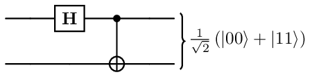
Figure 29: This circuit transforms \(\ket{00}\) into \(\ket{\Phi^{+}}\).
Show/hide code to make this figure ...
'''
This Python script creates a stand-alone LaTeX figure.
'''
from pathlib import Path
import subprocess as sp
import os
homedir = os.getcwd()
targetdir = os.path.join(homedir, 'img')
Path(targetdir).mkdir(exist_ok=True)
jobname = 'Bell-Circuit-00'
pdftex = '/Library/TeX/texbin/pdflatex'
tex_script = r"""\documentclass{standalone}
\usepackage{tikz, graphicx, braket, adjustbox}
\usetikzlibrary{quantikz2}
\usetikzlibrary{backgrounds,fit,decorations.pathreplacing,calc,positioning,patterns}
\begin{document}
\begin{quantikz}
& & \gate{ \mathbf{H} } & \ctrl{1} & & \rstick[2]{ \(\frac{1}{\sqrt{2}} \left( \ket{00} + \ket{11} \right)\)}\\
& & & \targ{} & &
\end{quantikz}
\end{document}
#end"""
os.chdir(targetdir)
# with open(filename, 'w') as f:
# f.write(tex_script)
# Form the Python command
cmdlist = [pdftex, f'-jobname={jobname}']
p = sp.Popen(cmdlist,
stdin=sp.PIPE,
stdout=sp.PIPE,
stderr=sp.PIPE,
universal_newlines=True)
# run the script
out, err = p.communicate(tex_script)
# Run imagemagick conversion from PDF to PNG
convert_script = """#This is a multiline script
source ~/.zshrc
/opt/local/bin/convert -density 180 {jobname}.pdf -quality 85 {jobname}.png
#end""".format(**locals())
conv = sp.Popen('/bin/zsh',
stdin=sp.PIPE,
stdout=sp.PIPE,
stderr=sp.PIPE,
universal_newlines=True)
# run the script
out_conv, err_conv = conv.communicate(convert_script)
if len(err_conv) > 0:
print(f'There were errors in running ImageMagick:\n{err_conv}')
# clean up
ext_list = ('log', 'aux')
for ext in ext_list:
os.remove( f'{jobname}.{ext}')
os.chdir(homedir)
Exercise 5.21 Design a quantum circuit to transform \(\ket{00}\) into \(\ket{\Phi^{-}}\).
Show/hide solution ...
We can use the following circuit:
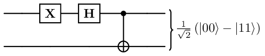
Figure 30: This circuit transforms \(\ket{00}\) into \(\ket{\Phi^{-}}\).
Show/hide code to make this figure ...
'''
This Python script creates a stand-alone LaTeX figure.
'''
from pathlib import Path
import subprocess as sp
import os
homedir = os.getcwd()
targetdir = os.path.join(homedir, 'img')
Path(targetdir).mkdir(exist_ok=True)
jobname = 'Bell-Circuit-01'
pdftex = '/Library/TeX/texbin/pdflatex'
tex_script = r"""\documentclass{standalone}
\usepackage{tikz, graphicx, braket, adjustbox}
\usetikzlibrary{quantikz2}
\usetikzlibrary{backgrounds,fit,decorations.pathreplacing,calc,positioning,patterns}
\begin{document}
\begin{quantikz}
& & \gate{ \mathbf{X} } & \gate{ \mathbf{H} } & \ctrl{1} & & \rstick[2]{ \(\frac{1}{\sqrt{2}} \left( \ket{00} - \ket{11} \right)\)}\\
& & & & \targ{} & &
\end{quantikz}
\end{document}
#end"""
os.chdir(targetdir)
# with open(filename, 'w') as f:
# f.write(tex_script)
# Form the Python command
cmdlist = [pdftex, f'-jobname={jobname}']
p = sp.Popen(cmdlist,
stdin=sp.PIPE,
stdout=sp.PIPE,
stderr=sp.PIPE,
universal_newlines=True)
# run the script
out, err = p.communicate(tex_script)
# Run imagemagick conversion from PDF to PNG
convert_script = """#This is a multiline script
source ~/.zshrc
/opt/local/bin/convert -density 180 {jobname}.pdf -quality 85 {jobname}.png
#end""".format(**locals())
conv = sp.Popen('/bin/zsh',
stdin=sp.PIPE,
stdout=sp.PIPE,
stderr=sp.PIPE,
universal_newlines=True)
# run the script
out_conv, err_conv = conv.communicate(convert_script)
if len(err_conv) > 0:
print(f'There were errors in running ImageMagick:\n{err_conv}')
# clean up
ext_list = ('log', 'aux')
for ext in ext_list:
os.remove( f'{jobname}.{ext}')
os.chdir(homedir)
Exercise 5.22 Design a quantum circuit to transform \(\ket{00}\) into \(\ket{\Psi^{+}}\).
Show/hide solution ...
We can use the following circuit:
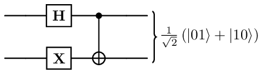
Figure 31: This circuit transforms \(\ket{00}\) into \(\ket{\Psi^{+}}\).
Show/hide code to make this figure ...
'''
This Python script creates a stand-alone LaTeX figure.
'''
from pathlib import Path
import subprocess as sp
import os
homedir = os.getcwd()
targetdir = os.path.join(homedir, 'img')
Path(targetdir).mkdir(exist_ok=True)
jobname = 'Bell-Circuit-02'
pdftex = '/Library/TeX/texbin/pdflatex'
tex_script = r"""\documentclass{standalone}
\usepackage{tikz, graphicx, braket, adjustbox}
\usetikzlibrary{quantikz2}
\usetikzlibrary{backgrounds,fit,decorations.pathreplacing,calc,positioning,patterns}
\begin{document}
\begin{quantikz}
& & \gate{ \mathbf{H} } & \ctrl{1} & & \rstick[2]{ \(\frac{1}{\sqrt{2}} \left( \ket{01} + \ket{10} \right)\)}\\
& & \gate{ \mathbf{X} } & \targ{} & &
\end{quantikz}
\end{document}
#end"""
os.chdir(targetdir)
# with open(filename, 'w') as f:
# f.write(tex_script)
# Form the Python command
cmdlist = [pdftex, f'-jobname={jobname}']
p = sp.Popen(cmdlist,
stdin=sp.PIPE,
stdout=sp.PIPE,
stderr=sp.PIPE,
universal_newlines=True)
# run the script
out, err = p.communicate(tex_script)
# Run imagemagick conversion from PDF to PNG
convert_script = """#This is a multiline script
source ~/.zshrc
/opt/local/bin/convert -density 180 {jobname}.pdf -quality 85 {jobname}.png
#end""".format(**locals())
conv = sp.Popen('/bin/zsh',
stdin=sp.PIPE,
stdout=sp.PIPE,
stderr=sp.PIPE,
universal_newlines=True)
# run the script
out_conv, err_conv = conv.communicate(convert_script)
if len(err_conv) > 0:
print(f'There were errors in running ImageMagick:\n{err_conv}')
# clean up
ext_list = ('log', 'aux')
for ext in ext_list:
os.remove( f'{jobname}.{ext}')
os.chdir(homedir)
Exercise 5.23 Design a quantum circuit to transform \(\ket{00}\) into \(\ket{\Psi^{-}}\).
Show/hide solution ...
We can use the following circuit:
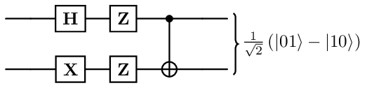
Figure 32: This circuit transforms \(\ket{00}\) into \(\ket{\Psi^{-}}\).
Show/hide code to make this figure ...
'''
This Python script creates a stand-alone LaTeX figure.
'''
from pathlib import Path
import subprocess as sp
import os
homedir = os.getcwd()
targetdir = os.path.join(homedir, 'img')
Path(targetdir).mkdir(exist_ok=True)
jobname = 'Bell-Circuit-03'
pdftex = '/Library/TeX/texbin/pdflatex'
tex_script = r"""\documentclass{standalone}
\usepackage{tikz, graphicx, braket, adjustbox}
\usetikzlibrary{quantikz2}
\usetikzlibrary{backgrounds,fit,decorations.pathreplacing,calc,positioning,patterns}
\begin{document}
\begin{quantikz}
& & \gate{ \mathbf{H} } & \gate{ \mathbf{Z} } & \ctrl{1} & & \rstick[2]{ \(\frac{1}{\sqrt{2}} \left( \ket{01} - \ket{10} \right)\)}\\
& & \gate{ \mathbf{X} } & \gate{ \mathbf{Z} } & \targ{} & &
\end{quantikz}
\end{document}
#end"""
os.chdir(targetdir)
# with open(filename, 'w') as f:
# f.write(tex_script)
# Form the Python command
cmdlist = [pdftex, f'-jobname={jobname}']
p = sp.Popen(cmdlist,
stdin=sp.PIPE,
stdout=sp.PIPE,
stderr=sp.PIPE,
universal_newlines=True)
# run the script
out, err = p.communicate(tex_script)
# Run imagemagick conversion from PDF to PNG
convert_script = """#This is a multiline script
source ~/.zshrc
/opt/local/bin/convert -density 180 {jobname}.pdf -quality 85 {jobname}.png
#end""".format(**locals())
conv = sp.Popen('/bin/zsh',
stdin=sp.PIPE,
stdout=sp.PIPE,
stderr=sp.PIPE,
universal_newlines=True)
# run the script
out_conv, err_conv = conv.communicate(convert_script)
if len(err_conv) > 0:
print(f'There were errors in running ImageMagick:\n{err_conv}')
# clean up
ext_list = ('log', 'aux')
for ext in ext_list:
os.remove( f'{jobname}.{ext}')
os.chdir(homedir)
We can verify these circuits using qiskit
import numpy as np import os from qiskit import QuantumCircuit as qckt # from qiskit.quantum_info import Operator from qcapackage.quantum import computing as qc from qcapackage.quantum import visualization as viz from qcapackage.quantum import circuittools as qct from qcapackage import mathtools as mt # computational basis states ket0, ket1 = qc.ket0, qc.ket1 from qcapackage.quantum import linearalgebra as la # go back to working directory after custom imports os.chdir(homedir) # ================================================== # Constants # ================================================== Sx, Sy, Sz = qc.Sx, qc.Sy, qc.Sz # rx, ry, rz = la.rx, la.ry, la.rz I = Sx@Sx H = (1/np.sqrt(2))*(Sx + Sz) # computational basis states ket0, ket1 = qc.ket0, qc.ket1 #State preparation ket00 = np.kron( ket0, ket0 ) # ket 00 # ================================================== # Circuits # ================================================== PhiPlusCkt = qckt(2) PhiPlusCkt.h(0) PhiPlusCkt.cx(0,1) # Convert circuit to operator, check resulting transformed ket PhiPlus = np.array( Operator( PhiPlusCkt ) ) @ ket00 PhiMinusCkt = qckt(2) PhiMinusCkt.x(0) PhiMinusCkt.h(0) PhiMinusCkt.cx(0,1) # Convert circuit to operator, check resulting transformed ket PhiMinus = np.array( Operator( PhiMinusCkt ) ) @ ket00 PsiPlusCkt = qckt(2) PsiPlusCkt.h(0) PsiPlusCkt.x(1) PsiPlusCkt.cx(0,1) PsiPlus = np.array( Operator( PsiPlusCkt ) ) @ ket00 PsiMinusCkt = qckt(2) PsiMinusCkt.h(0) PsiMinusCkt.x(1) PsiMinusCkt.z(0) PsiMinusCkt.z(1) PsiMinusCkt.cx(0,1) PsiMinus = np.array( Operator( PsiMinusCkt ) ) @ ket00 print('Phi +:') print(PhiPlus.flatten()) # print(PhiPlus_check.flatten()) print('\nPhi -:') print(PhiMinus.flatten()) print('\nPsi +:') print(PsiPlus.flatten()) print('\nPsi -:') print(PsiMinus.flatten()) os.chdir(homedir)
6. The Variational Quantum Eigensolver for a A Pair of Driven QCA Molecules Molecule
7. Time-dependent Models of Quantum Systems
7.1. The Time-dependent Schrödinger Equation
7.1.1. An Isolated QCA Cell
- Here, we consider an example of the time-dependent Schrödinger equation from Equation \eqref{org33cf856}
Exercise 7.1 Find \(\ket{\psi\left(t\right)}\) for a QCA cell prepared in state \(\ket{\psi\left(0\right)}=1\) if \(\gamma=50\;\text{meV}\) and \(\Delta=0\).
Show/hide solution ...
Assuming a constant Hamiltonian, \(\hat{H}\), e will use the solution of Equation \eqref{org21a80ba}. It can be shown that for \(\hat{H}=-\gamma\mathbf{X}\), the time evolution operator is given by
\begin{equation} \begin{aligned} \hat{U}\left(t\right) & \stackrel{\left(\ref{eq:TimeEvolutionOperator}\right)}{=}\exp\left(-i\gamma\mathbf{X}t\right)=\cos\left(\frac{\gamma}{\hbar}t\right)\mathbf{I}-i\sin\left(\frac{\gamma}{\hbar}t\right)\hat{\sigma}_{x}.\\ & =\left[\begin{array}{cc} \cos\left(\frac{\gamma}{\hbar}t\right) & -i\sin\left(\frac{\gamma}{\hbar}t\right)\\ -i\sin\left(\frac{\gamma}{\hbar}t\right) & \cos\left(\frac{\gamma}{\hbar}t\right) \end{array}\right] \end{aligned} \end{equation}Now, we can easily find \[\begin{aligned} \ket{\psi\left(t\right)} & =\hat{U}\left(t\right)\ket{\psi\left(0\right)}\\ & =\left[\begin{array}{cc} \cos\left(\frac{\gamma}{\hbar}t\right) & -i\sin\left(\frac{\gamma}{\hbar}t\right)\\ -i\sin\left(\frac{\gamma}{\hbar}t\right) & \cos\left(\frac{\gamma}{\hbar}t\right) \end{array}\right]\left[\begin{array}{c} 0\\ 1 \end{array}\right]\\ & =\left[\begin{array}{c} -i\sin\left(\frac{\gamma}{\hbar}t\right)\\ \cos\left(\frac{\gamma}{\hbar}t\right) \end{array}\right]\\ & =-i\sin\left(\frac{\gamma}{\hbar}t\right)\ket{0}+\cos\left(\frac{\gamma}{\hbar}t\right)\ket{1} \end{aligned}\] Is this reasonable? A quick check at \(t=0\) indeed confirms that \(\ket{\psi\left(0\right)}=\ket{1}\). We also note that \(\ket{\psi\left(t\right)}\) is periodic with a period, \(T_{0}\), that can be determined by setting
\begin{equation} \frac{\gamma}{\hbar}T_{0}=2\pi, \end{equation}which yields
\begin{equation} T_{0}=\frac{2\pi\hbar}{\gamma} \end{equation}At \(t=T_{0}/4=\pi\hbar/2\gamma\), we find
\begin{equation} \begin{aligned} \ket{\psi\left(\frac{\pi\hbar}{2\gamma}\right)} & =-i\sin\left(\frac{\gamma}{\hbar}\cdot\frac{\pi\hbar}{2\gamma}\right)\ket{0}+\cos\left(\frac{\gamma}{\hbar}\cdot\frac{\pi\hbar}{2\gamma}\right)\ket{1}\\ & =-i\sin\left(\frac{\pi}{2}\right)\ket{0}+\cos\left(\frac{\pi}{2}\right)\ket{1}\\ & =-i\ket{0} \end{aligned} \end{equation}We see that the system will oscillate between the computational basis states in what is called a Rabi oscillation.
Exercise 7.2 Find \(\ket{\psi\left(t\right)}\) for a QCA cell prepared in state \(\ket{\psi\left(0\right)}=\ket{0}\) if \(\gamma=50\;\text{meV}\) and \(\Delta=0\). Plot polarization as a function of time, and plot the energy as a function of time.
Show/hide solution ...
The code below calculates the time dynamics of \(\ket{\psi\left(t\right)}\) using a FOR loop. At each time step, we extract the polarization, \(-\Braket{\mathbf{Z}}\), and the total energy, \(\Braket{\hat{H}}\). The results are shown in Figure 33.
Show/hide code ...
from scipy.linalg import expm
import numpy as np
import matplotlib.pyplot as plt
import os
def dag( Q ):
'''Calculates the Hermitian adjoint of a quantum object
(vector or operator).
Args:
qobj: an numpy.ndarray representing a operator, bra,
or ket.
Returns:
The Hermitian adjoint of Q.
'''
return np.conj( Q.transpose() )
# Constants
ket0 = np.array([[1],[0]], dtype='complex');
ket1 = np.array([[0],[1]], dtype='complex');
X = np.array([[0, 1], [1, 0]], dtype='complex');
Z = np.array([[1, 0], [0, -1]], dtype='complex');
hbar = 6.582E-16 # [eV*s] Planck's constant (reduced)
# Parameters
gamma = 0.05 # [eV] tunneling energy
T = np.pi*hbar/gamma # [s] time scale
# Initial state
psi0 = ket0
nt = 75 # number of time points
t = np.linspace(0, 3*T, nt) # time vector
# Calculations
H = -gamma*X # [eV] Hamiltonian
# Storage vector
Pt = np.zeros((nt,)) # polarization in time
Et = np.zeros((nt,)) # [eV] energy in time
for tidx, tval in enumerate(t):
# Time-dependent state
psit = expm( - 1j*tval*H/hbar ) @ psi0
# calculate polarization
Pt[tidx] = -np.real( dag(psit) @ Z @ psit )[0,0]
# calculate energy expectation value
Et[tidx] = np.real( dag(psit) @ H @ psit )[0,0]
fig, ax = plt.subplots(2,1)
ax[0].plot(t/T, Pt, marker='o');
ax[0].grid(True)
ax[0].set_ylabel(r'$P$', fontsize=18)
ax[0].set_xlim(t[0]/T, t[-1]/T)
plt.tight_layout()
ax[1].plot(t/T, Et, marker='o');
ax[1].grid(True)
ax[1].set_ylabel(r'$E$', fontsize=18)
ax[1].set_xlabel(r'$t/T$', fontsize=18)
ax[1].set_xlim(t[0]/T, t[-1]/T)
plt.tight_layout()
fname = os.path.join('img', 'cell-rabi-osc.png')
plt.savefig(fname)
print(f'Saved file as {fname}')
plt.close('all')
print(f'\n[[./{fname}]]')
Saved file as img/cell-rabi-osc.png [[./img/cell-rabi-osc.png]]
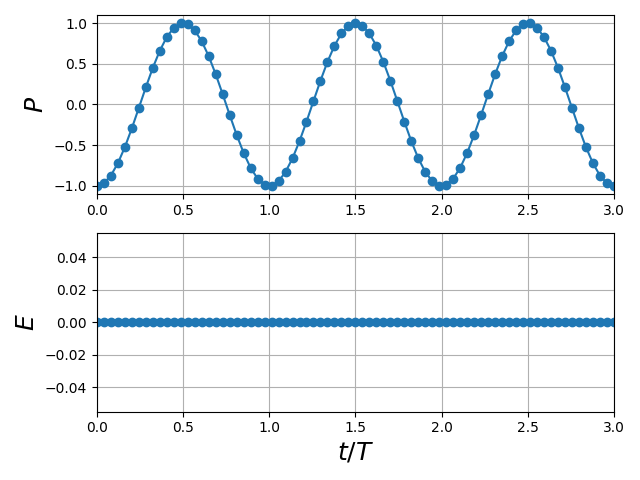
Figure 33: Oscillation of an isolated QCA cell as calculated using the code of above.
- We see the QCA cell oscillate between \(\ket{0}\) and \(\ket{1}\) with
period \(T=\pi\hbar/\gamma\)
- This oscillation is known as Rabi oscillation
- \(T\) is called the Rabi oscillation period
- This is the lower limit for electron transfer times in our QCA cell
- This provides a physically relevant time scale
- It is often useful to scale plots to a physically meaningful scale
- This helps us avoid thinking about exact numbers, but rather more physically signficant quantities
- It is often useful to scale plots to a physically meaningful scale
- We also see that total energy is conserved
- The QCA cell in isolation is a closed system: it can neither gain nor loose energy
- Why is the energy zero and not something else?
- Recall that the diagonal elements of \(\hat{H}\) are potential energies
- We can pick the zero of potential energy to be anything
- In this case, we chose \(0\) as the average energy of states \(\ket{0}\) and \(\ket{1}\) way back in Equation \eqref{org7dafb9b}, and there is no bias (\(\Delta=0\)) for the isolated cell
- Thus, both \(\ket{0}\) and \(\ket{1}\) have an energy of 0
- We started with \(E\left(0\right)=0\), and so our closed system is fixed
7.1.2. A Pair of QCA Cells
Exercise 7.3 Repeat Exercise 7.2, but this time do it for an interacting but isolated pair of QCA cells.
Show/hide solution ...
This Python script calculates the time-evolution of an unbiased, isolated pair of QCA cells. The results are shown in Figure 34.
Show/hide code ...
from scipy.linalg import expm
import numpy as np
import matplotlib.pyplot as plt
import os
def dag( Q ):
'''Calculates the Hermitian adjoint of a quantum object
(vector or operator).
Args:
qobj: an numpy.ndarray representing a operator, bra,
or ket.
Returns:
The Hermitian adjoint of Q.
'''
return np.conj( Q.transpose() )
# Constants
ket0 = np.array([[1],[0]], dtype='complex');
ket1 = np.array([[0],[1]], dtype='complex');
I = np.array([[1, 0], [0, 1]], dtype='complex');
X = np.array([[0, 1], [1, 0]], dtype='complex');
Z = np.array([[1, 0], [0, -1]], dtype='complex');
hbar = 6.582E-16 # [eV*s] Planck's constant (reduced)
# Parameters
gamma = 0.05 # [eV] tunneling energy
Ek = 0.421 # [eV] kink energy
T = np.pi*hbar/gamma # [s] time scale
# Initial state - product of states 1 and 0
psi0 = np.kron( ket0, ket1 )
nt = 125 # number of time points
t = np.linspace(0, 8*T, nt) # time vector
# Calculations
H0 = -gamma*X # [eV] Hamiltonian for cell 0
H1 = -gamma*X # [eV] Hamiltonian for cell 1
Hint = - 0.5*Ek * np.kron(Z, Z) # [eV] interaction term
# [eV] total Hamiltonian
H = np.kron(I, H0) + np.kron(H1, I) + Hint
# polarization operator for cell 0
Z0 = np.kron(I, Z)
# polarization operator for cell 1
Z1 = np.kron(Z, I)
# Storage vector
Pt = np.zeros((2,nt)) # polarization in time
Et = np.zeros((nt,)) # [eV] energy in time
for tidx, tval in enumerate(t):
# Time-dependent state
psit = expm( - 1j*tval*H/hbar ) @ psi0
# calculate polarizations
Pt[0,tidx] = -np.real( dag(psit) @ Z0 @ psit )[0,0]
Pt[1,tidx] = -np.real( dag(psit) @ Z1 @ psit )[0,0]
# calculate energy expectation value
Et[tidx] = np.real( dag(psit) @ H @ psit )[0,0]
fig, ax = plt.subplots(2,1)
ax[0].plot(t/T, Pt[0,:], marker='o', label='Cell 0');
ax[0].plot(t/T, Pt[1,:], marker='v', label='Cell 1');
ax[0].grid(True)
ax[0].set_ylabel(r'$P$', fontsize=18)
ax[0].set_xlim(t[0]/T, t[-1]/T)
plt.tight_layout()
ax[1].plot(t/T, Et/Ek, marker='o');
ax[1].grid(True)
ax[1].set_ylabel(r'$E/E_k$', fontsize=18)
ax[1].set_xlabel(r'$t/T$', fontsize=18)
ax[1].set_xlim(t[0]/T, t[-1]/T)
ax[1].set_ylim(-.25, 0.75)
plt.tight_layout()
fname = os.path.join('img', 'cell-pair-osc.png')
plt.savefig(fname)
print(f'Saved file as {fname}')
plt.close('all')
print(f'\n[[./{fname}]]')
Saved file as img/cell-pair-osc.png [[./img/cell-pair-osc.png]]
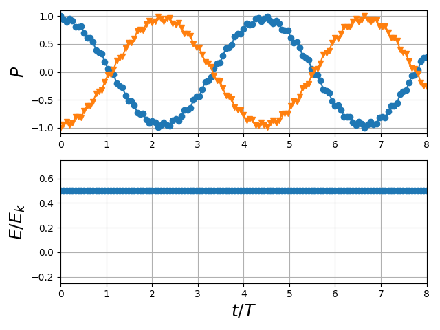
Figure 34: Oscillation of an isolated QCA cell as calculated using the code above.
7.2. The Quantum Liouville Equation
Equvialent to the time-dependent Schrödinger is the quantum Liouville equation,
\begin{equation} \label{orgedc5496} \frac{d\hat{\rho}}{dt}=-\frac{i}{\hbar}\left[\hat{H},\hat{\rho}\right], \end{equation}where \(\left[\hat{A},\hat{B}\right]\) is the commutator:
\begin{equation} \label{org953ca93} \left[\hat{A},\hat{B}\right]=\hat{A}\hat{B}-\hat{B}\hat{A} \end{equation}- Though Equation \eqref{orgedc5496} is equivalent to Equation \eqref{org33cf856} as a description of a closed quantum system, our interest in Equation \eqref{orgedc5496} lies in the fact that it may be extended to model open systems.
7.2.1. Pythonic Calculations of Quantum Liouvillian Evolution
- To solve the quantum Liouville equation in Python, we need a package that integrates solutions to not just matrix differential equations, but also complex matrix differential equations
- The
odeintwpackage provides these capabilities
Exercise 7.4 Use Python to solve the quantum Liouville equation for the dynamics of an isolated QCA cell. Plot the expectation value of energy as a function of time, as well as the cell polarization. Compare your result to dynamics calculated using the Schrödinger equation.
Show/hide solution ...
The code given below is one approach to this problem. Results are shown in Figure 35, in which we see that the quantum Liouville model produces the same result as the Schrödinger model.
Show/hide code ...
from odeintw import odeintw
import numpy as np
import scipy as sp
import matplotlib.pyplot as plt
import os
# Constants
hbar = 6.58E-16 # [eV*s] the reduced Planck constant
ket0 = np.array([[1],[0]], dtype='complex')
Sx = np.array([[0, 1],[1, 0]], dtype='complex')
Sz = np.array([[1, 0],[0, -1]], dtype='complex')
def expectation_value( op, psi ):
"""
Return the expectation value for an
operator op.
Args
psi: a state vector or a density matrix
Returns real expectation value
"""
if psi.shape[0] == psi.shape[1]: # if psi is a density matrix
result = np.trace( op @ psi ).real
else: # if psi is a vector
temp = dag( psi ) @ op @ psi
result = temp[0,0].real
return result
def dag( Q ):
'''Calculates the Hermitian adjoint of a quantum object
(vector or operator).
Args:
qobj: an numpy.ndarray representing a operator, bra,
or ket.
Returns:
The Hermitian adjoint of Q.
'''
return np.conj( Q.transpose() )
def commutator( A, B ):
"""
Evaluates the commutator of two operators.
"""
return A @ B - B @ A
def quantum_liouville(rho, t, H_constant):
"""
Implement the quantum Liouville equation for
a constant Hamiltonian
For use with the odeintw.odeintw() function
"""
drhodt = -(1j/hbar)*commutator(H_constant, rho)
return drhodt
# Parameters
nt = 75 # [] number of time steps
gamma = 0.025 # [eV] tunneling energy
# Calculations
T = np.pi*hbar/gamma # time scale
t = np.linspace(0, 4*T, nt)
H = -gamma*Sx # [eV] Hamiltonian
psi0 = ket0 # initial state - state vector
rho0 = psi0 @ dag( psi0 )
# Integrate the solution for the quantum Liouville equation
sol = odeintw(quantum_liouville, rho0, t, args=(H,) )
Pt_ode = np.zeros([nt,])
Pt_exp = np.zeros([nt,])
Et_ode = np.zeros((nt,))
Et_exp = np.zeros((nt,))
# Extract data from ode solution; also calculate Schrodinger version
for it in range(nt):
# Density matrix - extract data
Pt_ode[it] = expectation_value(-Sz, sol[it])
Et_ode[it] = expectation_value(H, sol[it])
# State vector - calculate evolution, extract data
Ut = sp.linalg.expm(-1j*t[it]*H/hbar)
psit = Ut @ psi0
Pt_exp[it] = expectation_value(-Sz, psit)
Et_exp[it] = expectation_value(H, psit)
fig, ax = plt.subplots(2,1)
ax[0].plot(t/T, Pt_exp, label='State vector', marker='v')
ax[0].plot(t/T, Pt_ode, label='Density matrix', marker='o',
linestyle='dashdot')
ax[0].set_xlim(t[0]/T, t[-1]/T)
ax[0].legend()
ax[0].grid(True)
# ax.set_xlabel(r'$t/T$', fontsize=16)
ax[0].set_ylabel(r'$P$', fontsize=16)
plt.tight_layout()
ax[1].plot(t/T, Et_exp*1E3, label='State vector', marker='v')
ax[1].plot(t/T, Et_ode*1E3, label='Density matrix', marker='o',
linestyle='dashdot')
ax[1].set_xlim(t[0]/T, t[-1]/T)
ax[1].legend()
ax[1].grid(True)
ax[1].set_xlabel(r'$t/T$', fontsize=16)
ax[1].set_ylabel(r'$E$ (meV)', fontsize=16)
plt.tight_layout()
fname = os.path.join('img', 'qca-quantLiouville-Pt.png')
plt.savefig(fname)
plt.close("all")
print(f'\n[[./{fname}]]')
[[./img/qca-quantLiouville-Pt.png]]
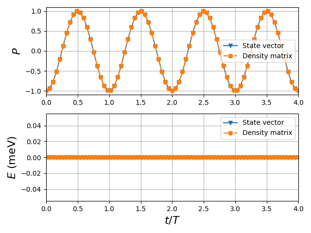
Figure 35: A state vector model matches a density operator model of the dynamics of an isolated QCA cell. The code that produced this is given in the code listing above.
8. The Quantum Harmonic Oscillator
- The quantum harmonic oscillator is an important system in quantum mechanics
The time-independent Schrödinger equation may be written as
\begin{equation} -\frac{\hbar^{2}}{2m}\frac{d^{2}\psi}{dx^{2}}+\frac{1}{2}m\omega^{2}x^{2}\psi=E\psi, \end{equation}where \(x\) is the oscillator position
In this system, we identify the Hamiltonian as
\begin{equation} \hat{H}=-\frac{\hbar^{2}}{2m}\frac{d^{2}}{dx^{2}}+\frac{1}{2}m\omega^{2}x^{2}, \end{equation}so that we can write
\begin{equation} \label{org2147cf1} \hat{H}\psi_{n}\left(x\right)=E_{n}\psi_{n}\left(x\right) \end{equation}We may also write this using Dirac's bra-ket formalism:
\begin{equation} \label{orgbe252d0} \hat{H}\ket{\psi_{n}}=E_{n}\ket{\psi_{n}} \end{equation}
It may be shown that the functions \(\psi_{n}\left(x\right)\)–called eigenfunctions of \(\hat{H}\), each with its own energy \(E_{n}\)– have energies given by
\begin{equation} E_{n}=\hbar\omega\left(n+\frac{1}{2}\right),\qquad n\geq0 \end{equation}- The eigenenergies are evenly spaced in energy
- \(E_{0}=\hbar\omega/2\) is the ground state energy associated with
\(\psi_{0}\left(x\right)\), which is known as the ground state
- The ground state is the lowest allowed energy for the quantum harmonic oscillator
- The state \(\psi_{1}\left(x\right)\) with \(E_{1}=3\hbar\omega/2\) is called the first excited state
- The state \(\psi_{2}\left(x\right)\) with \(E_{2}=5\hbar\omega/2\) is called the second excited state
- The energy spacing, \(\hbar\omega\) between states
\(\psi_{n}\left(x\right)\) and \(\psi_{n\pm1}\left(x\right)\) is
called the energy quantization
- This is a quantum of energy, also called a vibron
- In semiconductors, these quanta are called phonons
- \(E_{0}=\hbar\omega/2\) is the ground state energy associated with
\(\psi_{0}\left(x\right)\), which is known as the ground state
- There is an infinte number of eigenfunctions and eigenenergies: \(n\in\left\{ 0,1,2,\ldots\right\}\)
- The eigenenergies are evenly spaced in energy
The general quantum state of a quantum harmonic oscillator may be a superposition of eigenstates:
\begin{equation} \label{orga3ac984} \psi\left(x\right)=\sum_{n=0}^{\infty}c_{n}\psi_{n}\left(x\right) \end{equation}- Here, the eigenfunctions \(\left\{ \psi_{n}\left(x\right)\right\}\) form an infinite basis for the quantum state \(\psi\left(x\right)\)
- In practice, contributions to \(\psi\left(x\right)\) from lower values of \(n\) are most significant, and \(\left|c_{n}\right|\) for large \(n\) becomes very small
- In this expansion, we are using the energy eigenstates as a basis
for an arbitrary \(\psi\left(x\right)\)
- We refer to this as the energy basis or the Fock basis
We can define position and momentum operators,
\begin{equation} \hat{x}=x,\qquad\text{and}\qquad\hat{p}=i\hbar\frac{d}{dx} \end{equation}Thus, we can write the Hamiltonian as
\begin{equation} \hat{H}=\frac{\hat{p}^{2}}{2m}+\frac{1}{2}m\omega\hat{x}^{2} \end{equation}
We also may define creation and annihilation operators,
\begin{equation} \hat{a}^{\dagger}=\sqrt{\frac{m\omega}{2\hbar}}\left(\hat{x}+\frac{i}{m\omega}\hat{p}\right)\qquad\text{and}\qquad\hat{a}=\sqrt{\frac{m\omega}{2\hbar}}\left(\hat{x}-\frac{i}{m\omega}\hat{p}\right) \end{equation}We also can write the Hamiltonian in terms of these:
\begin{equation} \hat{H}=\hat{a}^{\dagger}\hat{a}\left(\hbar\omega+\frac{1}{2}\right) \end{equation}We can write the position and momentum operators in terms of \(\hat{a}\) and \(\hat{a}^{\dagger}\):
\begin{equation} \label{org21a42a9} \begin{aligned} \hat{x} & =\sqrt{\frac{\hbar}{2m\omega}}\left(\hat{a}^{\dagger}+\hat{a}\right),\\ \hat{p} & =\sqrt{\frac{\hbar m\omega}{2}}\left(\hat{a}^{\dagger}-\hat{a}\right) \end{aligned} \end{equation}The operator \(\hat{a}\) transforms an eigenstate \(\psi_{n}\left(x\right)\) as follows:
\begin{equation} \label{orge83ebde} \hat{a}\psi_{n}\left(x\right)=\begin{cases} \sqrt{n}\psi_{n-1}\left(x\right), & n>0\\ 0, & n=0 \end{cases} \end{equation}- \(\hat{a}\) reduces the state's energy by one vibron. In other words, it annihilates one quanta of vibration, so we call this operator the annihilation operator
The operator \(\hat{a}^{\dagger}\) transforms an eigenstate \(\psi_{n}\left(x\right)\) as follows:
\begin{equation} \label{org907e3d7} \hat{a}^{\dagger}\psi_{n}\left(x\right)=\sqrt{n+1}\psi_{n+1}\left(x\right) \end{equation}- \(\hat{a}\) increases the state's energy by one vibron. In other words, it creates one quanta of vibration, so we call this operator the creation operator
Consider the action of \(\hat{a}^{\dagger}\hat{a}\) on a state \(\psi_{n}\left(x\right)\):
\begin{equation} \label{orgbafa4c5} \hat{a}^{\dagger}\hat{a}\psi_{n}\left(x\right)=\sqrt{n}\hat{a}^{\dagger}\psi_{n-1}\left(x\right)=n\psi_{n}\left(x\right) \end{equation}- The action of \(\hat{a}^{\dagger}\hat{a}\) is to extract \(n\), the number of quanta in the state \(\psi_{n}\left(n\right)\)
Thus, we define \(\hat{a}^{\dagger}\hat{a}\) as the number operator, \(\hat{n}\):
\begin{equation} \label{orgba8f669} \hat{n}=\hat{a}^{\dagger}\hat{a} \end{equation}- The integer \(n\) is also called the occupation number, because it tells us how many quanta of vibration exist in a quantum state
8.1. Computer Modeling of the QHO
8.1.1. The Energy Basis Representation for the QHO
We start by truncating our infinite basis to a basis with \(N\) elements, \(\left\{ \psi_{0}\left(x\right),\psi_{1}\left(x\right),\ldots,\psi_{N-1}\left(x\right)\right\}\), so we have an approximation to \(\psi\left(x\right)\):
\begin{equation} \psi\left(x\right)\simeq\sum_{n=0}^{N}c_{n}\psi_{n}\left(x\right) \end{equation}Next, we assign elementary vectors to each eigenstate in our truncated basis:
\begin{equation} \psi_{0}\left(x\right)\leftrightarrow\vec{e}_{1}=\left[\begin{array}{c} 1\\ 0\\ 0\\ \vdots \end{array}\right];\quad\psi_{1}\left(x\right)\leftrightarrow\vec{e}_{2}=\left[\begin{array}{c} 0\\ 1\\ 0\\ \vdots \end{array}\right]\quad\cdots\quad\psi_{N-1}\left(x\right)\leftrightarrow\vec{e}_{N}=\left[\begin{array}{c} \vdots\\ 0\\ 0\\ 1 \end{array}\right] \end{equation}- Thus, we can write the matrix representation of the \(\hat{a}\)
operator by finding the individual columns of \(\hat{a}\) in the basis
\(\left\{ \psi_{0}\left(x\right),\psi_{1}\left(x\right),\ldots,\psi_{N-1}\left(x\right)\right\} \leftrightarrow\left\{ \vec{e}_{1},\vec{e}_{2},\ldots,\vec{e}_{N}\right\}\)
The first column of \(\hat{a}\) in the energy basis is the result of multiplying the \(\hat{a}\) operator in the energy basis by the first elementary vector:
\begin{equation} \hat{a}\ket{0}=0\leftrightarrow\hat{a}\vec{e}_{1}=\left[\begin{array}{c} 0\\ 0\\ \vdots\\ 0 \end{array}\right] \end{equation}The second column of \(\hat{a}\) in the energy basis is the result of multiplying the \(\hat{a}\) operator in the energy basis by the second elementary vector:
\begin{equation} \hat{a}\ket{1}=\ket{0}\leftrightarrow\hat{a}\vec{e}_{2}=\vec{e}_{1}=\left[\begin{array}{c} 1\\ 0\\ 0\\ \vdots \end{array}\right] \end{equation}The third column of \(\hat{a}\) in the energy basis is the result of multiplying the \(\hat{a}\) operator in the energy basis by the third elementary vector:
\begin{equation} \hat{a}\ket{2}=\sqrt{2}\ket{1}\leftrightarrow\hat{a}\vec{e}_{3}=\sqrt{2}\vec{e}_{2}=\left[\begin{array}{c} 0\\ \sqrt{2}\\ 0\\ \vdots \end{array}\right] \end{equation}Then, we can assemble all the columns to obtain the matrix representation of \(\hat{a}\) in the energy basis:
\begin{equation} \hat{a}\leftrightarrow\left[\begin{array}{ccccc} 0 & 1 & 0 & \cdots & 0\\ 0 & 0 & \sqrt{2} & \cdots & 0\\ 0 & 0 & 0 & \ddots & 0\\ \vdots & \vdots & \vdots & \cdots & \sqrt{N-1}\\ 0 & 0 & 0 & \cdots & 0 \end{array}\right] \end{equation}All elements of \(\hat{a}\) in the energy basis are zero, except the following:
\begin{equation} a_{n,n+1}=\sqrt{n} \end{equation}
We can then easily find the matrix representation of \(\hat{a}^{\dagger}\) in the energy basis:
\begin{equation} \hat{a}^{\dagger}\leftrightarrow\left[\begin{array}{ccccc} 0 & 0 & 0 & \cdots & 0\\ 1 & 0 & 0 & \cdots & 0\\ 0 & \sqrt{2} & 0 & \ddots & 0\\ \vdots & \vdots & \ddots & \cdots\\ 0 & 0 & 0 & \sqrt{N-1} & 0 \end{array}\right] \end{equation}Next, we can the matrix representation of \(\hat{H}\) in the energy basis:
\begin{equation} \hat{H}=\hbar\omega\left(\hat{a}^{\dagger}\hat{a}+\frac{1}{2}\hat{I}\right) \end{equation}
Exercise 8.1 Write Python code to form the raising and lowering operators of a quantum Harmonic oscillator with a basis truncated to \(N=6\) states. Use \(m=6\;\text{amu}\) and \(f=300\;\text{inv. cm.}\) Before we get too far, we must discuss units. Einstein's famous equation,
\begin{equation} E=mc^{2}, \end{equation}tells us that the energy contained in the mass of a particle is proportional to its rest mass, \(m\), by the speed of light squared. One atomic mass unit (amu) is equivalent to 931 MeV. Additionally, a quantum relationship,
\begin{equation} c=f\lambda, \end{equation}helps us understand frequency in inverse centimeters. This formula states that the product of a photon's frequency \(f\) and its wavelength, \(\lambda\), is \(c\), the speed of light: \(2.997\times10^{8}\) m/s, or \(2.997\times10^{10}\) cm/s. We can rearrange this to be
\begin{equation} f=\frac{c}{\lambda}=\frac{2.997\times10^{10}\;\text{cm/s}}{\lambda\;\text{cm}}. \end{equation}In quantum or relativistic sciences, it is sometimes customary to use atomic units, where we let physical constants such as \(c\), \(\hbar\), etc., all be unity. Under this convention, frequency takes units of inverse centimeters. We can simply take a frequency given in inverse centimeters and multiply by \(c\) to obtain \(f\) in Hertz:
\begin{equation} f_{\text{Hz}}=cf_{\text{inv. cm.}}. \end{equation}Given \(f\) in Hz, we can then find angular frequency, \(\omega=2\pi f_{\text{Hz}}\).
Show/hide solution ...
The code given below is one approach to this problem.
import numpy as np
def dag( Q ):
'''Calculates the Hermitian adjoint of a quantum object
(vector or operator).
Args:
qobj: an numpy.ndarray representing a operator, bra,
or ket.
Returns:
The Hermitian adjoint of Q.
'''
return np.conj( Q.transpose() )
# Constants
hbar = 6.58E-16 # [eV*s] the reduced Planck constant
c_nms = 2.997E17 # [nm/s] speed of light
c_cms = 2.997E10 # [nm/s] speed of light
amu2eV = 931.5E6 # [eV/amu] mass-to-energy conversion
kB = 8.617E-5 # [eV/K]
# Parameters
N = 6
f_invcm = 300 # [inv cm] frequency
m_amu = 6 # [amu] mass
# Calculations
f = f_invcm * c_cms # [Hz] oscillator frequency
T = 1/f # [s] oscillator period
w = 2*np.pi*f # [rad/s] oscillator ang freq
hw = hbar * w # [eV] energy quantization
m = m_amu * amu2eV / c_nms**2 # [eV*s^2/nm^2] mass
Id = np.eye(N) # [] Identity operator
# lowering oeprator
a = np.diag(np.sqrt(range(1,N)), 1)
# raising operator
ad = dag( a )
# Hamiltonian
H = hw*(ad @ a + 0.5*Id)
print('Lowering operator in the energy basis:')
print(a)
print('\nRaising operator in the energy basis:')
print(ad)
print(f'\nOscillator quantization (hbar omega): {hw} eV\n')
print('\nHamiltonian in the energy basis:')
print(H)
Lowering operator in the energy basis: [[0. 1. 0. 0. 0. 0. ] [0. 0. 1.41421356 0. 0. 0. ] [0. 0. 0. 1.73205081 0. 0. ] [0. 0. 0. 0. 2. 0. ] [0. 0. 0. 0. 0. 2.23606798] [0. 0. 0. 0. 0. 0. ]] Raising operator in the energy basis: [[0. 0. 0. 0. 0. 0. ] [1. 0. 0. 0. 0. 0. ] [0. 1.41421356 0. 0. 0. 0. ] [0. 0. 1.73205081 0. 0. 0. ] [0. 0. 0. 2. 0. 0. ] [0. 0. 0. 0. 2.23606798 0. ]] Oscillator quantization (hbar omega): 0.03717181436572839 eV Hamiltonian in the energy basis: [[0.01858591 0. 0. 0. 0. 0. ] [0. 0.05575772 0. 0. 0. 0. ] [0. 0. 0.09292954 0. 0. 0. ] [0. 0. 0. 0.13010135 0. 0. ] [0. 0. 0. 0. 0.16727316 0. ] [0. 0. 0. 0. 0. 0.20444498]]
- We can see that \(\hat{H}\) is diagonal in the energy basis
- You might recall from linear algebra that the eigenvalues of a diagonal matrix are its diagonal elements, and the elementary vectors are the associated eigenvalues.
- We can immediately read the eigenenergies from the diagonal elements of \(\hat{H}\) in the energy basis
- The elementary basis vectors may not be incredibly revealing to us, because they represents the eigenstates in the energy basis
- Thus, it is desirable to transform these states to the position basis
- To do this, we can:
- form the position operator in the energy basis using Equation \eqref{org21a42a9}
- calculate the eigenvectors of the position operator in the energy basis
- form the eigenvectors into a matrix
- This matrix transforms position-basis states into energy basis states
- the Hermitian adjoint of this matrix can be used to transform energy-basis states or operators to the position basis
- To do this, we can:
8.1.2. The Position-Basis Representation for the QHO
Exercise 8.2 Plot probability distributions for the ground state and the first two excited states in both the energy basis and the position basis. Use \(N=15\) as the basis size, \(m=6\) amu, and an oscillator frequency of \(f=300\;\text{inv. cm}\).
Show/hide solution ...
The code given below is one approach to this problem. Our result is given in Figure 36.
Show/hide code ...
import numpy as np
import os
import matplotlib.pyplot as plt
def dag( Q ):
'''Calculates the Hermitian adjoint of a quantum object
(vector or operator).
Args:
qobj: an numpy.ndarray representing a operator, bra,
or ket.
Returns:
The Hermitian adjoint of Q.
'''
return np.conj( Q.transpose() )
# Constants
hbar = 6.58E-16 # [eV*s] the reduced Planck constant
c_nms = 2.997E17 # [nm/s] speed of light
c_cms = 2.997E10 # [nm/s] speed of light
amu2eV = 931.5E6 # [eV/amu] mass-to-energy conversion
kB = 8.617E-5 # [eV/K]
# Parameters
N = 15
f_invcm = 300 # [inv cm] frequency
m_amu = 6 # [amu] mass
# Calculations
f = f_invcm * c_cms # [Hz] oscillator frequency
T = 1/f # [s] oscillator period
w = 2*np.pi*f # [rad/s] oscillator ang freq
hw = hbar * w # [eV] energy quantization
m = m_amu * amu2eV / c_nms**2 # [eV*s^2/nm^2] mass
Id = np.eye(N) # [] Identity operator
# lowering oeprator
a = np.diag(np.sqrt(range(1,N)), 1)
# raising operator
ad = dag( a )
# Hamiltonian
H = hw*(ad @ a + 0.5*Id)
# Position operator (not the NOT operator)
X = np.sqrt(hbar/(2*m*w)) * (a + ad)
Xo = np.sqrt(hbar/ (m*w)) # Characteristic length
# Eigenvalues of this operator are the possible
# outcomes of a position measurement
# Eigenvectors are returned as a matrix UEX
Xval, UEX = np.linalg.eigh( X ) # [nm, ]
UXE = dag( UEX ) # change basis: energy to position
fig, ax = plt.subplots(3, 2)
for n in range(3):
# Form the n-th energy eigenstate
ketnE = np.zeros((N,1), dtype='complex')
ketnE[n,0] = 1 # assign 1 to the n-th element
# transform ket_n_E to the position basis
ketnX = UXE @ ketnE
# get a probability distribution
# convert matrices to arrays becayse * triggers a matrix mult,
# but for arrays, it triggers an element-wise multiplication
probdistX = np.conj(np.array(ketnX)) * np.array(ketnX)
probdistE = np.conj(np.array(ketnE)) * np.array(ketnE)
ax[n,0].barh(np.array(list(range(N))) + 0.5,
probdistE.flatten().real)
ax[n,0].grid(True)
ax[n,0].set_ylabel(r'$E/\hbar \omega$', fontsize=16)
ax[n,0].set_xlabel('Probability', fontsize=16)
ax[n,1].bar(Xval/Xo,
probdistX.flatten().real)
ax[n,1].grid(True)
ax[n,1].set_ylabel('Probability', fontsize=16)
ax[n,1].set_xlabel(r'$X/X_o$', fontsize=16)
if n == 0:
ax[n,0].set_title('Energy Distribution')
ax[n,1].set_title('Position Distribution')
plt.tight_layout()
fname = os.path.join('img', 'QHO-ExerciseTransformBasis.png')
plt.savefig( fname )
plt.close('all')
print(f'[[./{fname}]]')
[[./img/QHO-ExerciseTransformBasis.png]]
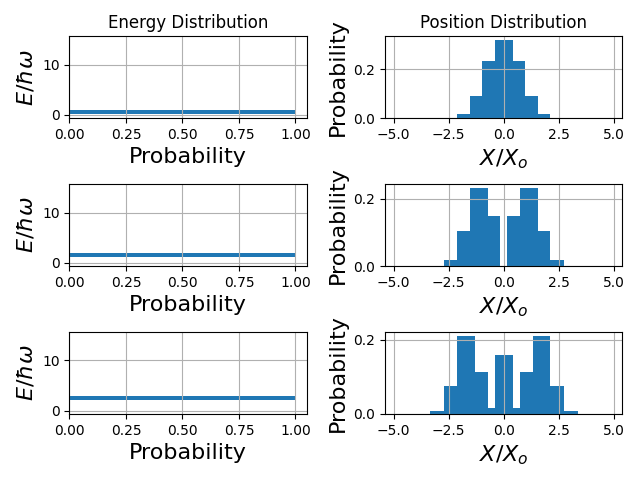
Figure 36: Probability distributions are plotted for the ground state, first excited state, and second excited state. Each row of subplots shows an eigenstate of \(\hat{H}\). The top row shows the ground state. In the energy basis, only the ground state is occupied. A spatial distribution indicates a probability distribution peaked at the center, \(X=0/X_{o}\). The middle row shows the first excited state, and the bottom row shows the second excited state. Notice that the eigenstates are well-defined in energy space, but distributed over several position values in position space. The code that produced this is given in below.
8.2. Time Dependence of the QHO
- So far, we looked only at the eigenstates of \(\hat{H}\) for the QHO
- Let us now consider the time dependence of the QHO
8.2.1. Time Dependence of an Eigenstate of \(\hat{H}\)
- Consider the time dependence of \(\ket{\psi}\), prepared in an
eigenstate state: \(\ket{\psi(0}=\ket{\psi_{n}}\)
The time dependence is
\begin{equation} \begin{aligned} \ket{\psi\left(t\right)} & =e^{-i\hat{H}t/\hbar}\ket{\psi_{n}}\\ & =\left(\sum_{k=0}^{\infty}\frac{1}{k!}\left(-\frac{it}{\hbar}\right)^{k}\hat{H}^{k}\right)\ket{\psi_{n}}=\sum_{k=0}^{\infty}\frac{1}{k!}\left(-\frac{it}{\hbar}\right)^{k}\hat{H}^{k}\ket{\psi_{n}} \end{aligned} \end{equation}Notice that
\begin{equation} \begin{aligned} \hat{H}^{k}\ket{\psi_{n}} & =\hat{H}^{k-1}\hat{H}\ket{\psi_{n}}\stackrel{\left(\ref{eq:qho-tise-braket}\right)}{=}\hat{H}^{k-1}E_{n}\ket{\psi_{n}}=E_{n}\hat{H}^{k-1}\ket{\psi_{n}}\\ & =E_{n}\hat{H}^{k-2}\hat{H}\ket{\psi_{n}}=E_{n}^{2}\hat{H}^{k-2}\ket{\psi_{n}}\cdots\\ & =E_{n}^{k}\ket{\psi_{n}} \end{aligned} \end{equation}Thus, our time evolution becomes
\begin{equation} \label{orgdd7849d} \begin{aligned} \ket{\psi\left(t\right)} & =\sum_{k=0}^{\infty}\frac{1}{k!}\left(-\frac{it}{\hbar}\right)^{k}E_{n}^{k}\ket{\psi_{n}}=\left(\sum_{k=0}^{\infty}\frac{1}{k!}\left(-\frac{it}{\hbar}\right)^{k}E_{n}^{k}\right)\ket{\psi_{n}}\nonumber \\ & =e^{-itE_{n}/\hbar}\ket{\psi_{n}} \end{aligned} \end{equation}- We have turned a matrix exponential into a scalar exponential, because the time evolution operator acts on \(\ket{\psi_{n}}\)
We can show that the probability distribution for an eigenstate of \(\hat{H}\) is constant. It is easier to do this in the functional form of \(\psi_{n}\left(x,t\right)\)
\begin{equation} \left|\psi_{n}\left(x,t\right)\right|^{2}=\psi_{n}^{\ast}\left(x,t\right)\psi_{n}\left(x,t\right)=e^{it\hat{H}/\hbar}\psi_{n}^{\ast}\left(x\right)e^{-it\hat{H}/\hbar}\psi_{n}\left(x\right)=\psi_{n}^{\ast}\left(x\right)\psi_{n}\left(x\right)=\left|\psi_{n}\left(x\right)\right|^{2} \end{equation}- Thus, the time evolution of the probability distribution \(\left|\psi_{n}\left(x,t\right)\right|^{2}\) for an eigenstate of \(\hat{H}\) is time independent
8.2.2. Time Dependence of non-eigenstates of \(\hat{H}\)
- We can form noneigenstates of \(\hat{H}\) by making superpositions of eigenstates.
Exercise 8.3 Find the probability distribution of
\begin{equation} \psi\left(x,t\right)=\psi_{m}\left(x\right)e^{-iE_{m}t/\hbar}+\psi_{n}\left(x\right)e^{-iE_{n}t/\hbar}. \end{equation}Show/hide solution ...
Here, we follow the pattern from before:
\begin{equation} \begin{aligned} \left|\psi\left(x,t\right)\right|^{2} & =\left|\psi_{m}\left(x\right)e^{-iE_{m}t/\hbar}+\psi_{n}\left(x\right)e^{-iE_{n}t/\hbar}\right|^{2}\\ & =\left(\psi_{m}\left(x\right)e^{-iE_{m}t/\hbar}+\psi_{n}\left(x\right)e^{-iE_{n}t/\hbar}\right)^{\ast}\left(\psi_{m}\left(x\right)e^{-iE_{m}t/\hbar}+\psi_{n}\left(x\right)e^{-iE_{n}t/\hbar}\right)\\ & =\left(\psi_{m}^{\ast}\left(x\right)e^{iE_{m}t/\hbar}+\psi_{n}^{\ast}\left(x\right)e^{iE_{n}t/\hbar}\right)\left(\psi_{m}\left(x\right)e^{-iE_{m}t/\hbar}+\psi_{n}\left(x\right)e^{-iE_{n}t/\hbar}\right)\\ & =\psi_{m}^{\ast}\left(x\right)\psi_{m}\left(x\right)+\psi_{m}^{\ast}\left(x\right)\psi_{n}\left(x\right)e^{-i\left(E_{n}-E_{m}\right)t/\hbar}+\psi_{m}\left(x\right)\psi_{n}^{\ast}\left(x\right)e^{-i\left(E_{m}-E_{n}\right)t/\hbar}+\psi_{n}^{\ast}\left(x\right)\psi_{n}\left(x\right)\\ & =\left|\psi_{m}\right|^{2}+\psi_{m}^{\ast}\left(x\right)\psi_{n}\left(x\right)e^{-i\left(E_{n}-E_{m}\right)t/\hbar}+\psi_{m}\left(x\right)\psi_{n}^{\ast}\left(x\right)e^{-i\left(E_{m}-E_{n}\right)t/\hbar}+\left|\psi_{n}\right|^{2} \end{aligned} \end{equation}Notice that the superposition of two eigenstates now has a time-dependent probability distribution.
8.2.3. Time Dependence of Various initial Conditions
Exercise 8.4 Find the probability distribution of a system prepared in the initial state
\begin{equation} \psi\left(x,0\right)=\sum_{n=0}^{N}c_{n}\psi_{n}\left(x\right). \end{equation}Show/hide solution ...
Apply the time evolution operator:
\begin{equation} \begin{aligned} \psi\left(x,t\right) & =e^{-it\hat{H}/\hbar}\psi\left(x,0\right)=e^{-it\hat{H}/\hbar}\sum_{n=0}^{N}c_{n}\psi_{n}\left(x\right)\\ & =\sum_{n=0}^{N}c_{n}e^{-it\hat{H}/\hbar}\psi_{n}\left(x\right)\\ & \stackrel{\left(\ref{eq:EigenstateEvolution}\right)}{=}\sum_{n=0}^{N}c_{n}e^{-itE_{n}/\hbar}\psi_{n}\left(x\right) \end{aligned} \end{equation}Exercise 8.5 Plot the time-dependent probability distributions over position and energy for a quantum harmonic oscillator for three different initial states:
\begin{equation} \label{orge7ff35e} \psi_{a}\left(x,0\right)=\psi_{2}\left(x\right) \end{equation} \begin{equation} \label{org373f3a9} \psi_{b}\left(x,0\right)=\frac{1}{\sqrt{2}}\left(\psi_{1}\left(x\right)+\psi_{2}\left(x\right)\right),\;\text{and} \end{equation} \begin{equation} \label{org32c10cb} \psi_{c}\left(x,0\right)=D\left(\alpha\right)\psi_{0}\left(x\right), \end{equation}where \(D\left(\alpha\right)\) is the displacement operator,
\begin{equation} D\left(\alpha\right)=e^{\alpha\hat{a}^{\dagger}-\alpha\hat{a}} \end{equation}for a complex parameter \(\alpha\). You should see that the state \(\psi_{c}\left(x,0\right)\) is a coherent state or "Glauber state," and it behaves like a classical oscillator.
Show/hide solution ...
The instructor solution is given below, with results plotted in Figure 37.
Show/hide code ...
import numpy as np
import os
from scipy.linalg import expm
import matplotlib.pyplot as plt
def dag( Q ):
'''Calculates the Hermitian adjoint of a quantum object
(vector or operator).
Args:
qobj: an numpy.ndarray representing a operator, bra,
or ket.
Returns:
The Hermitian adjoint of Q.
'''
return np.conj( Q.transpose() )
def elementary_vector( n:int , d:int ):
"""
Returns the n-th elementary vector in a
d-dimensional vector space
Args
n: index of elementary vector
d: dimension of elementary vector
Returns an np.ndarray()
"""
v = np.zeros([d, 1], dtype='complex');
v[n, 0] = 1
return v
def displacement_operator( alpha ):
"""
Returns the displacement operator for the
quantum harmonic oscillator
Args
alpha: complex displacement parameter
Returns an NxN np.ndarray()
"""
return expm( alpha*a - alpha*ad )
def state_to_probability( psi, verbose=False):
"""
Convert a state vector to a probability
distribution.
Args
psi: a state vector
Returns an (N,) np.ndarray()
"""
temp = np.conj(np.array(psi)) * np.array(psi)
return temp.flatten().real
def expectation_value( op, psi ):
"""
Return the expectation value for an
operator op.
Args
psi: a state vector
Returns real expectation value
"""
temp = dag( psi ) @ op @ psi
return temp[0,0].real
# Constants
hbar = 6.58E-16 # [eV*s] the reduced Planck constant
c_nms = 2.997E17 # [nm/s] speed of light
c_cms = 2.997E10 # [nm/s] speed of light
amu2eV = 931.5E6 # [eV/amu] mass-to-energy conversion
kB = 8.617E-5 # [eV/K]
# Parameters
N = 15
f_invcm = 300 # [inv cm] frequency
m_amu = 6 # [amu] mass
# Calculations
f = f_invcm * c_cms # [Hz] oscillator frequency
T = 1/f # [s] oscillator period
nt=75 # number of time points
t = np.linspace(0, 5*T, nt) # time vector
w = 2*np.pi*f # [rad/s] oscillator ang freq
hw = hbar * w # [eV] energy quantization
m = m_amu * amu2eV / c_nms**2 # [eV*s^2/nm^2] mass
Id = np.eye(N) # [] Identity operator
# lowering oeprator
a = np.diag(np.sqrt(range(1,N)), 1)
# raising operator
ad = dag( a )
# Hamiltonian
H = hw*(ad @ a + 0.5*Id) # [eV]
Eval, Psin = np.linalg.eigh( H ) # [eV, ]
# Position operator (not the NOT operator)
X = np.sqrt(hbar/(2*m*w)) * (a + ad)
Xo = np.sqrt(hbar/ (m*w)) # Characteristic length
# Eigenvalues of this operator are the possible
# outcomes of a position measurement
# Eigenvectors are returned as a matrix UEX
Xval, UEX = np.linalg.eigh( X ) # [nm, ]
UXE = dag( UEX ) # change basis: energy to position
fig, ax = plt.subplots(3, 2) # array of six plots
# Establish three initital states
# Form the n-th energy eigenstate
psi0a = elementary_vector(2, N)
psi0b = (1/np.sqrt(2))*( elementary_vector( 2, N ) \
+ elementary_vector( 3, N ) )
psi0c = displacement_operator( 1 ) @ elementary_vector( 0, N )
# Wrap the three intial states in a vector so we can iterate
psi0 = [psi0a, psi0b, psi0c]
# Storage vector for energy, position distribution
pdistE = [np.zeros( (N, nt) )] * 3
pdistX = [np.zeros( (N, nt) )] * 3
Et = np.zeros((3, nt))
pos_exp = np.zeros((3, nt))
# meshes for 2D plotting
tt, xx = np.meshgrid(t.flatten()/T, Xval/Xo, indexing='xy')
_, EE = np.meshgrid(t.flatten()/T, Eval/hw, indexing='xy')
fig, ax = plt.subplots( 3, 2 )
# Loop over each initial condition
for ic_idx in range(3):
# Loop over each time step
for it, tv in enumerate(t):
# time-dependent state
psit = expm( -1j*tv*H/hbar) @ psi0[ic_idx]
# probability distribution over energy
pdistE[ic_idx][:,it] = state_to_probability( psit ).flatten()
# probability distribution over position
pdistX[ic_idx][:,it] = state_to_probability( UXE @ psit ).flatten()
# energy expectation value [eV]
Et[ic_idx, it] = expectation_value( H, psit )
# position exepcation value [nm]
pos_exp[ic_idx, it] = expectation_value( X, psit )
ax[ic_idx,0].contourf(tt, EE,pdistE[ic_idx], levels = 75)
ax[ic_idx,0].plot(t/T, Et[ic_idx]/hw, color='w')
ax[ic_idx,0].set_ylabel(r'$E/\hbar \omega$', fontsize=16)
ax[ic_idx,1].contourf(tt, xx, pdistX[ic_idx], levels=75)
ax[ic_idx,1].plot(t/T, pos_exp[ic_idx]/Xo, color='w')
ax[ic_idx,1].set_ylabel(r'$X/X_o$', fontsize=16)
if ic_idx == 2:
ax[ic_idx,0].set_xlabel(r'$t/T$', fontsize=16)
ax[ic_idx,1].set_xlabel(r'$t/T$', fontsize=16)
plt.tight_layout()
figname = os.path.join("img", "qho_evolution_vari_ic.png")
plt.savefig(figname)
print(f'\n[[./{figname}]]')
[[./img/qho_evolution_vari_ic.png]]

Figure 37: Probability distributions are plotted for the ground states defined in Equations \eqref{orge7ff35e}-\eqref{org32c10cb}. The top row is for \(\psi_{a}\left(x,0\right)=\psi_{n}\left(x\right)\) ; the middle row is for a linear combination of eigenstates; and the bottom row is for a Glauber state as the initial condition. The expectation value of energy or position is plotted in white. The code that produced this is given in the code above.
- Notice that in all cases, the expectation value of energy is constant
- These systems are closed quantum systems, where energy cannot enter or exit
- Energy is conserved
- To get to dissipative models that allow energy to escape into the
environment, we take two steps:
- First, move from state-vector formalism with the Schrödinger equation to the density matrix formalism with the quantum Liouville equation
- Extend the quantum Liouville equation to the Lindblad equation
8.3. Time Dependence of the QHO using the Quantum Liouville Equation
- We calculate the time-dependence of the QHO using density operator
formalism
- We use some code tools I developed to model QHOs
Code that does this calculation is provided below. Results are shown in Figures 38 and 39
import numpy as np import scipy as sp import matplotlib.pyplot as plt import os import odeintw # Now we import from a custom module I wrote # These are found in the directory "../org/PyQCA/" homedir = os.getcwd() # bookmark this working directory from qcapackage.quantum.harmonicoscillator import HarmonicOscillator as QHO from qcapackage.quantum import linearalgebra as la from qcapackage import constants as const from qcapackage.quantum.timeevolution import quantum_liouville # select the initial state start = 'coherent' N = 15 nt = 75 # Create a QHO object # Uses default m = 6 amu and f = 300 inv cm # This also creates all the operators: # Hamiltonian, raising and lowering, # position, momentum # It also calculates the characteristic # length and energy qosc = QHO(N=N) X0 = qosc.Q0 # [nm] characteristic length T = qosc.T # oscillation period t = np.linspace(0, 3*T, nt).flatten() # Storage arrays PDE = np.zeros([N, nt]) # prob dist over energy PDX = np.zeros([N, nt]) # prob dist over position Et = np.zeros((nt,)) Xt = np.zeros((nt,)) # Prepare the initial state if start == 'eigenstate': psi0 = qosc.energy_state(0) elif start == 'coherent': d = 1 + 1j # displacement D = qosc.displacement_operator(d) # Recall that D|0> "selects" the first column of D psi0 = D @ qosc.energy_state(0) elif start == 'arbitrary': psi0 = la.normalize( qosc.energy_state(1) + qosc.energy_state(2) ) # Exponential time evolution (state-vector formalism) for it, tt in enumerate(t): Ut = sp.linalg.expm(-1j * qosc.H * tt / const.hbar ) psit = Ut @ psi0 psitX = qosc.change_basis(psit, fr='energy', to='position') PDE[:,it] = la.state_to_probability(psit).real PDX[:,it] = la.state_to_probability(psitX).real Et[it] = la.expectation_value( qosc.H, psit, validate=False ) Xt[it] = la.expectation_value( qosc.X, psit, validate=False ) fig, ax = plt.subplots( 2, 1 ) tt, xx = np.meshgrid(t.flatten()/qosc.T, qosc.Xval, indexing='xy') _, EE = np.meshgrid(t.flatten()/T, qosc.Eval/qosc.hw, indexing='xy') ax[0].contourf(tt, EE, PDE, levels = 75) ax[0].set_ylabel(r'$E/\hbar \omega$', fontsize=16) ax[1].contourf(tt, xx, PDX, levels=75) ax[1].set_ylabel(r'$x$', fontsize=16) figname = os.path.join("img", "qho_evolution_unitary_PD.png") plt.savefig(figname) print(f'\n[[./{figname}]]') # Quantum Liouville evolution from odeintw import odeintw rho0 = la.density_matrix(psi0) # form a density operator # Integrate the solution sol = odeintw(quantum_liouville, rho0, t, args=(qosc.H,) ) PDE_ode = np.zeros([N, nt]) PDX_ode = np.zeros([N, nt]) Et_ode = np.zeros((nt,)) Xt_ode = np.zeros((nt,)) for it in range(nt): PDE_ode[:,it] = np.diag(sol[it]).real rhoX = qosc.change_basis(sol[it], fr='energy', to='position') PDX_ode[:,it] = np.diag(rhoX).real Et_ode[it] = la.expectation_value( qosc.H, sol[it], validate=False ) Xt_ode[it] = la.expectation_value( qosc.X, sol[it], validate=False ) # Postprocessing print(type(sol)) print(sol.shape) print(sol[0].shape) fig, ax = plt.subplots( 2, 1 ) ax[0].contourf(tt, xx/qosc.Q0, PDX, levels = 75) ax[0].plot(t/T, Xt/X0, color='w') ax[0].set_ylabel(r'$X/X_0$ (expm)', fontsize=16) ax[1].contourf(tt, xx/X0, PDX_ode, levels=75) ax[1].plot(t/T, Xt_ode/X0, color='w') ax[1].set_ylabel(r'$X/X_0$ (ODE)', fontsize=16) ax[1].set_xlabel(r'$t/T$', fontsize=16) figname = os.path.join("img", "qho_class_test_evolution_unitary_vs_ODE_XPD.png") plt.savefig(figname) print(f'\n[[./{figname}]]') plt.close('all') fig, ax = plt.subplots( 2, 1 ) ax[0].contourf(tt, EE, PDE, levels = 75) ax[0].plot(t/T, Et/qosc.hw, color='w') ax[0].set_ylabel(r'$E/\hbar \omega$ (expm)', fontsize=16) ax[1].contourf(tt, EE, PDE_ode, levels=75) ax[1].plot(t/T, Et_ode/qosc.hw, color='w') ax[1].set_ylabel(r'$E/\hbar \omega$ (ODE)', fontsize=16) figname = os.path.join("img", "qho_class_test_evolution_unitary_vs_ODE_EPD.png") plt.savefig(figname) print(f'\n[[./{figname}]]') plt.close('all')[[./img/qho_evolution_unitary_PD.png]] <class 'numpy.ndarray'> (75, 15, 15) (15, 15) [[./img/qho_class_test_evolution_unitary_vs_ODE_XPD.png]] [[./img/qho_class_test_evolution_unitary_vs_ODE_EPD.png]]
- We can make some observations:
- Figure 38 shows that the time dynamics according to the Schrödinger equation match those of the quantum Liouville equation
These dynamics describe a closed system, where the energy is conserved within the system, as shown in Figure 39
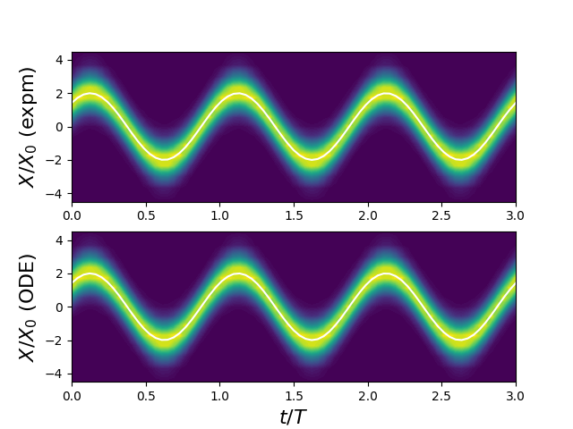
Figure 38: Dynamics calculated using the quantum Liouville equation match those calculated using the Schrödinger equation. This result is shown in the position basis.
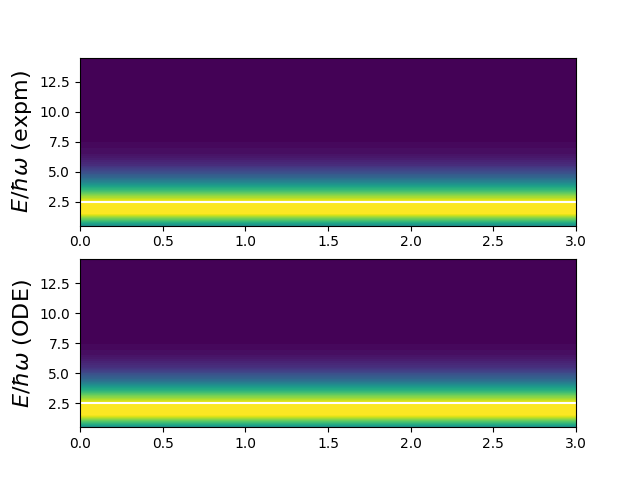
Figure 39: Dynamics calculated using the quantum Liouville equation match those calculated using the Schrödinger equation. This result is shown in the energy basis.
8.4. Open System Dynamics using the Lindblad Equation
One way to treat dissipation in a quantum system is to use the Lindblad equation
\begin{equation} \label{org92b9b46} \frac{d\hat{\rho}}{dt}=-\frac{i}{\hbar}\left[\hat{H},\hat{\rho}\right]+\sum_{j}\hat{L}_{j}\hat{\rho}\hat{L}_{j}^{\dagger}-\frac{1}{2}\left\{ \hat{L}_{j}^{\dagger}\hat{L}_{j},\hat{\rho}\right\} , \end{equation}where the operators \(\left\{ \hat{L}_{j}\right\}\) are called Lindblad operators or dissipation channels
- As before, \(\hat{H}\) is the Hamiltonian and \(\hat{\rho}\) is the density operator
- This is a matrix differential equation, like the quantum Liouville equation [see Equation \eqref{orgedc5496}].
- The Lindblad equation contains a term called the Liouvillian, which
is the right-hand side of Equation
\eqref{orgedc5496}
- This part is said to be the unitary part or the Liouvillian part
- It is responsible for the unitary (closed-system) dynamics of a quantum state
Equation \eqref{org92b9b46} also has an additional term, called the Lindbladian or the dissipator:
\begin{equation} \label{org86a4819} \mathcal{D}=\sum_{j}\hat{L}_{j}\hat{\rho}\hat{L}_{j}^{\dagger}-\frac{1}{2}\left\{ \hat{L}_{j}^{\dagger}\hat{L}_{j},\hat{\rho}\right\} \end{equation}- The Lindbladian is responsible for the non-unitary dynamics of a
model
- The effects of the environment on the system are contained within the Lindblad operators
- A specific choice of the Lindblad operators is a specific model for the environment
- The Lindbladian is responsible for the non-unitary dynamics of a
model
8.4.1. Lindblad Operators for the Quantum Harmonic Oscillator - Dissipation (Relaxation)
For the quantum harmonic oscillator, we can use a single Lindblad operator,
\begin{equation} \left\{ \hat{L}_{1}\right\} =\left\{ \frac{1}{\sqrt{T_{1}}}\hat{a}\right\} \end{equation}- This causes an exponential decay in system energy with time
constant \(T_{1}\)
- \(T_{1}\) is a measure of system-environment coupling:
- A short \(T_{1}\) allows a fast exponential decay, meaning the environment and our quantum system are strongly coupled
- \(T_{1}\) is a measure of system-environment coupling:
- Energy decay means that the system can lose energy
- Thus, the system is said to be an open system
- The loss of energy is also called relaxation, since the system
relaxes from a high-energy state toward the ground state
- The loss of energy is also called energy dissipation
- After applying this operator for a long time, we should expect to find the system in its ground state
- This causes an exponential decay in system energy with time
constant \(T_{1}\)
- The code below calculates the time evolution of a QHO under relaxation, and results are shown in Figures 40 (position basis) and 41 (energy basis)
Show/hide code ...
import numpy as np
import scipy as sp
import matplotlib.pyplot as plt
import os
import odeintw
import datetime as dt
from qcapackage.quantum.harmonicoscillator import HarmonicOscillator as QHO
from qcapackage.quantum import linearalgebra as la
from qcapackage import constants as const
from qcapackage.quantum.timeevolution import quantum_liouville, lindblad
# select the initial state
start = 'coherent'
N = 15
nt = 500
# Create a QHO object
# Uses default m = 6 amu and f = 300 inv cm
qosc = QHO(N=N)
X0 = qosc.Q0 # [nm] characteristic length
T = qosc.T # [s] oscillation period
# Form Lindblad operators
# The relaxation time is chosen to be 2*T
qosc.make_lindblad_operators( 2*T, type='relaxation' )
t = np.linspace(0, 8*T, nt).flatten()
# Storage arrays
PDE = np.zeros([N, nt]) # prob dist over energy
PDX = np.zeros([N, nt]) # prob dist over position
Et = np.zeros((nt,))
Xt = np.zeros((nt,))
# Prepare the initial state
if start == 'eigenstate':
psi0 = qosc.energy_state(0)
elif start == 'coherent':
d = 1 + 1j # displacement
D = qosc.displacement_operator(d)
# Recall that D|0> "selects" the first column of D
psi0 = D @ qosc.energy_state(0)
elif start == 'arbitrary':
psi0 = la.normalize( qosc.energy_state(1) + qosc.energy_state(2) )
# Exponential time evolution
for it, tt in enumerate(t):
Ut = sp.linalg.expm(-1j * qosc.H * tt / const.hbar )
psit = Ut @ psi0
psitX = qosc.change_basis(psit, fr='energy', to='position')
PDE[:,it] = la.state_to_probability(psit).real
PDX[:,it] = la.state_to_probability(psitX).real
Et[it] = la.expectation_value( qosc.H, psit, validate=False )
Xt[it] = la.expectation_value( qosc.X, psit, validate=False )
fig, ax = plt.subplots( 2, 1 )
tt, xx = np.meshgrid(t.flatten()/qosc.T, qosc.Xval, indexing='xy')
_, EE = np.meshgrid(t.flatten()/T, qosc.Eval/qosc.hw, indexing='xy')
figname = os.path.join("img", "qho_class_test_evolution_unitary_PD.png")
plt.savefig(figname)
print(f'\n[[./{figname}]]')
# Quantum Liouville evolution
from odeintw import odeintw
rho0 = la.density_matrix(psi0) # form a density operator
# Integrate the solution
# odeintw produces an array sol
# Each element of sol is the density matrix at a
# particular time
# Extract expectation values after calling odeintw
sol = odeintw(quantum_liouville, rho0, t, args=(qosc.H,) )
PDE_liou = np.zeros([N, nt])
PDX_liou = np.zeros([N, nt])
Et_liou = np.zeros((nt,))
Xt_liou = np.zeros((nt,))
for it in range(nt):
PDE_liou[:,it] = np.diag(sol[it]).real
rhoX = qosc.change_basis(sol[it], fr='energy', to='position')
PDX_liou[:,it] = np.diag(rhoX).real
Et_liou[it] = la.expectation_value( qosc.H, sol[it], validate=False )
Xt_liou[it] = la.expectation_value( qosc.X, sol[it], validate=False )
# Postprocessing
print(type(sol))
print(sol.shape)
# Lindblad evolution
sol = odeintw(lindblad, rho0, t,
args=(qosc.H, qosc.LindbladOps))
PDE_lind = np.zeros([N, nt])
PDX_lind = np.zeros([N, nt])
Et_lind = np.zeros((nt,))
Xt_lind = np.zeros((nt,))
for it in range(nt):
PDE_lind[:,it] = np.diag(sol[it]).real
rhoX = qosc.change_basis(sol[it], fr='energy', to='position')
PDX_lind[:,it] = np.diag(rhoX).real
Et_lind[it] = la.expectation_value( qosc.H, sol[it], validate=False )
Xt_lind[it] = la.expectation_value( qosc.X, sol[it], validate=False)
fig, ax = plt.subplots( 2, 1 )
ax[0].contourf(tt, xx/qosc.Q0, PDX_liou, levels = 75)
ax[0].plot(t/T, Xt_liou/X0, color='w')
ax[0].set_ylabel(r'$X/X_0$ (Closed)', fontsize=16)
ax[1].contourf(tt, xx/X0, PDX_lind, levels=75)
ax[1].plot(t/T, Xt_lind/X0, color='w')
ax[1].set_ylabel(r'$X/X_0$ (Open)', fontsize=16)
ax[1].set_xlabel(r'$t/T$', fontsize=16)
plt.tight_layout()
figname = os.path.join("img", "qho_unitary_vs_lind_XPD.png")
plt.savefig(figname)
print(f'\n[[./{figname}]]')
plt.close('all')
fig, ax = plt.subplots( 2, 1 )
ax[0].contourf(tt, EE, PDE_liou, levels=75)
ax[0].plot(t/T, Et_liou/qosc.hw, color='w')
ax[0].set_ylim(0.5, 8)
ax[0].set_ylabel(r'$E/\hbar \omega$ (Closed)', fontsize=16)
ax[1].contourf(tt, EE, PDE_lind, levels=75)
ax[1].plot(t/T, Et_lind/qosc.hw, color='w')
ax[1].set_ylim(0.5, 8)
ax[1].set_ylabel(r'$E/\hbar \omega$ (Open)', fontsize=16)
ax[1].set_xlabel(r'$t/T$', fontsize=16)
plt.tight_layout()
figname = os.path.join("img", "qho_unitary_vs_lind_EPD.png")
plt.savefig(figname)
print(f'\n[[./{figname}]]')
plt.close('all')
print(f'\nCode executed at {dt.datetime.now()}')
[[./img/qho_class_test_evolution_unitary_PD.png]] <class 'numpy.ndarray'> (500, 15, 15) [[./img/qho_unitary_vs_lind_XPD.png]] [[./img/qho_unitary_vs_lind_EPD.png]] Code executed at 2026-09-08 05:49:07.051883
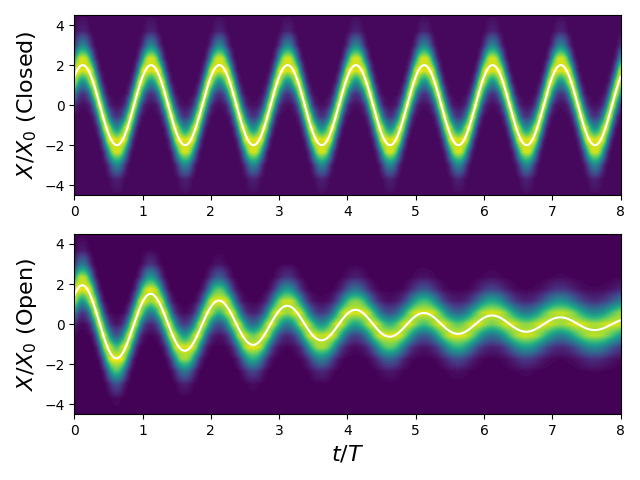
Figure 40: The QHO modeled using the quantum Liouville equation behaves as a closed-system (top), in which oscillations persist forever. In the case of Lindblad evolution, however, damping is evident as oscillations decrease in amplitude with time (bottom).
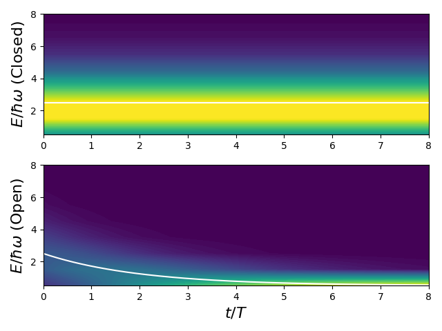
Figure 41: In the energy basis, Liouvillian evolution conserves energy, but an exponential decrease in energy is evident in the open system modeled using the Lindblad equation.
8.4.2. Lindblad Operators for the Quantum Harmonic Oscillator - Thermalization
Another option for the QHO is to use a pair of Lindblad operators,
\begin{equation} \left\{ \hat{L}_{1},\hat{L}_{2}\right\} =\left\{ \frac{1}{\sqrt{T_{1}}}\hat{a},\frac{1}{\sqrt{T_{1}}}e^{-\frac{\hbar\omega}{k_{B}T}}\hat{a}^{\dagger}\right\} \end{equation}- Here, the second Lindblad operator is proportional to the raising
operator, \(\hat{a}^{\dagger}\), so we should expect it to excite
the system (adding energy)
- The second Lindblad operator, \(\hat{L}_{2}\), has an additional
(small) weight of \(e^{-\frac{\hbar\omega}{2k_{B}T}}\)
- This maintains relaxation via \(\hat{L}_{1}\) as the dominant effect, but models the fact that the system can be excited by thermal energy in the environment at temperature \(T\)
- In the limit of \(T\rightarrow0\), the operator \(\hat{L}_{2}\rightarrow0\), so that we have relaxation, as in the previous case
- The second Lindblad operator, \(\hat{L}_{2}\), has an additional
(small) weight of \(e^{-\frac{\hbar\omega}{2k_{B}T}}\)
- Here, the second Lindblad operator is proportional to the raising
operator, \(\hat{a}^{\dagger}\), so we should expect it to excite
the system (adding energy)
- The code below calculates the time evolution of a QHO under thermalization, and results are shown in Figures 40 (position basis) and 41 (energy basis)
Show/hide code ...
import numpy as np
import scipy as sp
import matplotlib.pyplot as plt
import os
import odeintw
import datetime as dt
from qcapackage.quantum.harmonicoscillator import HarmonicOscillator as QHO
from qcapackage.quantum import linearalgebra as la
from qcapackage import constants as const
from qcapackage.quantum.timeevolution import quantum_liouville, lindblad
# select the initial state
start = 'coherent'
N = 15
nt = 500
# Create a QHO object
# Uses default m = 6 amu and f = 300 inv cm
qosc = QHO(N=N)
X0 = qosc.Q0 # [nm] characteristic length
T = qosc.T # [s] oscillation period
# Form Lindblad operators
# The relaxation time is chosen to be 2*T
qosc.make_lindblad_operators( 2*T, type='thermalization' )
t = np.linspace(0, 8*T, nt).flatten()
# Storage arrays
PDE = np.zeros([N, nt]) # prob dist over energy
PDX = np.zeros([N, nt]) # prob dist over position
Et = np.zeros((nt,))
Xt = np.zeros((nt,))
# Prepare the initial state
if start == 'eigenstate':
psi0 = qosc.energy_state(0)
elif start == 'coherent':
d = 1 + 1j # displacement
D = qosc.displacement_operator(d)
# Recall that D|0> "selects" the first column of D
psi0 = D @ qosc.energy_state(0)
elif start == 'arbitrary':
psi0 = la.normalize( qosc.energy_state(1) + qosc.energy_state(2) )
# Exponential time evolution
for it, tt in enumerate(t):
Ut = sp.linalg.expm(-1j * qosc.H * tt / const.hbar )
psit = Ut @ psi0
psitX = qosc.change_basis(psit, fr='energy', to='position')
PDE[:,it] = la.state_to_probability(psit).real
PDX[:,it] = la.state_to_probability(psitX).real
Et[it] = la.expectation_value( qosc.H, psit, validate=False )
Xt[it] = la.expectation_value( qosc.X, psit, validate=False )
fig, ax = plt.subplots( 2, 1 )
tt, xx = np.meshgrid(t.flatten()/qosc.T, qosc.Xval, indexing='xy')
_, EE = np.meshgrid(t.flatten()/T, qosc.Eval/qosc.hw, indexing='xy')
figname = os.path.join("img", "qho_class_test_evolution_unitary_PD.png")
plt.savefig(figname)
print(f'\n[[./{figname}]]')
# Quantum Liouville evolution
from odeintw import odeintw
rho0 = la.density_matrix(psi0) # form a density operator
# Integrate the solution
# odeintw produces an array sol
# Each element of sol is the density matrix at a
# particular time
# Extract expectation values after calling odeintw
sol = odeintw(quantum_liouville, rho0, t, args=(qosc.H,) )
PDE_liou = np.zeros([N, nt])
PDX_liou = np.zeros([N, nt])
Et_liou = np.zeros((nt,))
Xt_liou = np.zeros((nt,))
for it in range(nt):
PDE_liou[:,it] = np.diag(sol[it]).real
rhoX = qosc.change_basis(sol[it], fr='energy', to='position')
PDX_liou[:,it] = np.diag(rhoX).real
Et_liou[it] = la.expectation_value( qosc.H, sol[it], validate=False )
Xt_liou[it] = la.expectation_value( qosc.X, sol[it], validate=False )
# Postprocessing
print(type(sol))
print(sol.shape)
# Lindblad evolution
sol = odeintw(lindblad, rho0, t,
args=(qosc.H, qosc.LindbladOps))
PDE_lind = np.zeros([N, nt])
PDX_lind = np.zeros([N, nt])
Et_lind = np.zeros((nt,))
Xt_lind = np.zeros((nt,))
for it in range(nt):
PDE_lind[:,it] = np.diag(sol[it]).real
rhoX = qosc.change_basis(sol[it], fr='energy', to='position')
PDX_lind[:,it] = np.diag(rhoX).real
Et_lind[it] = la.expectation_value( qosc.H, sol[it], validate=False )
Xt_lind[it] = la.expectation_value( qosc.X, sol[it], validate=False)
fig, ax = plt.subplots( 2, 1 )
ax[0].contourf(tt, xx/qosc.Q0, PDX_liou, levels = 75)
ax[0].plot(t/T, Xt_liou/X0, color='w')
ax[0].set_ylabel(r'$X/X_0$ (Closed)', fontsize=16)
ax[1].contourf(tt, xx/X0, PDX_lind, levels=75)
ax[1].plot(t/T, Xt_lind/X0, color='w')
ax[1].set_ylabel(r'$X/X_0$ (Open)', fontsize=16)
ax[1].set_xlabel(r'$t/T$', fontsize=16)
plt.tight_layout()
figname = os.path.join("img", "qho_unitary_vs_lind_XPD-thermal.png")
plt.savefig(figname)
print(f'\n[[./{figname}]]')
plt.close('all')
fig, ax = plt.subplots( 2, 1 )
ax[0].contourf(tt, EE, PDE_liou, levels=75)
ax[0].plot(t/T, Et_liou/qosc.hw, color='w')
ax[0].set_ylim(0.5, 8)
ax[0].set_ylabel(r'$E/\hbar \omega$ (Closed)', fontsize=16)
ax[1].contourf(tt, EE, PDE_lind, levels=75)
ax[1].plot(t/T, Et_lind/qosc.hw, color='w')
ax[1].set_ylim(0.5, 8)
ax[1].set_ylabel(r'$E/\hbar \omega$ (Open)', fontsize=16)
ax[1].set_xlabel(r'$t/T$', fontsize=16)
plt.tight_layout()
figname = os.path.join("img", "qho_unitary_vs_lind_EPD-thermal.png")
plt.savefig(figname)
print(f'\n[[./{figname}]]')
plt.close('all')
print(f'\nCode executed at {dt.datetime.now()}')
[[./img/qho_class_test_evolution_unitary_PD.png]] <class 'numpy.ndarray'> (500, 15, 15) [[./img/qho_unitary_vs_lind_XPD-thermal.png]] [[./img/qho_unitary_vs_lind_EPD-thermal.png]] Code executed at 2026-09-08 05:49:09.730816
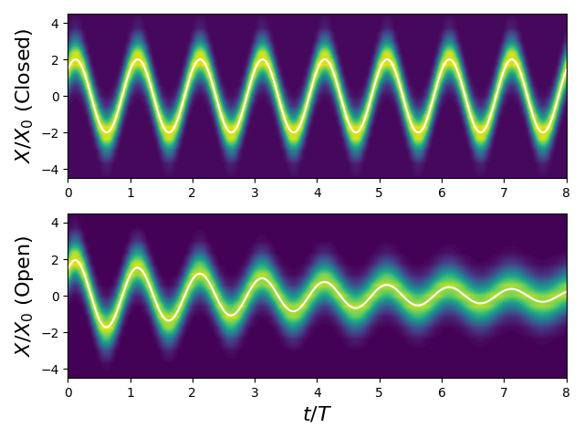
Figure 42: The QHO modeled using the quantum Liouville equation behaves as a closed-system (top), in which oscillations persist forever. In the case of Lindblad evolution, however, damping is evident as oscillations decrease in amplitude with time (bottom).
Figure 43: In the energy basis, Liouvillian evolution conserves energy, but an exponential decrease in energy is evident in the open system modeled using the Lindblad equation. Here, the thermalization
8.4.3. Lindblad Evolution: steady-state Behaviors
- It may not be evident how the dynamics of dissipation (relaxation) differ from thermalization
- It may be more useful to compare steady-state behaviors
- This is the result of applying the Lindblad operators for a long time, so that \(d\rho/dt\rightarrow0\), that is, we get an unchanging \(\hat{\rho}\left(t\right)\)
Thus, we would like to solve for the steady-state \(\rho_{\text{ss}}\) that solves
\begin{equation} \frac{d\rho}{dt}=-\frac{i}{\hbar}\left[\hat{H},\hat{\rho}\right]+\sum_{j}\hat{L}_{j}\hat{\rho}\hat{L}_{j}^{\dagger}-\frac{1}{2}\left\{ \hat{L}_{j}^{\dagger}\hat{L}_{j},\hat{\rho}\right\} =0 \end{equation}
- The Python
qutippackage can calculate Lindblad dynamics, as well as steady-state density matrices - Some notes on using
qutipto solve the Lindblad equationqutipprovides a class,qutip.Qobj, which is used to describe quantum objects such as kets and operators- Use the
mesolve()function to describe and solve a Lindblad evolution in timemesolveis short for "master equation solve," because the Lindblad equation is known as a master equationThe syntax for using
mesolveisresult = mesolve( H, # qutip.Qobj, Hamiltonian operator rho0, # qutip.Qobj, initial density operator t, # numpy time vector for the evolution c_ops=c_ops, # list of Lindblad operators (collapse operators, qutip.Qobj) e_ops=e_ops # list of measurement operators (expectation values desired, qutip.Qobj) )
\begin{equation} \frac{d\rho}{dt}=-i\left[\hat{H},\hat{\rho}\right]+\sum_{j}\hat{L}_{j}\hat{\rho}\hat{L}_{j}^{\dagger}-\frac{1}{2}\left\{ \hat{L}_{j}^{\dagger}\hat{L}_{j},\hat{\rho}\right\} =0 \end{equation}mesolveuses natural units, where \(\hbar=1\):- Here, \(\hat{H}\) has units of not eV, but rather eV/\(\hbar\). Thus, instead of using \(\hat{H}=\hbar\omega\left(\hat{a}^{\dagger}\hat{a}+\hat{1}/2\right)\) for the Hamiltonian, we use \(\hat{H}=\omega\left(\hat{a}^{\dagger}\hat{a}+\hat{1}/2\right)\)
Use the
steadystate(H, c_ops…)= function to calculate the steady-state density matrix given a Hamiltonian stored inHa list of Lindblad operators specified using the keyword argumentc_opsimport numpy as np import matplotlib.pyplot as plt import os import datetime as dt from qutip import ( basis, destroy, displace, mesolve, steadystate, Qobj, ) def estimate_temperature_from_populations(p, hw, kB): """ Estimate temperature assuming p_n ~ exp[- hw*n/(kT)] Returns: Teff slope intercept """ n = np.arange(len(p)) mask = p > 1e-12 coeff = np.polyfit( n[mask], np.log(p[mask]), 1 ) slope = coeff[0] intercept = coeff[1] Teff = -hw / (kB * slope) return Teff, slope, intercept # ============================================================ # Physical constants # ============================================================ hbar_ev_s = 6.582119569e-16 # eV*s kB = 8.617333262145e-5 # eV/K c_cms = 2.99792458e10 # cm/s # SI constants hbar_si = 1.054571817e-34 # J*s amu_kg = 1.66053906660e-27 # kg # ============================================================ # Parameters # ============================================================ start = "coherent" # "eigenstate", "coherent", "arbitrary" N = 15 nt = 120 m_amu = 6 f_invcm = 300 Temp = 300 T1_factor = 2.0 # ============================================================ # Harmonic oscillator # ============================================================ f = f_invcm * c_cms # [Hz] oscillation frequency Tosc = 1.0 / f # [s] oscillation period w = 2.0 * np.pi * f # [rad/s] oscillation angular frequency hw = hbar_ev_s * w # [eV] energy quantization m = m_amu * amu_kg # [kg] oscillator mass X0 = np.sqrt(hbar_si / (m * w)) # [nm] characteristic length # ============================================================ # Operators # ============================================================ a = destroy(N) adag = a.dag() H = hw * (adag * a + 0.5) # [eV] X = np.sqrt(hbar_si / (2 * m * w)) * (a + adag) # ============================================================ # Initial state # ============================================================ if start == "eigenstate": psi0 = basis(N, 0) elif start == "coherent": alpha = 1 + 1j psi0 = displace(N, alpha) * basis(N, 0) elif start == "arbitrary": psi0 = (basis(N, 1) + basis(N, 2)).unit() else: raise ValueError(f"Unknown start = {start}") rho0 = psi0.proj() # ============================================================ # Time grid # ============================================================ t = np.linspace(0.0, 8.0 * Tosc, nt) # ============================================================ # Position basis # ============================================================ Xmat = X.full() xvals, U = np.linalg.eigh(Xmat) # ============================================================ # Projectors onto energy eigenstates # ============================================================ energy_projectors = [ basis(N, n).proj() for n in range(N) ] # ============================================================ # Projectors onto position eigenstates # ============================================================ position_projectors = [] for i in range(N): xket = Qobj( U[:, i].reshape((N, 1)), dims=[[N], [1]] ) position_projectors.append( xket.proj() ) # ============================================================ # e_ops # ============================================================ e_ops = ( [H, X] + energy_projectors + position_projectors ) # ============================================================ # Closed-system evolution # ============================================================ result_unitary = mesolve( H/hbar_ev_s, rho0, t, c_ops=[], e_ops=e_ops ) # ============================================================ # Open-system evolution # ============================================================ T1 = T1_factor * Tosc gamma_down = 1.0 / T1 gamma_up = ( np.exp(-hw / (kB * Temp)) / T1 ) c_ops = [ np.sqrt(gamma_down) * a, np.sqrt(gamma_up) * adag, ] result_open = mesolve( H/hbar_ev_s, rho0, t, c_ops=c_ops, e_ops=e_ops ) # ============================================================ # Expectation values # ============================================================ E_unit = np.asarray(result_unitary.expect[0]) X_unit = np.asarray(result_unitary.expect[1]) E_open = np.asarray(result_open.expect[0]) X_open = np.asarray(result_open.expect[1]) # ============================================================ # Probability distributions # ============================================================ PDE_unit = np.zeros((N, nt)) PDE_open = np.zeros((N, nt)) PDX_unit = np.zeros((N, nt)) PDX_open = np.zeros((N, nt)) # ------------------------------------------------------------ # Energy probabilities # ------------------------------------------------------------ for n in range(N): PDE_unit[n, :] = np.real( result_unitary.expect[2 + n] ) PDE_open[n, :] = np.real( result_open.expect[2 + n] ) # ------------------------------------------------------------ # Position probabilities # ------------------------------------------------------------ offset = 2 + N for n in range(N): PDX_unit[n, :] = np.real( result_unitary.expect[offset + n] ) PDX_open[n, :] = np.real( result_open.expect[offset + n] ) # ============================================================ # Steady state density matrices # ============================================================ rho_ss_relx = steadystate(H/hbar_ev_s, c_ops[:1]) # relaxation/dissipation rho_ss_therm = steadystate(H/hbar_ev_s, c_ops) # thermalization # ============================================================ # Thermal density matrix # ============================================================ beta = 1.0 / (kB * Temp) thermal_weights = np.exp( -beta * H.eigenenergies() ) thermal_weights /= np.sum(thermal_weights) rho_thermal = Qobj( np.diag(thermal_weights) ) # ============================================================ # Steady-state distributions # ============================================================ P_energy_ss_relx = np.real( np.diag(rho_ss_relx.full()) ) P_energy_ss_therm = np.real( np.diag(rho_ss_therm.full()) ) # Convert density matrix to position basis rho_x_ss_relx = U.conj().T @ rho_ss_relx.full() @ U rho_x_ss_therm = U.conj().T @ rho_ss_therm.full() @ U P_position_ss_relx = np.real( np.diag(rho_x_ss_relx) ) P_position_ss_therm = np.real( np.diag(rho_x_ss_therm) ) # ============================================================ # Thermal-state distributions # ============================================================ P_energy_thermal = np.real( np.diag(rho_thermal.full()) ) rho_x_thermal = ( U.conj().T @ rho_thermal.full() @ U ) P_position_thermal = np.real( np.diag(rho_x_thermal) ) # ============================================================ # Compare thermal steady state with thermal density matrix # ============================================================ rho_ss_mat = rho_ss_therm.full() rho_th_mat = rho_thermal.full() # Frobenius norm frobenius_error = np.linalg.norm( rho_ss_mat - rho_th_mat ) # Trace distance trace_distance = ( 0.5 * np.sum( np.abs( np.linalg.eigvals( rho_ss_mat - rho_th_mat ) ) ) ) # Energy expectation values E_ss = np.real( (rho_ss_mat @ H.full()).trace() ) E_th = np.real( (rho_th_mat @ H.full()).trace() ) print() print("Comparison with thermal density matrix") print("--------------------------------------") print(f"Frobenius error : {frobenius_error:.6e}") print(f"Trace distance : {trace_distance:.6e}") print(f"E_ss : {E_ss/hw:.6f} ") print(f"E_thermal : {E_th/hw:.6f} ") print() print( "||rho_ss - rho_th||_F =", np.linalg.norm( rho_ss_therm.full() - rho_thermal.full() ) ) # ============================================================ # Temperature fitting for thermal states # ============================================================ Tfit_thermal, slope_th, b_th = ( estimate_temperature_from_populations( P_energy_thermal, hw, kB ) ) Tfit_ss, slope_ss, b_ss = ( estimate_temperature_from_populations( P_energy_ss_therm, hw, kB ) ) print() print("Boltzmann Temperatures") print("----------------------") print(f"Input temperature : {Temp:.3f} K") print(f"Thermal density matrix : {Tfit_thermal:.3f} K") print(f"Lindblad steady state : {Tfit_ss:.3f} K") print() # ============================================================ # Energy axis # ============================================================ energy_levels = H.eigenenergies() / hw # ============================================================ # Position dynamics # ============================================================ fig, ax = plt.subplots( 2, 1, figsize=(9, 8), sharex=True ) ax[0].pcolormesh( t / Tosc, xvals / X0, PDX_unit, shading="auto", cmap="viridis" ) ax[0].plot( t / Tosc, X_unit / X0, color="white", linewidth=2 ) ax[0].grid(True, alpha=0.2) ax[0].set_ylabel(r"$X/X_0$ (Closed)") ax[0].set_title("Position Probability Distribution") ax[1].pcolormesh( t / Tosc, xvals / X0, PDX_open, shading="auto", cmap="viridis" ) ax[1].plot( t / Tosc, X_open / X0, color="white", linewidth=2 ) ax[1].grid(True, alpha=0.2) ax[1].set_ylabel(r"$X/X_0$ (Open)") ax[1].set_xlabel(r"$t/T$") fig.tight_layout() figname = os.path.join("img", "qho_qutip-closed-vs-thermalization-position-dynamics.png") plt.savefig(figname) plt.close("all") # ============================================================ # Energy dynamics # ============================================================ fig, ax = plt.subplots( 2, 1, figsize=(9, 8), sharex=True ) ax[0].pcolormesh( t / Tosc, energy_levels, PDE_unit, shading="auto", cmap="viridis" ) ax[0].plot( t / Tosc, E_unit / hw, color="white", linewidth=2 ) ax[0].grid(True, alpha=0.2) ax[0].set_ylabel(r"$E/\hbar\omega$ (Closed)") ax[0].set_title("Energy Probability Distribution") ax[1].pcolormesh( t / Tosc, energy_levels, PDE_open, shading="auto", cmap="viridis" ) ax[1].plot( t / Tosc, E_open / hw, color="white", linewidth=2 ) ax[1].grid(True, alpha=0.2) ax[1].set_ylabel(r"$E/\hbar\omega$ (Open)") ax[1].set_xlabel(r"$t/T$") fig.tight_layout() figname = os.path.join("img", "qho_qutip-closed-vs-thermalization-energy-dynamics.png") plt.savefig(figname) plt.close("all") # ============================================================ # Position distribution comparison # ============================================================ fig, ax = plt.subplots( 3, 1, figsize=(8, 10), sharex=True ) # ------------------------------------------------------------ # Relaxation steady state # ------------------------------------------------------------ ax[0].bar( xvals / X0, P_position_ss_relx, ) ax[0].grid(True, alpha=0.3) ax[0].set_title( "Lindblad Relaxation Steady State" ) ax[0].set_ylabel("Probability") # ------------------------------------------------------------ # Thermalization steady state # ------------------------------------------------------------ ax[1].bar( xvals / X0, P_position_ss_therm, ) ax[1].grid(True, alpha=0.3) ax[1].set_title( "Lindblad Thermalization Steady State" ) ax[1].set_ylabel("Probability") # ------------------------------------------------------------ # Canonical thermal state # ------------------------------------------------------------ ax[2].bar( xvals / X0, P_position_thermal, ) ax[2].grid(True, alpha=0.3) ax[2].set_title( "Canonical Thermal Density Matrix" ) ax[2].set_xlabel(r"$X/X_0$") ax[2].set_ylabel("Probability") fig.tight_layout() figname = os.path.join( "img", "qho_qutip_relaxation_vs_thermalization_vs_thermal_position.png" ) plt.savefig(figname) plt.close("all") # ============================================================ # Energetic annotations # ============================================================ E_relx = np.real( np.trace(rho_ss_relx.full() @ H.full()) ) E_ss = np.real( np.trace(rho_ss_therm.full() @ H.full()) ) E_th = np.real( np.trace(rho_thermal.full() @ H.full()) ) # Convert to E/(hbar omega) E_relx_scaled = E_relx / hw E_ss_scaled = E_ss / hw E_th_scaled = E_th / hw # Classical thermal energy kT_scaled = kB * Temp / hw # ============================================================ # Energy distribution comparison # ============================================================ fig, ax = plt.subplots( 1, 3, figsize=(15, 6), sharey=True ) # ------------------------------------------------------------ # Relaxation steady state # ------------------------------------------------------------ ax[0].barh( energy_levels, P_energy_ss_relx, ) ax[0].axhline( E_relx_scaled, color="red", linewidth=2, label=r"$\langle E \rangle / \hbar\omega$" ) ax[0].grid(True, alpha=0.3) ax[0].set_title( "Lindblad Relaxation Steady State" ) ax[0].set_xlabel("Probability") ax[0].set_ylabel(r"$E/\hbar\omega$") ax[0].legend() # ------------------------------------------------------------ # Thermalization steady state # ------------------------------------------------------------ ax[1].barh( energy_levels, P_energy_ss_therm, ) ax[1].axhline( E_ss_scaled, color="red", linewidth=2, label=r"$\langle E\rangle/\hbar\omega$" ) ax[1].axhline( kT_scaled, color="black", linestyle="--", linewidth=2, label=r"$k_BT/(\hbar\omega)$" ) ax[1].grid(True, alpha=0.3) ax[1].set_title( "Lindblad Thermalization Steady State" ) ax[1].set_xlabel("Probability") ax[1].legend() # ------------------------------------------------------------ # Canonical thermal state # ------------------------------------------------------------ ax[2].barh( energy_levels, P_energy_thermal, ) ax[2].axhline( E_th_scaled, color="red", linewidth=2, label=r"$\langle E\rangle/\hbar\omega$" ) ax[2].axhline( kT_scaled, color="black", linestyle="--", linewidth=2, label=r"$k_BT/(\hbar\omega)$" ) ax[2].grid(True, alpha=0.3) ax[2].set_title( "Canonical Thermal Density Matrix" ) ax[2].set_xlabel("Probability") ax[2].legend() fig.tight_layout() figname = os.path.join( "img", "qho_qutip_relaxation_vs_thermalization_vs_thermal_energy.png" ) plt.savefig(figname) plt.close("all") print(f'\nCode executed at {dt.datetime.now()}')Comparison with thermal density matrix -------------------------------------- Frobenius error : 3.454523e-16 Trace distance : 2.377635e-16 E_ss : 0.810990 E_thermal : 0.810990 ||rho_ss - rho_th||_F = 3.454522942482725e-16 Boltzmann Temperatures ---------------------- Input temperature : 300.000 K Thermal density matrix : 300.000 K Lindblad steady state : 300.000 K Code executed at 2026-09-08 05:49:12.257609
Show/hide code ...
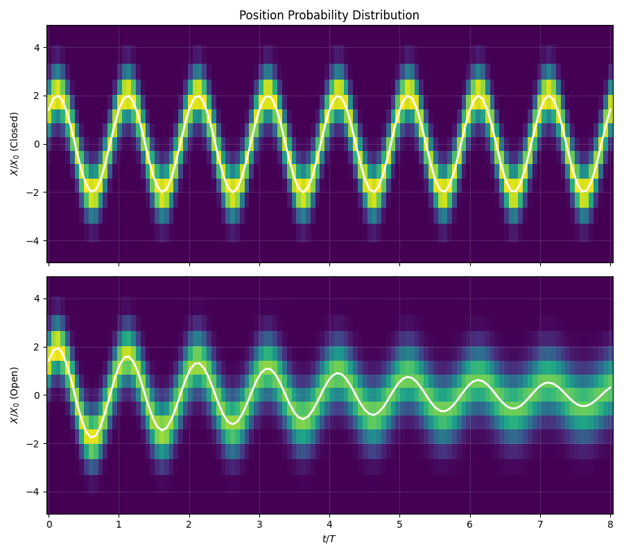
Figure 44: Closed and open dynamics are calculated in qutip as validation: do we get dynamics comparable to our previous model done using my custom code?
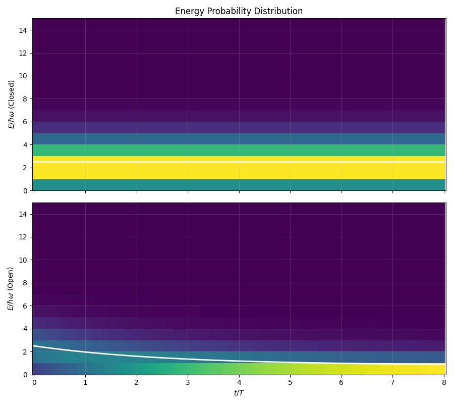
Figure 45: Closed and open dynamics are calculated in qutip, and the probability distribution is plotted over energy as as validation: do we get dynamics comparable to our previous model done using my custom code?
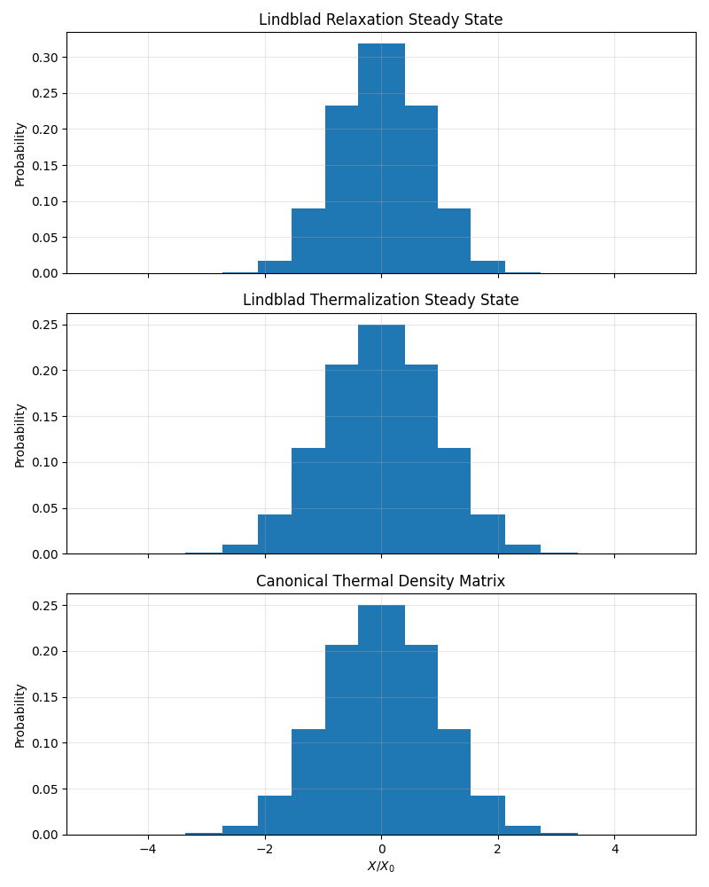
Figure 46: The probability distribution over position of the steady-state density matrix from thermalization is compared to that of the thermal steady-state density matrix.
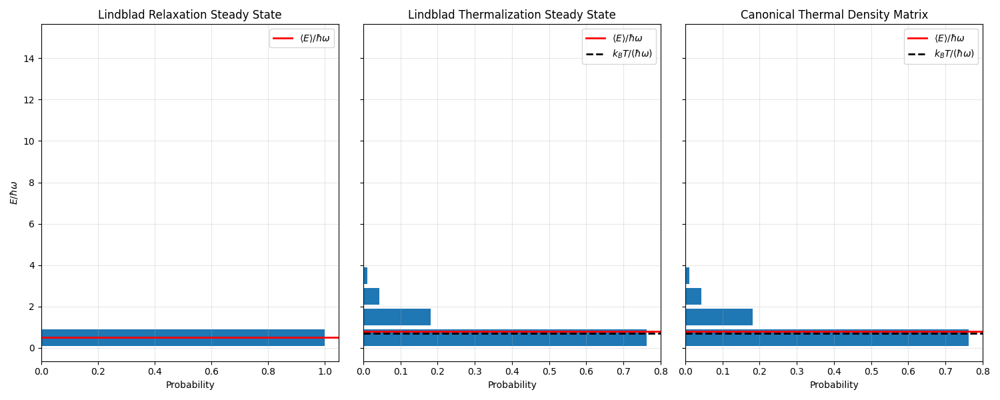
Figure 47: The probability distribution over energy of the steady-state density matrix from relaxation is compared to that of thermalization as well as that of the thermal steady-state density matrix.
- For the oscillator here, see that:
- the steady-state density matrix of the relaxation Lindblad operator alone \(\left\{ \hat{L}_{1}\right\}\) is the ground state
- the steady-state density matrix the thermalization Lindbald operators \(\left\{ \hat{L}_{1},\hat{L}_{2}\right\}\) is the thermal steady state density operator
9. Molecular Vibrations in QCA
- When an electron occupies a molecular quantum dot, the bond lengths to nearby atoms can change
- When an electron transfers from one dot to another, these changes in atomic bonds result in molecular vibrations
9.1. Hamiltonian for a QCA Cell with Molecular Vibrations
- To model molecular vibrations, we can use a quantum harmonic oscillator
- To associate these vibrations with electron transfer events in a QCA
cell, we can make a composite quantum system of a two-state QCA cell
and the quantum harmonic oscillator
The Hamiltonian for this system may be written as
\begin{equation} \label{org91c05dd} \hat{H}=\hat{H}_{e}\otimes\hat{I}_{v}+\hat{H}_{ev}+\hat{I}_{e}\otimes\hat{H}_{v} \end{equation}\(\hat{H}_{e}\) is the free Hamiltonian describing the energy of the isolated electron, which we will write here as
\begin{equation} \label{orgb18e03e} \hat{H}_{e}=-\gamma\hat{\sigma}_{x}+\frac{\Delta}{2}\hat{\sigma}_{z} \end{equation}- Here, we are following the quantum mechanics convention for \(\hat{\sigma}_{z}\)
- \(\hat{I}_{e}\) is the identity operator for the electron
\(\hat{H}_{v}\) is the vibronic (QHO) Hamiltonian
\begin{equation} \label{orgd1b95a6} \hat{H}_{v}=-\frac{\hbar^{2}}{2m}\frac{d^{2}}{dQ^{2}}+\frac{1}{2}m\omega^{2}Q^{2}=\frac{\hat{P}_{Q}}{2m}+\frac{1}{2}m\omega^{2}\hat{Q}^{2}+\hbar\omega\left(\hat{a}_{Q}^{\dagger}\hat{a}_{Q}+\frac{1}{2}\hat{I}_{v}\right) \end{equation}where
- \(\hat{Q}\) is is the vibronic position operator
- \(\hat{P}_{Q}\) is its momentum operator
- \(m\) is the oscillator's effective mass
- \(\omega\) is the oscillator's frequency of oscillation
- \(\hat{I}_{v}\) is the identity operator for the vibron
- \(\hat{H}_{ev}\) is the interaction between the electron and
vibron
Typically we will use the Peipho-Kraus-Stein model, where the interaction is linear in both \(\hat{\sigma}_{z}\) and \(\hat{Q}\):
\begin{equation} \label{org8876a99} \hat{H}_{ev}=\frac{g_{ev}}{2}\hat{\sigma}_{z}\otimes\hat{Q}, \end{equation}where \(g_{ev}\) is the electron-vibron coupling constant, given by
\begin{equation} g_{ev}=\sqrt{2m\omega^{2}\lambda}, \end{equation}and \(\lambda\) is the inner-sphere reorganization energy, a measure of how much the electron transfer affects the geometry of the molecule
- In Equation \eqref{org91c05dd}, it is explicit that we exand both the Hamiltonian \(\hat{H}_{e}\) for the two-dimensional electronic state and the Hamiltonian \(\hat{H}_{v}\) for and \(N\)-dimensional oscillator to a larger Hilbert space of dimension \(2N\)
It is customary in the literature to omit the identity operators from Equation \eqref{org91c05dd} leaving them implicit rather than explicit, so that we rewrite Equation \eqref{org91c05dd} as
\begin{equation} \label{org99aa48e} \hat{H}=\hat{H}_{e}+\hat{H}_{ev}+\hat{H}_{v}=-\gamma\hat{\sigma}_{x}+\frac{\Delta}{2}\hat{\sigma}_{z}+\frac{g_{ev}}{2}\hat{\sigma}_{z}\otimes\hat{Q}+\frac{\hat{P}_{Q}}{2m}+\frac{1}{2}m\omega^{2}\hat{Q}^{2} \end{equation}
9.2. The Statics of an Electron+vibron QCA cell
Exercise 10.1 Calculate the ground state for a driven QCA molecule, including the effects of molecular vibration. Plot the vibron probability distribution over position, and provide a sketch of the resulting electronic configuration.
Show/hide solution ...
The following code provides a solution, with results shown in Figure 48.
import datetime as dt
import numpy as np
import scipy as sp
import matplotlib.pyplot as plt
import os
from qcapackage.quantum.harmonicoscillator \
import HarmonicOscillator as QHO
from qcapackage.quantum import linearalgebra as la
from qcapackage.quantum import computing as qc
from qcapackage import constants as const
from qcapackage.quantum import visualization as viz
def dag( Q ):
'''Calculates the Hermitian adjoint of a quantum object
(vector or operator).
Args:
qobj: an numpy.ndarray representing a operator, bra,
or ket.
Returns:
The Hermitian adjoint of Q.
'''
return np.conj( Q.transpose() )
def expectation_value( op, psi ):
"""
Return the expectation value for an
operator op.
Args
psi: a state vector
Returns real expectation value
"""
temp = dag( psi ) @ op @ psi
return temp[0,0].real
# Pauli matrices
Sx, Sy, Sz = qc.Sx, qc.Sy, qc.Sz
rx, ry, rz = la.rx, la.ry, la.rz
Ie = Sx @ Sx # electronic identity operator
qe = const.qe # [C] fundamental charge
eps0 = const.eps0 # [F/m] = [C/V*m]
ket0, ket1 = qc.ket0, qc.ket1
# Projection matrices |0><0| and |1><1|
P0 = la.density_matrix( ket0 )
P1 = la.density_matrix( ket1 )
ketMinus = (1/np.sqrt(2)) * (ket0 - ket1)
# Parameters
a = 1E-9 # [m] cell characteristic length
g = 0.05 # [eV] tunneling energy
E_reorg = 0.44 # [eV] reorganization energy
Ek = 0.421 # [eV] kink energy
# Create a QHO object
N = 15 # [] dimension of oscillator
# Uses default m = 6 amu and f = 300 inv cm
qosc = QHO(N=N)
# Extract operators from the qosc object
Q0 = qosc.Q0 # [nm] characteristic length
Q = qosc.X # [nm] position operator
Qval, _ = np.linalg.eigh(Q)
Hv = qosc.H # [eV] vibronic Hamiltonian, energy basis
Iv = np.eye(N, dtype='complex')
Pdrv = 1
D = Pdrv*Ek
# [eV/nm] electron-vibron coupling constant
gev = np.sqrt( 2*qosc.m*qosc.w**2*E_reorg)
He = -g*Sx - 0.5*D*Sz # [eV] electronic
# [eV] interaction term
Hev = -0.5*gev*np.kron(Sz, Q)
# [eV] total Hamiltonian
H = np.kron(He,Iv) + np.kron(Ie,Hv) + Hev
Egnd, psi_gnd = la.ground_state( H )
rho_gnd = la.density_matrix( psi_gnd )
rho_e, rho_v = la.bipartite_traceout( rho_gnd, 2, N )
# There are two methods for calculating polarization
# 1 - project Sz into full Hilbert space
# 2 - get a reduced density operator for electron
# use the Sz operator as before
# Here we will use method 2 so we can also see what
# the vibron is doing
Ptgt = -la.expectation_value(Sz, rho_e)
print(f'Driver polarization: {Pdrv}; ' \
f'target polarization: {Ptgt:5.3f}')
inset_w, inset_h = 0.65, 0.65
inset_x_l, inset_x_r = -0.125, 0.5
inset_y_b, inset_y_t = 0.125, 0.125
# Lower right inset - borrow previously-created inset
Pd, Pt = 1, -1
ins_name = os.path.join('img', f'inset_driven_dqd_{Pd}_{Pt}.png')
plt.close('all')
fig, ax = plt.subplots(2, 1)
ax[0].bar( Qval/Q0, np.diag( qosc.change_basis(rho_v,
fr='energy',
to='position') ) )
ax[0].set_ylabel('Probability', fontsize=18)
ax[0].grid(True)
# Add a QCA inset images
viz.add_inset_image( ax[0],
[inset_x_l, inset_y_b, inset_w, inset_h],
ins_name )
# Case 2
Pdrv = -1
D = Pdrv*Ek
He = -g*Sx - 0.5*D*Sz # [eV] electronic
# [eV] total Hamiltonian
H = np.kron(He,Iv) + np.kron(Ie,Hv) + Hev
Egnd, psi_gnd = la.ground_state( H )
rho_gnd = la.density_matrix( psi_gnd )
rho_e, rho_v = la.bipartite_traceout( rho_gnd, 2, N )
Ptgt = -la.expectation_value(Sz, rho_e)
print(f'Driver polarization: {Pdrv}; ' \
+ f'target polarization: {Ptgt:5.3f}')
# Lower right inset - borrow previously-created inset
Pd, Pt = -1, 1
ins_name = os.path.join('img',
f'inset_driven_dqd_{Pd}_{Pt}.png')
ax[1].bar( Qval/Q0, np.diag( qosc.change_basis(rho_v,
fr='energy',
to='position') ) )
ax[1].set_xlabel(r'$Q/Q_0$', fontsize=18)
ax[1].grid(True)
# Add the two QCA inset images
viz.add_inset_image( ax[1],
[inset_x_r, inset_y_b, inset_w, inset_h],
ins_name )
ax[1].set_xlabel(r'$Q/Q_0$')
ax[1].set_ylabel('Probability', fontsize=18)
plt.tight_layout()
fname = os.path.join('img', f'driven_electron_vibron_distrib.png')
plt.savefig( fname )
plt.close('all')
print(f'\n[[./{fname}]]')
print(f'\nCode executed at {dt.datetime.now()}')
Driver polarization: 1; target polarization: -0.993 Driver polarization: -1; target polarization: 0.993 [[./img/driven_electron_vibron_distrib.png]] Code executed at 2026-09-08 05:49:22.737676
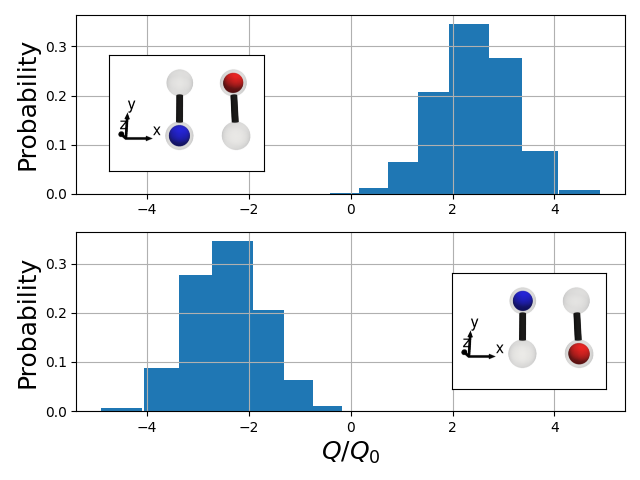
Figure 48: Dynamics calculated using the Lindblad equation reflect damping and dissipation. (a) The QHO modeled using the quantum Liouville equation behaves as a closed-system, in which oscillations persist forever. In the case of Lindblad evolution, however, damping is evident as oscillations decrease in amplitude with time. (b) In the energy basis, Liouvillian evolution conserves energy, but an exponential decrease in energy is evident in the open system modeled using the Lindblad equation.
- Observations:
- The bias on the electron results in a well-defined QCA device state
- The state of the electron couples to state of the vibron, shifting it to one side of \(Q=0\)
- Reversing the driver state reverses the bias on the target molecule and causes the opposite response in the molecular bonds
Exercise 10.2 Calculate the cell-cell response for a driven QCA molecule, including the effects of molecular vibration. Compare this result to that of a QCA cell without any molecular vibrations.
Show/hide solution ...
The following code provides a solution, shown in Figure 49.
import datetime as dt
import numpy as np
import scipy as sp
import matplotlib.pyplot as plt
import os
from qcapackage.quantum.harmonicoscillator \
import HarmonicOscillator as QHO
from qcapackage.quantum import linearalgebra as la
from qcapackage.quantum import computing as qc
from qcapackage import constants as const
from qcapackage.quantum import visualization as viz
def dag( Q ):
'''Calculates the Hermitian adjoint of a quantum object
(vector or operator).
Args:
qobj: an numpy.ndarray representing a operator, bra,
or ket.
Returns:
The Hermitian adjoint of Q.
'''
return np.conj( Q.transpose() )
def expectation_value( op, psi ):
"""
Return the expectation value for an
operator op.
Args
psi: a state vector
Returns real expectation value
"""
temp = dag( psi ) @ op @ psi
return temp[0,0].real
# Pauli matrices
Sx, Sy, Sz = qc.Sx, qc.Sy, qc.Sz
rx, ry, rz = la.rx, la.ry, la.rz
Ie = Sx @ Sx # electronic identity operator
qe = const.qe # [C] fundamental charge
eps0 = const.eps0 # [F/m] = [C/V*m]
ket0, ket1 = qc.ket0, qc.ket1
# Projection matrices |0><0| and |1><1|
P0 = la.density_matrix( ket0 )
P1 = la.density_matrix( ket1 )
ketMinus = (1/np.sqrt(2)) * (ket0 - ket1)
# Parameters
a = 1E-9 # [m] cell characteristic length
g = 0.05 # [eV] tunneling energy
E_reorg = 0.44 # [eV] reorganization energy
nPdrv = 35
Ek = 0.421 # [eV] kink energy
Pdrv = np.linspace(-1, 1, nPdrv)
# Create a QHO object
N = 15 # [] dimension of oscillator
# Uses default m = 6 amu and f = 300 inv cm
qosc = QHO(N=N)
# Extract operators from the qosc object
Q0 = qosc.Q0 # [nm] characteristic length
Q = qosc.X # [nm] position operator
Qval, _ = np.linalg.eigh(Q)
Hv = qosc.H # [eV] vibronic Hamiltonian, energy basis
Iv = np.eye(N, dtype='complex')
# [eV/nm] electron-vibron coupling constant
gev = np.sqrt( 2*qosc.m*qosc.w**2*E_reorg)
# [eV] interaction term
Hev = -0.5*gev*np.kron(Sz, Q)
Ptgt_vib = np.zeros((nPdrv,)) # electron coupled to vibron
Ptgt = np.zeros((nPdrv,)) # free QCA system - no vibrons
for iPdrv, Pdval in enumerate(Pdrv):
D = Pdval*Ek
# Bias affects electron Hamiltonian
He = -g*Sx - 0.5*D*Sz # [eV] electronic
# [eV] total Hamiltonian
H = np.kron(He,Iv) + np.kron(Ie,Hv) + Hev
Egnd, psi_gnd = la.ground_state( H )
rho_gnd = la.density_matrix( psi_gnd )
rho_e, rho_v = la.bipartite_traceout( rho_gnd, 2, N )
Ptgt_vib[iPdrv] = -la.expectation_value(Sz, rho_e)
Egnd_no_vib, psi_gnd_novib = la.ground_state(He)
Ptgt[iPdrv] = -la.expectation_value(Sz, psi_gnd_novib)
inset_w, inset_h = 0.65, 0.65
inset_x_l, inset_x_r = -0.125, 0.5
inset_y_b, inset_y_t = 0.125, 0.125
# Lower right inset - borrow previously-created inset
Pd, Pt = 1, -1
ins_name = os.path.join('img', f'inset_driven_dqd_{Pd}_{Pt}.png')
plt.close('all')
fig, ax = plt.subplots()
ax.plot(Pdrv, Ptgt_vib, label='with vibron', marker='*')
ax.plot(Pdrv, Ptgt, label='without vibron', marker='o')
ax.set_ylabel(r'$P_{tgt}$', fontsize=18)
ax.set_xlabel(r'$P_{drv}$', fontsize=18)
ax.grid(True)
ax.legend()
# Add a QCA inset images
'''
viz.add_inset_image( ax[0],
[inset_x_l, inset_y_b, inset_w, inset_h],
ins_name )
'''
plt.tight_layout()
fname = os.path.join('img', f'driven_electron_vibron_cell-cell-pol.png')
plt.savefig( fname )
plt.close('all')
print(f'\n[[./{fname}]]')
print(f'\nCode executed at {dt.datetime.now()}')
[[./img/driven_electron_vibron_cell-cell-pol.png]] Code executed at 2026-09-08 05:49:25.539371
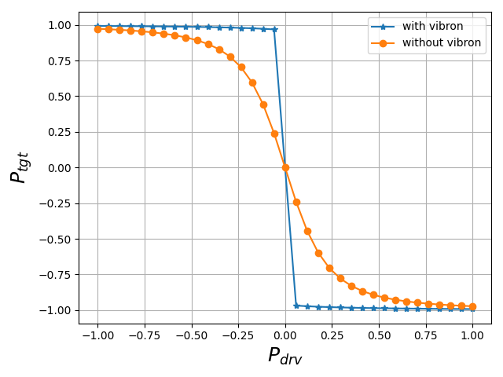
Figure 49: Electron-vibron coupling enhances the cell-cell response. This is done through a phenomena called the self-trapping of charge. The reorganization of atoms due to the electron transfer enhances the trapping of charge on a dot, leading to better localization and a stronger polarization response.
9.3. Dynamics: A Driven Cell with an Abrupt Driver Switch
Exercise 10.1 Let us prepare a target cell by setting a nearby a driver cell to have the state \(P_{\text{drv}}\left(t<0\right)=1\), and let us assume that at \(t=0\), the target cell is in steady state. Find the electronic polarization and probability distribution over space as functions of time for \(t>0\) if at \(t=0,\) the driver state is abruptly switched to \(P_{\text{drv}}\left(t>0\right)=-1\). The initial preparation and the abrupt driver switch at \(t=0\), and the final configuration are shown in Figures 50-52. In more detail:
- The driver is set to state \(P_{drv}=-1\) in order to prepare a vibronic QCA cell to be in state \(\ket{0}\) with \(P=1\), as shown in Figure 50. The vibronic QCA cell is relaxed close to its ground state.
- At \(t=0,\) the driver is abruptly switched to \(P_{drv}=1\). This injects a kink of energy into the system, exciting the target cell by \(E_{k}\). See Figure 51 What happens next (\(t>0^{+}\))?
After a long time, the electron has transferred to the other dot, and the QCA has achieved a lower-energy configuration by releasing energy to the environment as heat. The final configuration is shown in Figure 52.
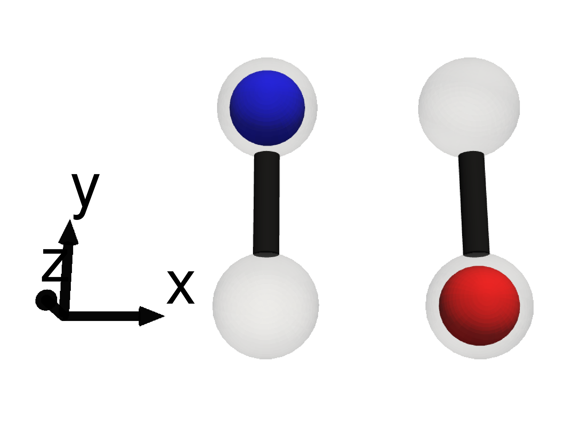
Figure 50: \(t<0\)
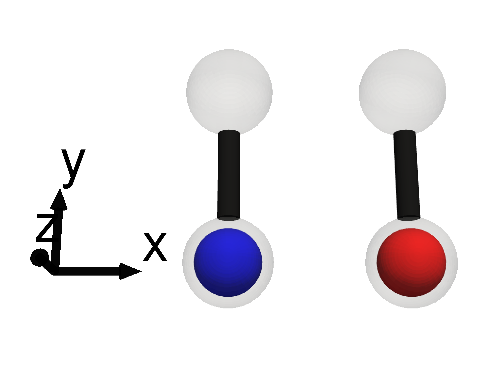
Figure 51: \(t=0^{+}\)
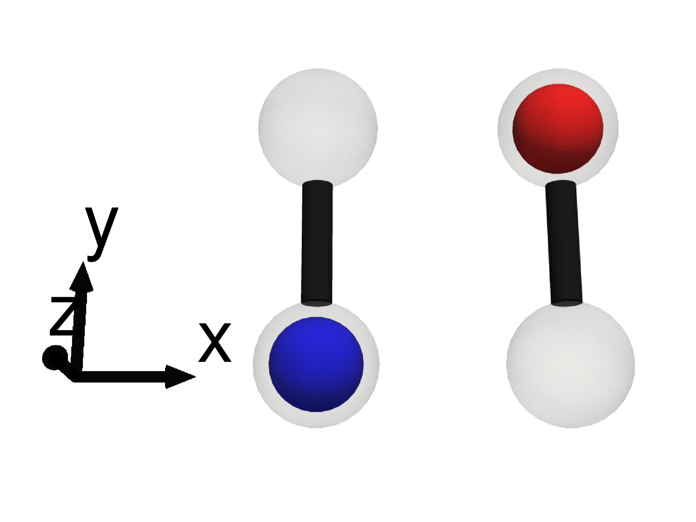
Figure 52: \(t\rightarrow\infty\)
Show/hide solution ...
The following code provides a solution, shown in Figure 53.
import datetime as dt
import numpy as np
import scipy as sp
import matplotlib.pyplot as plt
import os
from qcapackage.qca.vibronicdqd import VibronicDQD as VDQD
from qcapackage.qca.twodotcell import TwoDotCell as DQD
import qcapackage.quantum.linearalgebra as la
from qcapackage.quantum.timeevolution import lindblad
from odeintw import odeintw
# ==================================================
# Step 1 - Prepare the ground state
# ==================================================
Qdrv = DQD(position=np.array([[-1],[0],[0]]))
Qdrv.polarization = 1
Qtgt = VDQD()
# Accumulate potential on target due to driver
Qtgt.accumulate_potential_from(Qdrv)
# The initial state for our Lindbladian evolution
# will be the ground state for Pdrv = -1
psi0 = Qtgt.ground_state()
rho0 = la.density_matrix(psi0)
# ==================================================
# Step 2 - Calculate dynamics for t > 0
# ==================================================
# switch the driver
Qdrv.polarization = -1
# Recalculate driver potential
Qtgt.zero_neighbor_potential()
Qtgt.accumulate_potential_from(Qdrv)
# Lindbladian evolution (not using Qutip)
Qtgt.make_lindblad_operators() # default is thermalization
# We'll use H to extract information
H = Qtgt.get_h()
T = Qtgt.qho.T # [s] Oscillator period
nt = 250
t = np.linspace(0, 50*T, nt)
# Calculate thermal density matrix
# This might be the steady-state solution
rho_th = la.thermal_density_matrix( 300, H )
_, rhov_th = la.bipartite_traceout( rho_th,
Qtgt.dimension,
Qtgt.qho.N)
Eexpth = la.expectation_value( H, rho_th)
Qexpth = la.expectation_value( Qtgt.qho.X, rhov_th )
Egs, psigs = la.ground_state( H )
rhogs = la.density_matrix( psigs )
_, rhovgs = la.bipartite_traceout( rhogs,
Qtgt.dimension,
Qtgt.qho.N)
Qexpgs = la.expectation_value( Qtgt.qho.X, rhovgs )
# sol - solution to the Lindblad equation
sol = odeintw(lindblad, rho0, t,
args=(H, Qtgt.LindbladOps))
# Storage arrays for time dynamics
PDX = np.zeros( [Qtgt.qho.N, nt] )
Xexp = np.zeros( (nt, ) )
Pexp = np.zeros( (nt, ) )
Eexp = np.zeros( (nt, ) )
# ==================================================
# Step 3 - Post-processing
# ==================================================
# extract data from sol array
for it, rhot in enumerate(sol):
rhote, rhotv = la.bipartite_traceout( rhot,
Qtgt.dimension,
Qtgt.qho.N )
Eexp[it] = la.expectation_value( H, rhot )
Xexp[it] = la.expectation_value( Qtgt.qho.X, rhotv )
Pexp[it] = la.expectation_value( Qtgt.Zop.full(), rhote )
rhotvX = Qtgt.qho.change_basis( rhotv,
fr='energy',
to='position' )
PDX[:,it] = np.diag(rhotvX).real
# ==================================================
# Step 4 - Visualization
# ==================================================
# 2D arrays for plotting
tt, XX = np.meshgrid( t/T,
Qtgt.qho.Xval/Qtgt.qho.Q0,
indexing='xy' )
plt.close('all')
fig, ax = plt.subplots(2, 1)
ax[0].plot(t/T, Pexp)
ax[0].set_xlim([t[0]/T, t[-1]/T])
ax[0].grid(True)
ax[0].set_ylabel('$P$', fontsize=16)
ax[1].contourf( tt, XX, PDX, levels=75)
ax[1].plot( t/T, Xexp/Qtgt.qho.Q0, color='white' )
ax[1].set_xlabel(r'$t/T$', fontsize=16)
ax[1].set_ylabel(r'$\left< Q \right>/Q_o $', fontsize=16)
plt.tight_layout()
fname = os.path.join('img', 'VibronicDQD_abrupt_switch.png')
plt.savefig(fname)
print(f'\n[[./{fname}]]')
plt.close("all")
fig, ax = plt.subplots()
ax.plot(t/T, Eexp)
ax.set_xlim([t[0]/T, t[-1]/T])
ax.grid(True)
ax.set_ylabel('$E$ (eV)', fontsize=16)
ax.set_xlabel(r'$t/T$', fontsize=16)
plt.tight_layout()
fname = os.path.join('img', 'VibronicDQD_abrupt_switch_energy.png')
plt.savefig(fname)
print(f'\n[[./{fname}]]')
plt.close("all")
print(f'\nCode executed at {dt.datetime.now()}')
Figure 53: Electron-vibron coupling enhances the cell-cell response. This is done through a phenomena called the self-trapping of charge. The reorganization of atoms due to the electron transfer enhances the trapping of charge on a dot, leading to better localization and a stronger polarization response.
10. Programming in Python
10.1. Python Basics
- Python is a wildly popular, versatile cross-platform computer programming language supported in Windows, Mac OS, and UNIX/Linux
- Numerous open-source packages are available for pre-built
functionality, but you may have to install them. These include:
- numpy for numerical tools, such as vectors, matrices, and trigonometric functions
- matplotlib for MATLAB-like plotting
- qutip for modeling quantum systems
- qiskit for programming quantum computers
10.2. Obtaining Python
- I'm recommending obtaining Anaconda, a distribution made with natural
scientists, engineers, and data scientists (and others) in mind
- At this time, Python 2 and 3 are in use and available in Anaconda
- I prefer Python 3, because it is the direction of the future
- Python 2 is becoming depreciated, and Python 3 is becoming increasingly dominant
- At this time, Python 2 and 3 are in use and available in Anaconda
10.3. Installation
- Obtain Anaconda from their downloads page
- You may see my video: Install Python on Mac or PC (for FREE)
10.3.1. Windows Installation
- Windows users may download Anaconda and follow the (fairly) intuitive installation process
10.3.2. Mac Installation
- For Mac users, I recommend the command-line installation (not the graphical installation), since I've had the best luck with this when trying install packages
Before getting into this, I suggest being familiar with the Terminal. Others have video intros to the terminal, but so do I. Feel free to find another if this isn't helpful:
- Once you can Terminal, you can follow the Anaconda Mac Command-line Interface (CLI) installation instructions.
10.3.3. UNIX/Linux
- I have little experience with Linux, so I won't attempt to guide you here.
10.4. Test Your Python
- Now, you have to test your Python
- To do this, you have to run your Python
- A nice way to run Python is in Jupyter Lab
- To run Python, you can do the following
- On a Mac
- Open a Terminal window
- type
jupyter labfollowed byRETURNto launch Jupyter Lab
- On a PC
- Start the Anaconda Navigator
- Launch Jupyter Lab
- On a Mac
- Once you have opened Jupyter Lab, a new web browser will arise with a
Jupyter Lab graphical interface
- You can begin coding once the Jupyter Lab window is open!
If you need help starting Jupyter Lab, please see my video: Launch Jupyter Lab and Start Coding!
print('hello world')hello world
- My "hello world" is the single line in the listing above
- Observations:
- There is a
print()command with a single argument- That argument is a string, which is a sequence of characters
- You can define a string by putting the character sequence between
a pair single quotes (
'some text') or double quotes (i.e,"some text"- chose one or the other, but not both to define your string)
print()does one thing: it makes the input string visible in the Python output
- There is a
Another check you can perform is to make Python print its version, as shown here
import sys # make the sys package available for use print(sys.version) # print the version information3.11.7 (main, Dec 15 2023, 12:09:56) [Clang 14.0.6 ]
- This code uses the built-in
sysmodule to query the Python version, andprint()displays the result.- We see that I'm using Python 3, version 3.11.7.
- The
#character is the beginning of an inline comment- The
#character an any subsequent characters are not evaluated - Comments are strictly for the human reader to aid in code understandability (very important)
- Comments clarify code to others and clarify a thought process to oneself
- The
10.5. Making a Virtual Environment
- See also my video, Customizing Python in Anaconda - Environments and Package Installation
- Virtual environments may be thought of as a particular installation of
Python on your computer with a particular set of packages installed
- Your computer can host several virtual environments, but we typically use only one environment at a time
- It is a good practice to use a separate virtual environment for each
Python project
- With multiple projects, the required packages may conflict
- For example
- Project 1 might require packages A and B
- Project 2 might require packages A and C
- Sometimes, we may have conflicts
- Package C might conflict with package B
- Packages B and C might require different versions of package A
- Virtual environments avoid conflicts by allowing you to use
different package sets for individual projects
- This also makes your work more reproducible with a
requirements.txt file
- This file specifies the specific packages you use in your environment and their versions
- You can then share your requirements.txt file with others, and along with your Python code developed within that environment, and everything should work harmoniously on your collaborator's computer
- Anaconda virtual environments even give you the ability to specify different versions of Python
- This also makes your work more reproducible with a
requirements.txt file
- Anaconda comes with a package manager called
condacondacan create/manage environments and packages
- See also my video, Customizing Python in Anaconda - Environments and Package Installation
10.5.1. Creating Environments
- To create an environment:
- Open a terminal application
- On Windows, start the Anaconda Navigator and launch the Powershell application
- On a Mac, open a Terminal (or iTerm2) window
- In the terminal, type
conda create --name <EnvName> python=3.10and press RETURN (ENTER) to execue the command- Here, you replace
<EnvName>the the specific name you choose for your environment- Short, simple names will be most effective
- This creates your environment and specifies that we want to use
Python 3.10
- I've found that newer versions of Python don't work well with Qiskit
- Here, you replace
- Open a terminal application
- You can verify that your environment is created by typing
conda info --envs- If the environment appears in the resulting list, you have successfully created it
- Otherwise, you may need to try again
10.5.2. Activating Your Environment
- After creating your environment–especially if this is the first
environment you've created–it is likely that your base environment is
active
- You can tell this by looking at the start of your prompt string
- If it says
(base), then, then your base environment is active
- If it says
- You can tell this by looking at the start of your prompt string
- To activate you environment, type at the Powershell or Terminal
prompt:
conda activate <EnvName>- This activates your environment so that you can:
- install packages or
- use the packages you previously installed in that environment
- This activates your environment so that you can:
- You can deactivate your environment by typing
conda deactivateat the Powershell/Terminal prompt
10.5.3. Installing Packages
- You must sometimes install packages for your new environment to add capabilities
- Here, we will focus on the following:
jupyterlab- allows for an interactive session in your new environment (it's installed by default in thebaseenvironment)qiskit- allows you to develop quantum computing circuitsqiskit-aer- allows you to simulate quantum circuitsmatplotlib- helps you visualize quantum circuitspylatexenc- helps you visualize quantum circuits in a nicer way than the default
- For a walk-through on the package installation, see my video A Python Environment for Quantum Computing
- To install packages in an environment:
- Open the Powershell or Terminal as needed
- Activate the desired environment
- For each package to be installed:
- First, try typing
conda install <packagename>- When prompted, type
y+RETURN
- When prompted, type
- First, try typing
- Troubleshooting
- If
conda install <packagename>doesn't work (you see a failed to resolve the environment, try searching for a specific installation command, such asconda install conda-forge::pylatexenc=in the case of =pylatexenc- This points example points to an installation on the
conda-forgepackage collection
- This points example points to an installation on the
- If
conda install ...fails despite specifying a package collection, try installing withpip install ...instead ofconda install .... As a note, you need not specify a repository likeconda-forgewhen you usepip install ...
- If
10.5.4. Listing Installed Packages
- To install packages installed in the active environment, type
conda listin the Powershell/Terminal prompt
10.6. Python Programming Basics
10.6.1. Level 0: Python as a Calculator
- The simplest way to use Python is as a calculator
- Some basic arithmetic operations include addition (
+), subtraction (-), multiplication (*), division (/), modulus (remainder,%), integer division (//), and exponentiation (**) These are illustrated in the following listing
print(3+5) print(3-5) print(3*5) print(5/3) print(5%3) print(5//3) print(3**5)8 -2 15 1.6666666666666667 2 1 243
- Notice that here, the input to
print()is not a string, but a mathematical expression.- Python is doing the following in each
print()command:- Evaluating each mathematical expression
- Automatically converting the result to a string, which is the
input for
print().
- Python is doing the following in each
For improved readability of the results, we can combine the arithmetic expression with a string using the
.format()method, as illustrated here:print('3+5 = {0}'.format(3+5)) print('3-5 = {0}; 5/3 = {1}'.format(3-5, 5/3)) print('3-5 = {0}; 5/3 = {1:06.3f}'.format(3-5, 5/3)) # nicer formatting3+5 = 8 3-5 = -2; 5/3 = 1.6666666666666667 3-5 = -2; 5/3 = 01.667
- Observations
- There is a string as the input to the
print()function - Each string has braces
{n}with a non-negative integer index (\(n\))- Each indexed pair of braces is a placeholder for an embedded value
- The
.format()method specifies a list of values for the various placeholders - The \(k\)-th value from the list goes in placeholder indexed with \(k-1\).
- Line 3 of the above listing is the same as line 2, but with a
small change: for placeholder 1, we add
:06.3f- The "
:" indicates the presence of a formatting string,06.3f 0allows for leading zeros (not used in this case). This could be omitted if we don't want leading zeros6reserves a total 6 characters for the placeholder, including the decimal.3reserves 3 characters for the decimal portion of the numberfspecifies that we are expecting a floating-point number format (we could also specifydfor an integer format orsif we want to put a string in the placeholder)- The formatting string is optional. Without it, Python uses default behaviors to display the value assigned to the placeholder.
- The "
- There is a string as the input to the
10.6.2. Level 1: Variables in Python
- Your powers increase and life becomes better when you can use
variables
- Variables are defined on the fly (no previous declarations are
needed) using the assignment operator (
=) - From left to right, provide a valid variable name , an assignment
operator, and a value or expression
- Any value provided will be stored in memory, accessible using the variable name you provided
- Any expression will be evaluated and converted to a value, and that value will be stored in memory, accessible using the same variable name.
- Variables are defined on the fly (no previous declarations are
needed) using the assignment operator (
Some examples are provided in this listing:
a = 3 # assign the value 3 to variable a b = 5 # assign 5 to variable b print('a+b = {0}'.format(a+b)) c = a - b # evaluate a-b, store in c d = a/b # evaluate a/b, store in d # Make an f-string myFirstFStr = f'c = {c}; d = {d:5.3f}' print(myFirstFStr) # print the f-string myStr = 'cat' # store a string mySecondFStr = f'random word: {myStr}' print(mySecondFStr) # Example: complex numbers X = 3 + 2j # complex number absX = abs(X) # print the complex X using an f-string # form the f-string inside of print() print(f'X = {X}; |X| = {absX:06.3f}')a+b = 8 c = -2; d = 0.600 random word: cat X = (3+2j); |X| = 03.606
Here, we also use f-strings (formatted string literals)
- To make an f-string, we prepend an
fonto a string definition, as in line 9 - Use the syntax
{x}within the f-string to embed the string representation of some variable,x, - The f-string may be printed, as in line 10
- An f-string may be formed inside a
print()command, as in line 22
- For more information on f-strings, see the Python documentation
- To make an f-string, we prepend an
One neat trick in Python is that we can define several variables using only one assignment statement:
x, y, z = 1+2, 2*3, 4/5 print(f'x = {x}; y = {y}; z = {z:5.3f}')x = 3; y = 6; z = 0.800
- Here, we assign three variables using one assignment operator (
=)- We follow the assignment with a
print()statement so that we can verify that our multivariable assignment worked
- We follow the assignment with a
- We recognize that variables may have different types
- Each variable type–or more generally, class (more on this later)–has a different syntax and behaviors governing what we can do with variables of that type
- We've encountered some different variable types by now:
- strings - store lists of characters, as in text
- integers - (self explanatory)
- floating point numbers (self explanatory)
- complex numbers - (self explanatory)
- We can interrogate the type of a variable, say,
x, using the commandtype(x) Examples of different variables and their type ("class") are shown here:
a, b, c, d = 1, 3.14, 2+3j, False print('type of a: {0}'.format(type(a))) print('type of b: {0}'.format(type(b))) print('type of c: {0}'.format(type(c))) print('type of d: {0}'.format(type(d)))type of a: <class 'int'> type of b: <class 'float'> type of c: <class 'complex'> type of d: <class 'bool'>
- In the above listing, we introduce another data type: bool, short for
Boolean
- Boolean variables have one of two values:
True, orFalse - These may be used to control wheter sections of code get executed or skipped, using logical control statements (a.k.a. logical controls)
- Boolean variables have one of two values:
- Boolean variables are typically the result of a comparison
- Comparisons may be performed between pairs of variables or values
- Here, we must use comparison operators such as
<(less than),>(greater than),==(equal to),>=(grater than or equal to),<=(grater than or equal to),!=(not equal to), etc.
- Here, we must use comparison operators such as
- Comparison operators are used to form logical expressions, which
are evaluated as either True or False. Some examples:
- The logical expression
3<5will evaluate toTrue, but3>5will evaluate toFalse a==bmay evaluate either toTrueorFalse, depending on the values stored inaandb.- If the two values are equal, then this statement evaluates to
True - otherwise, it evaluates to
False
- If the two values are equal, then this statement evaluates to
- The value resulting from a logical expression may be:
- stored in a variable, which will be of the type
bool - used in a logical control structure, which determines whether or not a block of code gets executed
- stored in a variable, which will be of the type
- The logical expression
- Comparisons may be performed between pairs of variables or values
Example code involving =bool=s and comparison is given here:
a = 3 < 5 b = 5 < 3 c, d, f = 3 > 5, 3 < 5, 3==5 print('type of a: {0}; a = {1}'.format(type(a), a)) print('type of b: {0}; b = {1}'.format(type(b), b)) print(f'c = {c}; d = {d}; f = {f}')type of a: <class 'bool'>; a = True type of b: <class 'bool'>; b = False c = False; d = True; f = False
10.6.3. Level 2: if statements
ifstatements allow you to execute blocks of code depending on the value of a logical expression- The basic
ifstatement:- begins with
if - identifies a variable or condition for evaluation, and
- ends with a colon (
:)
- begins with
An example is given here:
x = True # define a boolean (bool) variable if x: # This doesn't print if x is set to False print('The condition x evaluates as True.') # We could include other commands in the IF block # We only use one command here # Additional commands must have the same indentation # as the print() command print('This is independent of the IF statement.')The condition x evaluates as True. This is independent of the IF statement.
We now repeat the code of of the previous listing:
x = False # define a boolean (bool) variable if x: # This doesn't print if x is set to False print('The condition x evaluates as True.') # We could include other commands in the IF block # We only use one command here # Additional commands must have the same indentation # as the print() command print('This is independent of the IF statement.')This is independent of the IF statement.
- Here, the
ifstatement condition is evaluated asFalse(we set it toFalsein line 1), so theprint()command conditioned upon the it is never executed, and we don't see its output - Commands subordinate to the
ifstatement follow it and are defined by their indentation.- The first line of code with the same indentation as the
ifstatement is outside of theifstatement. - Unlike other languages, the Python
ifstatement is not defined using an end statement or a closing delimiter, but rather by returning to the level of indentation of theifstatement itself.
- The first line of code with the same indentation as the
if-elseStatements
- We can add to an
if SomeExpression:block anelse:block that provides code to be executed if the controlling logical expressionSomeExpression:isFalse An example of this is given here:
y = False if y: print('The condition y evaluates as True.') else: print('The condition y evaluates as False.') # The if statement is now over print('This is independent of the IF-ELSE statement.')The condition y evaluates as False. This is independent of the IF-ELSE statement.
if-elif-elseStatements
- We will use an
if-elif-elsestatement to illustrate the use of theNonevalue - Python's
elifis equivalent to else if or similar constructs in other languages. Here is an example:
x = None if x is None: y = 100 elif x < 50: y = 200 else: y = 300 # We're outside of the if-elif-else statement now print(f'y = {y}')y = 100
- We will use an
- We can add to an
Nonein Logical Expressions
Here is another example using
is not Noneas the controlling logical expression:y = True if y is not None: print('y has a value.')y has a value.
10.6.4. Level 3: Iterables
- Iterables are variables that contain other variables.
- These are useful for storing multiple related values
- Iterables are so called because they are collections of items over which we may iterate (as, in a for loop, for example)
- Strings
- Strings are iterables.
- A string,
'cat', for example, is a collection of characters. - For a string of \(n\) characters, each character can be addressed using an integer index, \(\left\{ 0,1,2,\ldots,n-1\right\}\).
- For a string stored in the variable
X, we reference each element using brackets ([and]) and an integer index,k. Here is an example with output
X = 'dog' print('The first letter of X is "{0}".'.format(X[0])) print('The second letter of X is "{0}".'.format(X[1]))The first letter of X is "d". The second letter of X is "o".
- A string,
- Now, consider a longer string
- We may not necessarily know a priori how long it is
- We can easily address its end element using the index
-1, or the second-to-last character using the index-2 - Additionally, we can reference multiple contiguous elements using a
range,
a:b, with integersaandb.- This returns elements
X[a]throughX[b-1]for a stringX.
- This returns elements
Examples of additional string indexing are shown here
X = 'hello world' # We can find the length of the string using len() print('X contains {0} characters.'.format( len(X) )) # reference from the begining of the string print('\nThe first letter of X is "{0}".'.format(X[0])) print('The second letter of X is "{0}".'.format(X[1])) # reference from the end of the string print('\nThe last letter of X is "{0}".'.format(X[-1])) print('The second-to-last letter of X is "{0}".'.format(X[-2])) # slice part of the string a, b = 2, 9 S = X[a:b] print(f'\nHere, we reference elements {a}:{b}: "{S}"') c, d = -7, -2 R = X[c:d] print(f'\nHere, we reference elements {c}:{d}: "{R}"')X contains 11 characters. The first letter of X is "h". The second letter of X is "e". The last letter of X is "d". The second-to-last letter of X is "l". Here, we reference elements 2:9: "llo wor" Here, we reference elements -7:-2: "o wor"
- Strings are iterables.
- Lists
- Lists are container variables used to contain other variables.
- Lists are flexible in that:
- A single list may contain variables of different types
- A list may contain other lists
- A list of several elements may be defined using brackets ([ and ])
comma-separated elements.
- The elements are indexed with an integer 0, 1, 2, …
- Individual elements may be accessed using brackets and an indexing integer or expression.
- Elements may also be referenced using negative indices:
-1specifies the last element;-2specifies the second-to-last element, etc.
Here is an example:
x = 9 myList = [x, 's', -3, 'cat', [1,2,3]] # form a list # print the first element print('The first element is: {0}'.format( myList[0] ) ) # print the second element print('The second element is: {0}'.format( myList[1] ) ) # print the last element print('The last element is: {0}'.format( myList[-1] ) ) # print the second-to-last element print('The second-to-the-last element is: {0}'.format( myList[-2] ) )The first element is: 9 The second element is: s The last element is: [1, 2, 3] The second-to-the-last element is: cat
- Tuples
- Tuples are like lists.
- They are indexed in the same manner, but tuples are immutable.
- Tuples are defined using parentheses
(and)instead of brackets[and]. - Tuples are useful when you have a collection of variables and you do not want them altered in any way.
Here is an example:
x = 9 myTup = (x, 's', -3, 'cat', [1,2,3]) # form a tuple # print the first element print('The first element is: {0}'.format( myTup[0] ) ) # print the second element print('The second element is: {0}'.format( myTup[1] ) ) # print the last element print('The last element is: {0}'.format( myTup[-1] ) ) # print the second-to-last element print('The second-to-the-last element is: {0}'.format( myTup[-2] ) )The first element is: 9 The second element is: s The last element is: [1, 2, 3] The second-to-the-last element is: cat
- Tuples are like lists.
- Dicts
- Dict is short for “dictionary”.
- This is like a list, but elements are not indexed by number, but rather using a string.
- The referncing/indexing string is called a key, and the associated element is called a value.
- Thus, a dict contains key-value pairs (KPVs).
- We define a dict using braces { and }
- KVPs are associated using a colon (:), and
- KVPs are separated by a comma
- dicts may be broken up over several lines of code, as can lists and tuples
- Use spaces for readability
An example of a simple dict definition is given in this listing
someDict = {"a": 3, "b": 'dog', "f": 5.4 } """ I used single quotes and double quotes in various places to demonstrate their interchangeability. """ print("someDict['a'] = {0}".format(someDict['a']) ) print("someDict['f'] = {0}".format(someDict["f"]) ) print('someDict["b"] = {0}'.format(someDict['b']) ) # Now I add a value to the dict someDict['d'] = ('New value', 19) # Finally, I show what it looks like to print a dict # and we show the modified dict. print(someDict)someDict['a'] = 3 someDict['f'] = 5.4 someDict["b"] = dog {'a': 3, 'b': 'dog', 'f': 5.4, 'd': ('New value', 19)}- Dicts are mutable: KVPs may be added, removed, or modified.
- Dict is short for “dictionary”.
10.6.5. Level 4: Loops and Iteration
- Loops help us perform repeated operations over an iterable.
- Iterables include lists, tuples, dicts, and ranges.
- Defining a
forloop
- Some key features of a
forloop:- The first line of a
forloop- begins with the keyword
for, - defines an iterator variable, say,
x - provides an iterable, say, the list
X - and ends with a colon (
:)
- begins with the keyword
- Statements to be included in the for loop follow the first line and
are indented by a few spaces more than is the first line
(
for x in X:)- I typically use an indentation of four spaces.
- The first statement with equal or lesser indentation than the
forstatement is recognized by Python to be outside of theforloop.
- The first line of a
As a first example, I define a list and then use two statements to print the elements of the list:
X = [1, 'a', (3,2,1), 'fish'] # define a list # use a FOR loop to print the elements of the list for ix in X: print(' Element:') # in the loop print(f' {ix}') # in the loop print('The loop has terminated.') # first statement after loop print('Program complete.')Element: 1 Element: a Element: (3, 2, 1) Element: fish The loop has terminated. Program complete.
- A
forloop with an index
- Sometimes we don't just want to loop over the elements, but we also want an integer index for each element.
To do this, we can use
enumerate(), as shown here:X = [5, 3, 7, 9, 8] Z = [] # empty list for idx, x in enumerate(X): print(f'X[{idx}] = {x}')X[0] = 5 X[1] = 3 X[2] = 7 X[3] = 9 X[4] = 8
- Notice that Python is a zero-indexed language, where the index starts
at zero.
- This is like C and C++, and many other languages.
- Some languages, such as Matlab or Maple, are one-indexed.
- A
forloop with an index - using a Common Index
- Sometimes we want to use multiple data sets.
- For example, we may want to add the elements of a list
Xto the corresponding elements of another list,Y.- We could use an enumerate object, as before; or,
- we may use a range object to obtain an index to address corresponding elements of the various lists.
I'll demonstrate the use of a range here:
X = [5, 3, 7, 9, 8] Y = [1, 4, 2, 11, 6] Z = [] # empty list for idx in range(0, len(X)): newZelement = X[idx] + Y[idx] Z.append( newZelement ) # add newZelement to Z print('X[{0}] + Y[{0}] = {1} + {2} = {3}'.format( idx, X[idx], Y[idx], Z[idx]) ) print(Z)X[0] + Y[0] = 5 + 1 = 6 X[1] + Y[1] = 3 + 4 = 7 X[2] + Y[2] = 7 + 2 = 9 X[3] + Y[3] = 9 + 11 = 20 X[4] + Y[4] = 8 + 6 = 14 [6, 7, 9, 20, 14]
- We make a range that starts at 0 and ends at a number just high
enough to capture all the elements of
X.- We also assume that
XandYhave the same number of elements.
- We also assume that
- The loop contains three instructions:
- Add the indexed elements of
XandY, storing this result innewZelement - Append
newZelementtoZ. - Print data so we know it worked properly.
- Add the indexed elements of
We could combine the first two instructions into one :
X = [5, 3, 7, 9, 8] Y = [1, 4, 2, 11, 6] Z = [] # empty list for idx in range(0, len(X)): newZelement = X[idx] + Y[idx] Z.append( newZelement ) # add newZelement to Z print('X[{0}] + Y[{0}] = {1} + {2} = {3}'.format( idx, X[idx], Y[idx], Z[idx]) ) print(Z)X[0] + Y[0] = 5 + 1 = 6 X[1] + Y[1] = 3 + 4 = 7 X[2] + Y[2] = 7 + 2 = 9 X[3] + Y[3] = 9 + 11 = 20 X[4] + Y[4] = 8 + 6 = 14 [6, 7, 9, 20, 14]
- A FOR loop without an index
- We may work with two data lists without making a common index.
In this technique, we iterate over two lists simultaneously using zip:
X = [5, 3, 7, 9, 8] Y = [1, 4, 2, 11, 6] Z = [] # empty list for x,y in zip(X, Y): Z.append( x + y ) # add to Z print('x + y = {0} + {1} = {2}'.format( x, y, Z[-1]) ) print(Z)x + y = 5 + 1 = 6 x + y = 3 + 4 = 7 x + y = 7 + 2 = 9 x + y = 9 + 11 = 20 x + y = 8 + 6 = 14 [6, 7, 9, 20, 14]
- Calculating Data from Members of a List - A Traditional Method
The first method we showcase here is very intuitive: it is the way we might do this in another language. We start with a list,
X, and we calculate a new listY, whose elements correspond to the square of the elements inX:X = [1, 2, 3, 4] Y = [] # define an empty storage list for x in X: Y.append( x**2 ) print(X) print(Y)[1, 2, 3, 4] [1, 4, 9, 16]
- Calculating Data from Members of a List - A More Pythonic Way
A more Pythonic method for calculating
Yis to use a list comprehension. Here, we define a list using the brackets again,[and]. Inside the brackets, we include:- an expression using a
for-loop variable, - the keyword
for - a declaration of the loop variable
x - the keyword
in the iterable,
X, over which we iterate It looks like the following:X = [1, 2, 3, 4] # Form an array of squared values (list comprehension) Y = [x**2 for x in X] print(X) print(Y)[1, 2, 3, 4] [1, 4, 9, 16]
Notice the syntax for the list comprehension is very English-like: we're instructing Python to define a list
Ywhose elements arex**2(xsquared) for eachxin the listX.
- an expression using a
- Some key features of a
10.6.6. Level 5: Intermediate Python - Functions
- Defining functions is a very powerful feature of many programming
languages.
- Functions allow for the automation of repeated tasks.
- Complex tasks may be programmed once, and errors may be worked out.
- Then, the finished function can be used repeatedly without having to code the process again.
- This eliminates opportunities for error, and it saves the programmer time!
- In Python, we define a function using the
defkeyword. We do the following:- Function header (first line)
- Write
def, followed by … - a function name, followed by …
- any input arguments
- Terminate using a colon (
:)
- Write
- Statements internal to the function
- These are delineated by writing code with (at least) one level of indentation with respect to the function header
- Function header (first line)
- In a script block, we define the function first with no indentation
for the function header.
- Subsequent code following the function definition may then invoke the function.
- A Function as a Set of Commands
A function may be as simple as a set of commands we wish to use and reuse. In this case, a function may not even require an input or provide any outputs.
def foo(): ''' This function, FOO, prints messages. It receives no inputs, nor does it return any functional outputs. ''' print('Function (foo) command 1.') print('Function (foo) command 2.') # The function definition is over, since we have reset # indentation back to zero. # Subsequent commands may invoke foo print('This is the first command outside the function foo.\n') foo() # we invoke the function defined aboveThis is the first command outside the function foo. Function (foo) command 1. Function (foo) command 2.
- A Function with a Single Input
Here is a simple function with one input and zero outputs.
def square(x): ''' square prints the square of its single input. ''' print('{0} squared is {1}.'.format(x, x**2)) # The function definition is over, since we have reset # indentation back to zero. # Subsequent commands may invoke square z = 7 square(z) # We can even use (and reuse) square print('\nNow, let us use square in a FOR loop:') for y in range(0,12): square(y)7 squared is 49. Now, let us use square in a FOR loop: 0 squared is 0. 1 squared is 1. 2 squared is 4. 3 squared is 9. 4 squared is 16. 5 squared is 25. 6 squared is 36. 7 squared is 49. 8 squared is 64. 9 squared is 81. 10 squared is 100. 11 squared is 121.
- A Function with a Single Input and a Single Output
Here is a simple function with one input and one output.
def cube(x): ''' cube eturns the cube of its single input. ''' return x**3 # The function definition is over, since we have reset # indentation back to zero. # Subsequent commands may invoke square z = 7 zc = cube(z) # We can even use (and reuse) square print(f'{z}^3 = {zc}')7^3 = 343
- A Function with a Single Input and Multiple Outputs
Here is a simple function with one input and multiple outputs. Formally, a Python function can return only a single output. To extract multiple outputs, we can make the function return a list or an other iterable. Here, we use a tuple:
def bar(x): ''' bar returns two values for a single input x: x**2. ''' xsq = x**2 # % is the modulo operator. # Thus: x % b is x modulo b xsq_odd = x % 2 == 1 # The return value value is a tuple containing # two elements return (xsq, xsq_odd) # The function definition is over, since we have reset # indentation back to zero. # Subsequent commands may invoke square # There are two ways in which we can retrieve our output: # METHOD 1: We can treat the output as a list/tuple/iterable. out_list = bar(2) print('For an input of 2, bar returns:') print(out_list) # METHOD 2: We can allow Python to "unpack" the tuple into # distinct variables z = 3 zc, zc_odd = bar(z) print(f'\nz = {z}; z^2 = {zc}; z^2 = odd? {zc_odd}') w = 4 wc, wc_odd = bar(w) print(f'\nw = {w}; w^2 = {wc}; z^2 = odd? {wc_odd}')For an input of 2, bar returns: (4, False) z = 3; z^2 = 9; z^2 = odd? True w = 4; w^2 = 16; z^2 = odd? False
10.6.7. Level 6: Classes
Classes are a very powerful programming concept. You get to define your own data type (a class) and define how variables of your custom type (objects) behave and interact. Classes and objects generalize the concepts of types and variables. This could be written in an analogy: variable:type::object:class
Classes are useful because we can define classes that use objects to represent real-world systems in a natural way. This is done in two major ways: (1) defining attributes for the class and/or objects of that class, and (2) defining behaviors for objects in the class. Behaviors are also called methods. These are simply functions that are associated with the class that can be used to manipulate or transform objects.
As an example, we might define a Person class to store information about various individuals. Each individual we wish to represent will have his or her own object. We would define in the class properties (attributes) that people have, such as a name and an age.
We have elementary data types, such as int, float, char, etc. We
also have iterables (list, tuple, dict, etc.). Classes allow us to
define objects which may be composite data types: objects in the class
may have properties of various elementary types.
Let's learn how the basics of this very powerful concept here.
- Defining a Person Class
To define a class, we need the basic parts.
- Header line.
- Every class definition begins with the keyword
class. - The class name follows
class, and typically begins with a capital letter, signifying that this is a user-defined class. - The class header ends in a colon (
:)
- Every class definition begins with the keyword
- Body
The body includes any code following the header delineated by at least one level of indentation deeper than the header. The following Person class has two attributes. These are defined in the
__init__method (function).class Person: def __init__(self, name, age): self.name = name self.age = age # Indentation is reset to end the class definition # Now, we use the class me = Person('Ricky', '23') # define me as an object of cass Person print(me) # print information about the object # We can access object attributes (fields, properties) using # "dot" notation print(me.name) print(me.age)<__main__.Person object at 0x1014b1490> Ricky 23
We observe that classes are useful for storing related pieces of information in a custom-variable known as an object. Now, let us add another method to indicate how useful it is to define both properties and methods.
- Header line.
- Adding Another Method to the Person Class
We write another method by defining this function (
def introduce(self):) one level of indentation subordinate to the class definition.class Person: def __init__(self, name, age): self.name = name self.age = age def introduce(self): print("I am {0}, and I'm {1} years old.".format( self.name, self.age)) # Indentation is reset to end the class definition # Now, we use the class me = Person('Ricky', '23') # Invoke the "introduce" method me.introduce() # Note: the syntax for calling a method is obj.method()I am Ricky, and I'm 23 years old.